For service, calibration, or technical support on the Model 686 TrueArb Arbitrary Waveform Generator, contact Berkeley Nucleonics Corporation. Email info@berkeleynucleonics.com or call 800-234-7858.
Safety
Review the following safety precautions to avoid injury and to prevent damage to this product or to any products connected to it. To avoid potential hazards, use this product only as specified. Only qualified personnel should perform service procedures.
General Safety Summary
To Avoid Fire or Personal Injury
Observe the following precautions during operation:
- Observe all terminal ratings. To avoid fire or shock hazard, observe all ratings and markings on the product. Consult the product manual for further ratings information before making connections to the product.
- Power disconnect. The power cord provides Mains disconnect.
- Do not operate without covers. Do not operate this product with covers or panels removed.
- Do not operate with suspected failures. If you suspect that there is damage to this product, have it inspected by qualified service personnel.
- Avoid exposed circuitry. Do not touch exposed connections and components when power is present.
- Do not operate in wet or damp conditions.
- Do not operate in an explosive atmosphere.
- Keep product surfaces clean and dry.
- Provide proper ventilation. Refer to the manual's installation instructions for details on installing the product so that it has proper ventilation.
Safety Requirements
This section contains information and warnings that must be observed to keep the instrument operating in a correct and safe condition. You are required to follow generally accepted safety procedures in addition to the safety precautions specified in this section.
Safety Symbols
Where the following symbols appear on the instrument's front or rear panels, or in this manual, they alert you to important safety considerations.
| Symbol | Meaning |
|---|---|
| Caution | Caution is required. Refer to the accompanying information or documents in order to protect against personal injury or damage to the instrument. |
| Shock hazard | Warns of a potential risk of shock hazard. |
| Measurement ground | Denotes the measurement ground connection. |
| Frame or chassis | Denotes a frame or chassis connection. |
| Safety ground | Denotes a safety ground connection. |
| On (Supply) | The DC power connect switch at the back of the instrument. |
| Off (Supply) | The DC power disconnect switch at the back of the instrument. |
| Power | Denotes Power. It is located on the front panel and denotes the Power On/Off status of the instrument. |
| Direct Current | Denotes Direct Current. |
| ESD sensitive | Denotes that the device connectors are sensitive to electrostatic discharge. |
The following signal words appear on the instrument and in this manual:
- CAUTION. The CAUTION sign indicates a potential hazard. It calls attention to a procedure, practice, or condition which, if not followed, could possibly cause damage to equipment. If a CAUTION is indicated, do not proceed until its conditions are fully understood and met.
- WARNING. The WARNING sign indicates a potential hazard. It calls attention to a procedure, practice, or condition which, if not followed, could possibly cause bodily injury or death. If a WARNING is indicated, do not proceed until its conditions are fully understood and met.
- CAT I. Installation (Overvoltage) Category rating per EN 61010-1 safety standard and is applicable for the instrument front panel measuring terminals. CAT I rated terminals must only be connected to source circuits in which measures are taken to limit transient voltages to an appropriately low level.
Environmental Considerations
Product End-of-life Handling
Observe the following guidelines when recycling an instrument or component.
Equipment Recycling
Production of this equipment required the extraction and use of natural resources. The equipment may contain substances that could be harmful to the environment or to human health if improperly handled at the product's end of life. In order to avoid release of such substances into the environment, and to reduce the use of natural resources, we encourage you to recycle this product in an appropriate system that will ensure that most of the materials are reused or recycled appropriately.
The WEEE symbol on the product indicates that this product complies with the European Union's requirements according to Directive 2002/96/EC on waste electrical and electronic equipment (WEEE).
Preface
This manual describes the installation and operation of the Model 686 Series using the TrueArb software. Basic operations and concepts are presented in this manual.
The easy touch screen display interface lets you create waveform scenarios in only a few screen touches.
In summary, the TrueArb technology provides AWG capabilities to the instrument, where every data point stored in memory is used to generate the output signal. The software architecture makes arbitrary waves easier to manipulate and more flexible once they have been created, and it adds sequencing features to the instrument.
Package Contents
The standard Model 686 Series package includes the following:
- 686-2C / 686-4C Arbitrary Waveform Generator equipment
- 32 GB USB Pen Drive for the software recovery procedure
- Power Cord
- Performance/Calibration Certificate
- CE Certificate
Models
| Item | Description |
|---|---|
| 686-2C-SE | 2 Ch, 20 GS/s AWG, 5 Vpp single ended outputs, long memory |
| 686-2CD | 2 Ch, 20 GS/s AWG, 2 Vpp (1 Vpp single ended) differential outputs, long memory |
| 686-4C-SE | 4 Ch, 20 GS/s AWG, 5 Vpp single ended outputs, long memory |
| 686-4CD | 4 Ch, 20 GS/s AWG, 2 Vpp (1 Vpp single ended) differential outputs, long memory |
Recommended Options and Accessories
| Item | Type | Description |
|---|---|---|
| 686-4C-8DIG | O | 8 CH Digital license for 686-4C |
| 686-4C-16DIG | O | 16 CH Digital license for 686-4C |
| 686-4C-32DIG | O | 32 CH Digital license for 686-4C |
| RIDER-MINI-SAS-HD | A | Mini-SAS HD cable for digital probe, 8 differential signals (available only for 4-channel models with long memory) |
| AT-DTTL8 | A | LVDS to LVTTL digital adapter probe (available only for 4-channel models with long memory) |
| AT-LVDS-SMA8 | A | CML to SMA digital adapter cable (available only for 4-channel models with long memory) |
| 686-4C-WAR | O | 3 years warranty extension for 686-4C |
| RIDER-686-SYNC | A | Multi-instrument synchronization cable for 686 series, 0.5 m |
| 686-2C-PAT | O | Serial Pattern Generator (SPG) for 686-2C |
| 686-4C-PAT | O | Serial Pattern Generator (SPG) for 686-4C |
| 686-FSS | O | 686 Fast Sequence Switch |
| GP-IB / USB-TMC | O | GPIB and USBTMC ports for remote control |
| RIDER-RACK | A | Rackmount kit for Rider instrument system |
O = Options, A = Accessories.
Key Features
The following list describes some of the key features of the Model 686 series:
- High resolution, high sampling rate: 14 bits, 20 GS/s.
- Best output frequency vs. amplitude trade off: 10 GHz.
- 5 Vpp single ended outputs or 2 Vpp (1 Vpp single ended) differential outputs (into 50 Ohm).
- Two operating modes in the same instrument: Function Generator (AFG) and Arbitrary Waveform Generator (AWG).
- Very long memory: up to 9 GSample per channel.
- Mixed signal generation: 2/4 analog outputs plus 8/16/24/32 digital outputs.
- Simple touch screen user interface to create complex waveform scenarios in only a few screen touches.
- Large 7 inch, 1024 x 600 capacitive touch LCD.
- Touchscreen or keypad data entry.
- Windows 10 operating system.
- USB and LAN interfaces.
- 3U case size with the possibility of rack mounting.
Mechanical Characteristics
| Characteristic | Model 686-2C | Model 686-4C |
|---|---|---|
| Net weight | 23.1 lb (10.5 kg) | 25.4 lb (11.5 kg) |
| Net weight with package | 24.3 lb (11.0 kg) | 26.5 lb (12.0 kg) |
| Height | 5.31 in (135 mm) | 5.31 in (135 mm) |
| Width | 17.5 in (445 mm) | 17.5 in (445 mm) |
| Depth | 12.6 in (320 mm) | 12.6 in (320 mm) |
Operating Requirements
Place the instrument on a cart or bench, observing the following clearance requirements:
- Top: 0.8 in (20 mm)
- Left and right side: 5.9 in (150 mm)
- Bottom: 0.8 in (20 mm)
- Rear: 3 in (75 mm)
The instrument is intended for indoor use and should be operated in a clean, dry, nonconductive environment. Occasionally a temporary conductivity caused by condensation must be expected. This location is a typical office or home environment. Temporary condensation occurs only when the product is out of service.
Environmental Requirements
Before using this product, ensure that its operating environment is maintained within these parameters:
| Parameter | Condition | Range |
|---|---|---|
| Temperature | Operating | +5 °C to +40 °C (+41 °F to +104 °F) |
| Temperature | Non-operating | -20 °C to +60 °C (-4 °F to +140 °F) |
| Humidity | Operating | 5% to 80% relative humidity with a maximum wet bulb temperature of 29 °C at or below +40 °C, non-condensing |
| Humidity | Non-operating | 5% to 95% relative humidity with a maximum wet bulb temperature of 40 °C at or below +60 °C, non-condensing |
| Altitude | Operating | 3,000 m (9,843 ft) |
| Altitude | Non-operating | 12,000 m (39,370 ft) |
Power Supply Requirements
No manual voltage selection is required because the AC adapter automatically adapts to the line voltage.
| Parameter | Value |
|---|---|
| Source voltage and frequency | 100 to 240 VAC ±10% @ 45-66 Hz |
| Power consumption (686-2C, 686-4C) | Maximum: 100 W |
Cleaning
Inspect the arbitrary waveform generator as often as operating conditions require. To clean the exterior surface, perform the following steps:
- Remove loose dust on the outside of the instrument with a lint-free cloth. Use care to avoid scratching the front panel display.
- Use a soft cloth dampened with water to clean the instrument. Use a 75% isopropyl alcohol solution as a cleaner.
Calibration
The recommended calibration interval is one year. Calibration should be performed by qualified personnel only.
Abnormal Conditions
Operate the instrument only as intended by the manufacturer.
If you suspect the instrument's protection has been impaired, disconnect the power cord and secure the instrument against any unintended operation.
The instrument's protection is likely to be impaired if, for example, the instrument shows visible damage or has been subjected to severe transport stresses.
Proper use of the instrument depends on careful reading of all instructions and labels.
Installing Your Instrument
Unpack the instrument and check that you received all items listed in the Package Contents section.
Power the Instrument On and Off and Launch the TA Application
Power On
- Insert the AC power cord into the power receptacle on the rear panel.
- Use the front-panel power button to power on the instrument.
- Wait until the system shows the Windows desktop.
- The TrueArb software starts automatically if the instrument was working in TrueArb mode at the previous power off.
Alternatively, push the TrueArb icon to launch the application from the desktop, or push the Switch App button to switch into TrueArb mode from another application.
Power Off
- Close the application in use.
- Press the front-panel power button to power off the instrument.
Protect Your Instrument from Misuse
Check Input and Output Connectors
When connecting a cable, be sure to distinguish the input connector from the output connectors to avoid making the wrong connection.

Obtaining the Latest Version Releases
The latest release of the software may not be installed on your instrument. The latest version can be found on the BNC website (berkeleynucleonics.com/downloads) in the support area.
Install the TrueArb Application
- Download the TrueArb setup package from the BNC website and decompress it to the instrument's local disk.
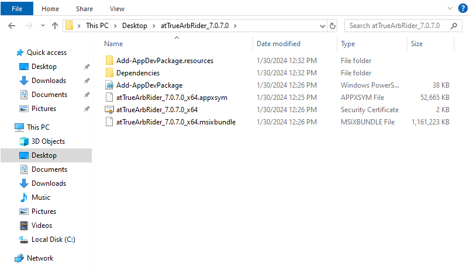
- Right-click on the “Add-AppDevPackage” file and select Run with PowerShell to start the installation.

- When the application has been installed, press the “Enter” button to continue.

USB Pen Drive and Recovery Procedure
In case of software failure or corrupted applications, it is possible to reinstall the full factory image of the software using the 32 GB USB pen drive included in the package.

Recovery Procedure
- Insert the recovery USB pen drive into a USB port of the instrument. If the instrument is off, press the power-on button; otherwise, restart the instrument. Check that a keyboard is correctly connected to the instrument.
- Once the instrument has started, press the F11 button repeatedly on the keyboard during the boot process to access the boot menu (see the image below).
- In the boot menu, select the “UEFI: USB DISK 3.0 PMAP, partition 1” choice and then press Enter.
- Press ‘1’ on the keyboard to start the recovery procedure.
- Enter the code “1234” to confirm the execution of the recovery procedure.
- Once the procedure is complete, press Enter to shut down the instrument.
- Remove the recovery USB pen drive and power on the instrument. Follow the instructions in step 2 to access the boot menu, then select the SATA SSD source. Press Enter to confirm.


Instrument Overview
Front Panel 686-2C
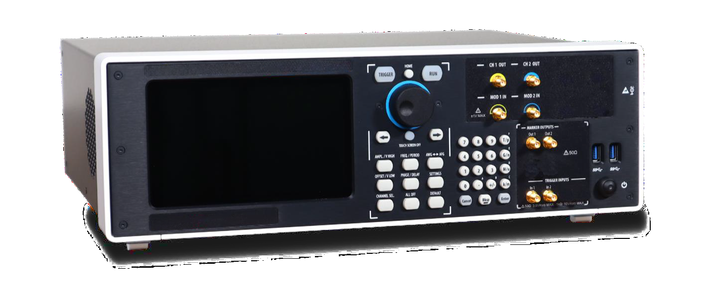
- 7 in (178 mm) capacitive touch screen
- Soft keyboard and rotary knob
- Single-ended analog outputs
- Trigger In and marker outputs
- Numeric keypad
- Two USB 3.0 ports and power on/off button
- Modulation inputs
Front Panel 686-4C
The front panel of the 686-4C model differs from the 686-2C in that it has twice the number of SMA analog output connectors, because each output channel has two complementary outputs (+ and -).
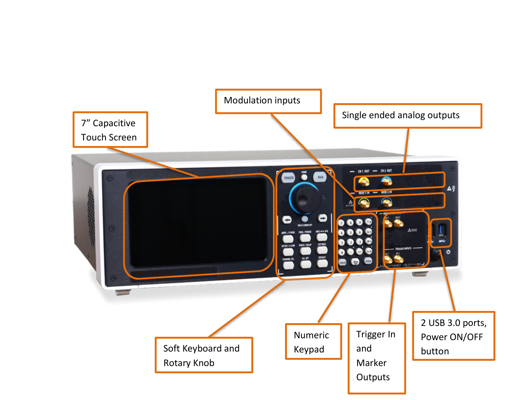
The touch screen functionalities and features are described in the TrueArb Application section.
- 7 in (178 mm) capacitive touch screen
- Soft keyboard and rotary knob
- Single-ended analog outputs
- Trigger In and marker outputs
- Numeric keypad
- Two USB 3.0 ports and power on/off button
- Modulation inputs
Analog Outputs
The Model 686 series instrument has 2 or 4 analog output channels. Each one is single-ended or differential, depending on the model, and the connector type is SMA.
Marker Outputs
Each Marker Out is a digital output channel that can generate programmable digital patterns synchronous to the analog outputs. Its impedance is 50 Ohm and the output voltage amplitude ranges from -0.5 V to 1.65 V into a 50 Ohm load. To set the Marker Out parameters, refer to the Marker Settings. The connector type is a standard SMA.
| Marker Out Specification | Value |
|---|---|
| Connector | 1 SMA per output channel on the front panel |
| Output impedance | 50 Ω |
| Output level (into 50 Ω) | -0.5 V to 1.65 V |
| Model | Marker Out Connectors |
|---|---|
| 686-2C | 2 SMA on the front panel |
| 686-4C | 4 SMA on the front panel |
Trigger Inputs
The Trigger In 1/2/3/4 connectors on the front panel allow generation to be controlled by an external signal source. They have a selectable impedance of 1 kOhm or 50 Ohm. To set the trigger parameters or the Run Mode, refer to the “Trigger” section. In Continuous mode, the trigger inputs have no effect.
| Trigger In Specification | Value |
|---|---|
| Connector | SMA on the front panel |
| Number of connectors | 2 in 2-channel models or 4 in 4-channel models |
| Input impedance | 1 kΩ or 50 Ω selectable |
| Slope/Polarity | Positive or negative selectable |
Soft Keyboard and Rotary Knob
Most of the buttons you use with the TrueArb application are virtual ones on the touchscreen, but a few physical buttons control basic functions such as the setting of amplitude, offset, and frequency. A physical numeric keypad is available on the front panel and can be used instead of the virtual numeric pad.
A central knob is available for fine-tuning and adjustments during on-the-fly setup operations. The rotary knob changes the value in a continuous, analog fashion. The push-button rotary knob lets you change the value increment between Coarse and Fine adjustment.
The right-arrow key moves the selected digit to the right and the left-arrow key moves the selected digit to the left. You can press the rotary knob and rotate it to the right or left to change the delta increment.
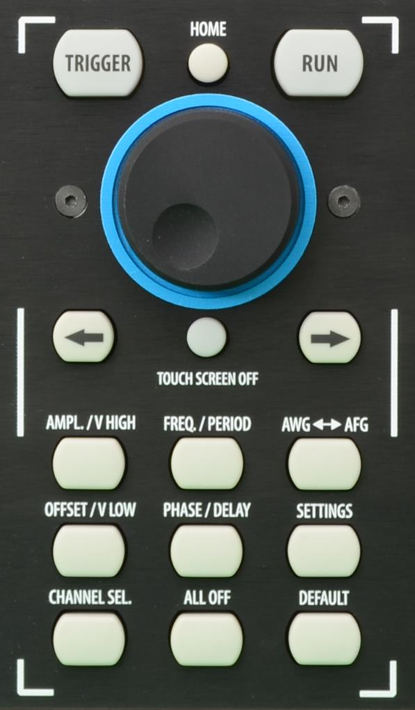
| Button | Description |
|---|---|
| HOME | If you are on a sub-menu page, use this button to return to the main page. |
| TRIGGER | Use this button to send an internal trigger to the instrument. |
| RUN | Use this button to start and stop the signal generation. If the button is on and green, the instrument is running; if it is off, the instrument is stopped. Pushing the button changes the instrument state. |
| LEFT ARROW | Once the virtual numeric keypad is opened, use this button to move the digit selection cursor to the left. |
| RIGHT ARROW | Once the virtual numeric keypad is opened, use this button to move the digit selection cursor to the right. |
| TOUCH SCREEN OFF | Use this button to disable the touch screen. |
| AMPL./V HIGH | Use this button to set the high voltage level or the amplitude of the waveform. |
| FREQ/PERIOD | Use this button to set the period or the frequency of the waveform. |
| AWG ↔ AFG | Use this button to switch between AFG mode and AWG operating mode. |
| OFFSET/V LOW | Use this button to set the low voltage level or the offset of the waveform. |
| PHASE/DELAY | N.A. |
| SETTINGS | Use this button to open the Settings page. |
| CHANNEL SEL. | Use this button to change the output selection in the user interface. |
| ALL OFF | Use this button to turn off all the outputs. |
| DEFAULT | Use this button to restore the default settings. |
Numeric Keypad
The physical numeric keypad lets you set the parameter value and its measure unit. Once a parameter to be edited is selected by using the touch panel or the soft keyboard, each number pressed on the keypad is shown on the display. The Bksp key is provided for deleting erroneous key presses. The [+/-] key toggles the sign of the number being entered and may be pressed after terminating the entry. After the sign and the numeric portion of the desired value have been entered, pressing the multiplier button applies the parameter. The Enter button closes the virtual keyboard and applies the entered value.
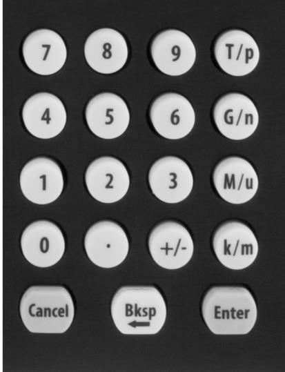
When you select a parameter in the user interface, if you press a Unit Measure Range button it automatically updates the available range allowed for that parameter.
| Unit Measure Range Button | Unit Measure Range |
|---|---|
| T/p | Tera / pico |
| G/n | Giga / nano |
| M/u | Mega / micro |
| k/m | kilo / milli |
For example, if you select the Frequency parameter and press k/m, the unit measure range is kHz; if you press M/u, it is MHz; if you press G/n, it is GHz; if you press T/p, nothing happens because that range is not available for the selected parameter. If both units of a Unit Measure Range button are available for the selected parameter (for example, Mega and Micro), pressing the range button M/u switches the range accordingly between Mega and Micro.
Rear Panel 686-2C
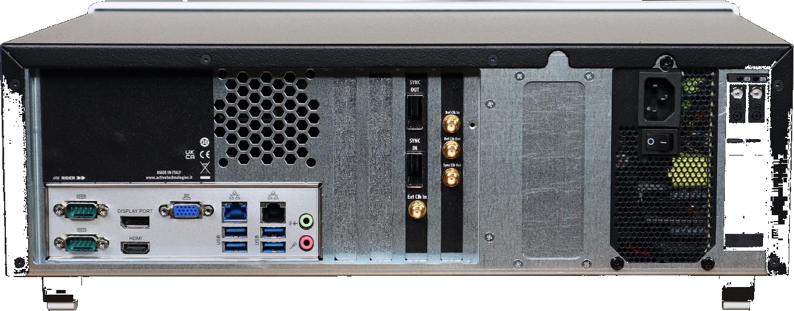
- 4 USB 3.0 ports
- 2 Gigabit LAN ports
- 2 Audio IN/OUT
- COM Port (COM1) RS232/422/485
- COM Port (COM2) RS232/422/485
- 2 slots for removable SSD
- 1 Ref Clk In
- 1 Sync OUT connector
- 1 Sync IN connector
- DisplayPort (DP1)
- HDMI Port (HDMI1)
- D-Sub Port (VGA1)
- 1 10 MHz (100 MHz optional) Ref Clock Output
- 1 External Clock Input
- 1 Sync Clock Output
Rear Panel 686-4C
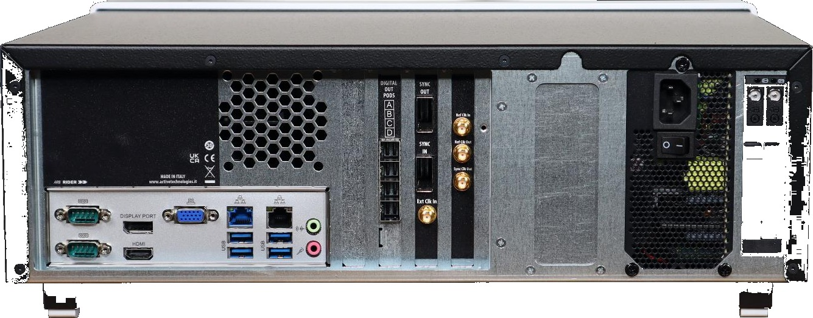
- 4 USB 3.0 ports
- 2 Gigabit LAN ports
- 2 Audio IN/OUT
- COM Port (COM1) RS232/422/485
- COM Port (COM2) RS232/422/485
- 2 slots for removable SSD
- 1 Ref Clk In
- 1 Sync OUT connector
- 1 Sync IN connector
- DisplayPort (DP1)
- HDMI Port (HDMI1)
- D-Sub Port (VGA1)
- 1 10 MHz (100 MHz optional) Ref Clock Output
- 1 External Clock Input
- 1 Sync Clock Output
- Digital Output mini-SAS HD connector: Pod A, Pod B, Pod C, and Pod D
External Modulation Input Connector
Reference Clock Input Connector
The Model 686 series can use an external clock source to generate the sampling clock frequency. This feature allows the generator to be synchronized with an external clock. The connector type is SMA.
Reference Clock Output Connector
This connector outputs the internal 10 MHz (100 MHz optional) reference clock used to synthesize the DAC sampling clock. If the clock source is internal, it produces a signal at 10 MHz (100 MHz optional). If the source is external, it is disabled. The connector type is SMA.
Digital Output Connector
The Model 686-4C series has optional 8/16/24/32-bit digital outputs, synchronized with the corresponding analog channels, that can be programmed to generate custom digital patterns. The 24/32-bit digital outputs are available only on 686-4C models and with the ‘Half Rate’ operating mode. The digital output pins have a native CML standard and the maximum update rate is 10 Gbps.
The output connector, located on the rear of the instrument, is a customized version of the Mini-SAS HD standard connector. An optional adapter cable that converts from Mini-SAS HD to SMA is available. An optional digital probe adapter is also available to convert from Mini-SAS HD LVDS to LVTTL with programmable voltage levels.
The mixed-signal generation is a powerful solution for digital designs and validation, system synchronization, and DAC/ADC tests.

External Clock Input Connector
This connector input gives the user the ability to feed a sampling clock directly to the system. This clock bypasses the internal generator clock system of the instrument. The connector type is SMA.
Sync Clock Output Connector
This connector outputs a divided clock generated from the sampling clock of the instrument. The user can choose the output frequency from a list of all the possible values. The connector type is SMA.
Sync In / Sync Out Connectors
The purpose of these connectors is to connect and synchronize multiple instruments together. Up to 4 instruments can be synchronized.
Pattern Force Jump In Connector (with 686-FSS Option only)
The 15-pin D-Sub connector input gives the user the ability to feed the Force Jump pattern through an external signal consisting of 8 pattern bits plus one for Strobe. This pattern is necessary for the Fast Sequence Switch feature (see the dedicated “Trigger” section in Device Settings).

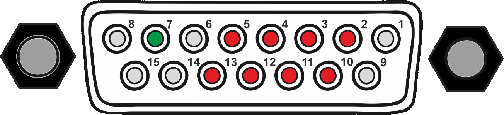
| 15-pin D-Sub | Pattern Force Jump Feature |
|---|---|
| 2 | Pattern Force Jump bit 0 |
| 3 | Pattern Force Jump bit 1 |
| 4 | Pattern Force Jump bit 2 |
| 5 | Pattern Force Jump bit 3 |
| 10 | Pattern Force Jump bit 4 |
| 11 | Pattern Force Jump bit 5 |
| 12 | Pattern Force Jump bit 6 |
| 13 | Pattern Force Jump bit 7 |
| 7 | STROBE |
| 1, 6, 8, 9, 14, 15 | GND |
Quick Start Guide
If you are a beginner, you can follow the steps below to generate your first waveform.
- Connect the power cord and push the front-panel On/Off switch to turn on the instrument.
- Press the AWG/AFG button to switch from the Simple AFG to the TrueArb application. Wait until the TrueArb application is running and ready to accept new commands.
- Connect Output 1 of the instrument to the oscilloscope input with a cable. Select a 50 Ohm load on the oscilloscope input.
- Touch the Settings button on the TrueArb UI to open the instrument settings window.
- Select Dev. Settings, open the General page, and select Continuous as the Run Mode.
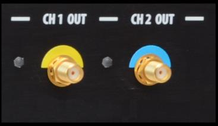
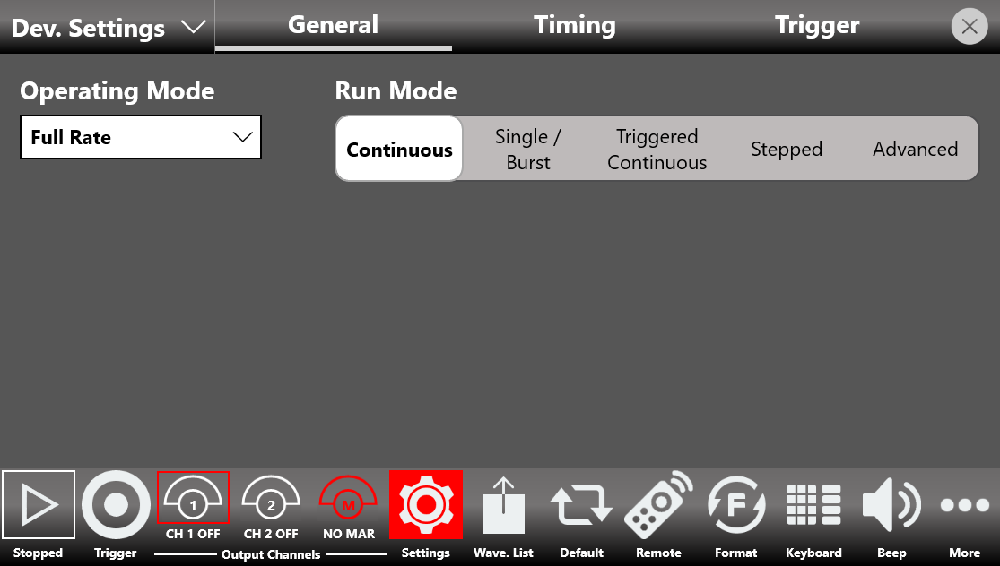
- Touch the Settings button again to close the instrument settings window.
- By default, all channels are disabled. This means that the outputs are mechanically disconnected from the load and the digital outputs are in the OFF state.
- The waveform sequencer at the top of the application starts by default with a single entry holding a sine waveform. Touch the Add Entry button to insert a new entry into the sequencer.
- Touch the dropdown waveform list of the second entry and change it from DC to Ramp.

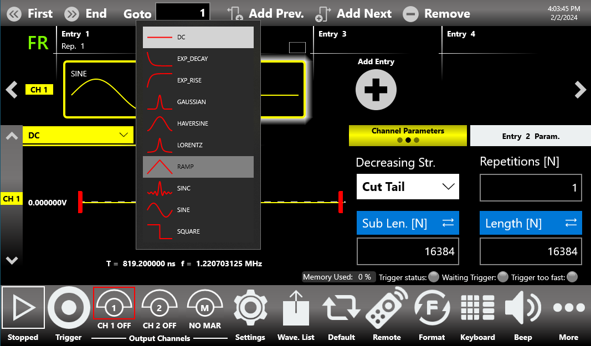
- Enable the output channels: press and hold the CH1 button at the bottom of the application so that it is no longer grayed out.
- Touch Entry 1 and set Repetition [N] = 2, then touch Entry 2 and set Repetition [N] = 3.
- You can change the Amplitude / Voltage High and Offset / Voltage Low for each entry.
- Press the RUN/STOP button and check the generated waveforms on the oscilloscope. Entry 1 should be repeated two times while Entry 2 should be repeated three times.
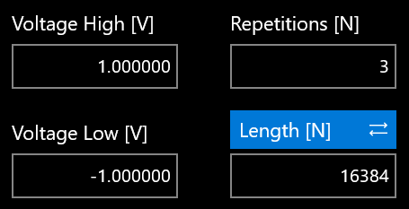
TrueArb Application
The Model 686 series instrument includes a 7 inch (178 mm) capacitive touch screen and an easy touch user interface based on a Microsoft Windows 10 platform. You can control instrument operations using one or all of the following input methods:
- Touch screen and front-panel soft key controls.
- Keyboard and mouse.
TrueArb Touch UI
The Simple TrueArb UI is designed for touch, to drive simplicity in operating an Arbitrary Waveform Generator. It uses the modern technique found on tablets and smart phones, available on capacitive touch-screen displays.
All the important instrument controls and settings are always one touch away:
- Swipe down to change the output channel.
- Swipe left or right to navigate through the sequencer entries.
- Pinch in or out to zoom the waveform graph.
- Use the touch-friendly virtual numeric keyboard to modify parameters and enter new values on the fly.
It is sometimes necessary to create long waveform files to fully implement a DUT test. Where portions of a waveform must be repeated, the waveform sequencer can save a great deal of memory-intensive waveform programming. The Sequencer lets you define the set of waveforms that will be generated, their sequence, the number of repetitions for each waveform, and the generation conditions.
The sequencer is mainly used for two purposes:
- Output a waveform longer than the hardware memory.
- Change the output waveform quickly on a specific trigger condition.
A sequence is made of multiple entries. Each entry contains analog and digital waveforms, properly formatted.
User Interface Description
The Simple TrueArb software environment provides easy access to all instrument functionalities and parameters. The TrueArb user interface consists of four main elements:
- Sequencer Area. The sequencer contains a list of entries that you can add or remove to create your own waveform scenario. Each entry can be repeated or changed in length. The sequencer is common to all channels.
- Sequencer Toolbar. This toolbar contains the elements used to navigate, add, and remove the sequencer items, as described below.
- Waveform Area. It contains the Waveform Graph and the waveform parameters related to the selected entry.
- Command Bar. This toolbar contains elements to control the instrument operations, modify the instrument settings, and manipulate waveforms.
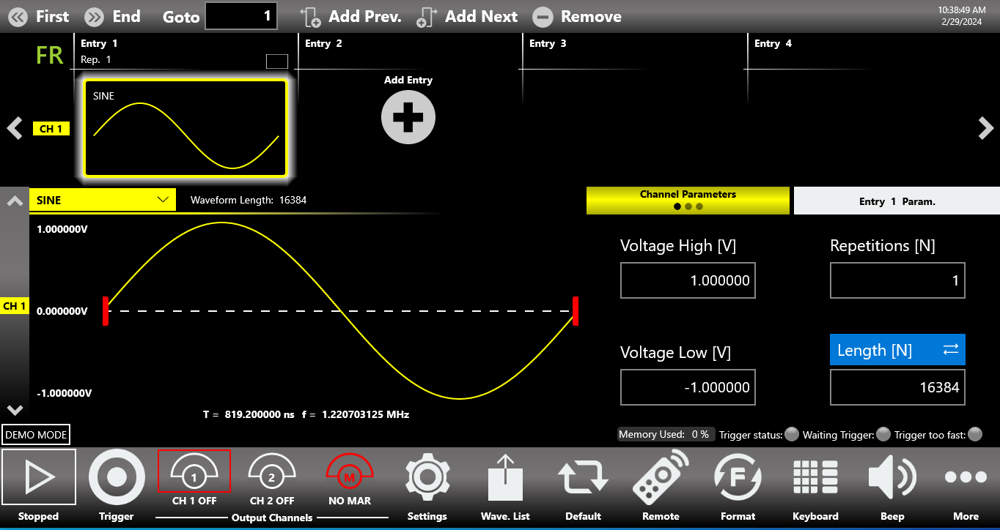
The display is a 7 inch (178 mm) capacitive touch screen, and it is possible to use mobile-phone style gestures:
- Swipe up or down on the Waveform Area to switch between the Output Channel 1 and Output Channel 2 pages.
- Swipe left or right on the Sequencer Area to navigate through the sequencer entries.
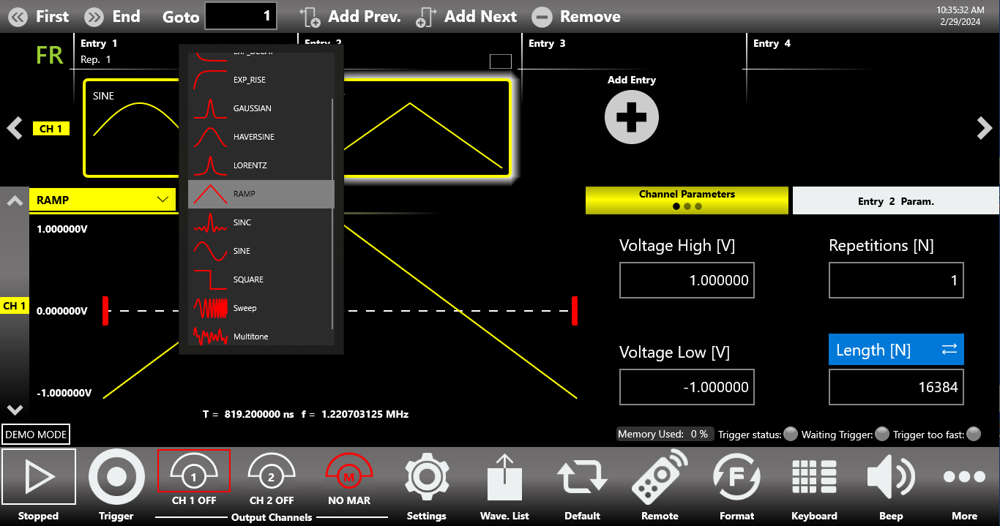
Sequencer Area
The sequencer starts by default with a single entry holding a sine waveform on CH1, while on the other channels a DC waveform appears (or a Take Last waveform on an auxiliary channel). Touching the Add Entry button inserts a new entry into the sequencer. By default, a DC level (or Take Last on an auxiliary channel) waveform is placed in a new entry.
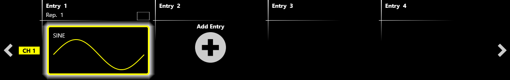
You can modify the waveform of a sequencer entry by touching the waveform graph or the name of the waveform. A dropdown list opens, showing all the waveforms available in the Waveform List (predefined, parametric, or imported).
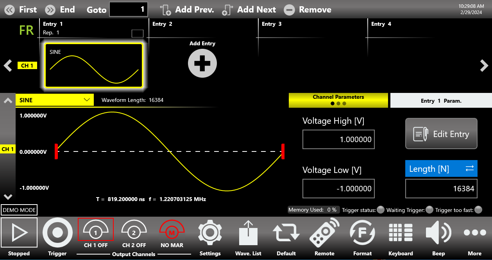
Multiple Channels View
By touching the selected sequencer item, you can display more than one channel at the same time. This gives an overall view of all the output channels and of the sequencer entries. Use a swipe up or down gesture to scroll through the channels. Touching a sequencer item again collapses the multiple-channel view back to the single-channel view.
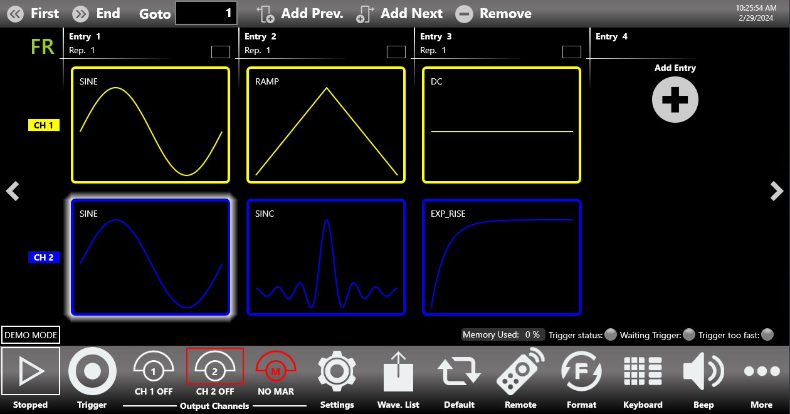
Sequencer Area Items
Each sequencer entry contains several pieces of information:
- The index of the entry (Entry N). Each entry is numbered from 1 up to 16384.
- The name of the waveform assigned to the selected output channel in that entry. Each output channel can have a different waveform assigned to the same sequencer entry.
- The number of repetitions. Each entry can be repeated from 1 up to 4,294,967,295 times, or an infinite number of times (INF button).
Touching the selection button in the entry opens a second toolbar that lets you:
- Select all the entries.
- Deselect all the entries.
- Remove the selected entry.
- Close the toolbar.
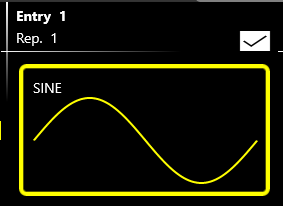
Sequencer Toolbar
The sequencer toolbar contains several buttons to navigate and control the sequencer:
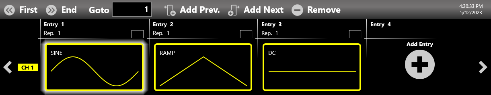
| Sequencer Toolbar | Description |
|---|---|
| First Entry Button | Press this button to go to the first entry. |
| Last Entry Button | Press this button to go to the last entry. |
| Goto Entry Button | Use this button to go to Entry N. |
| Add Prev. Button | This button adds a sequencer entry before the selected entry. |
| Add Next Button | This button adds a sequencer entry after the selected entry. |
| Remove Button | This button removes the selected entry. |
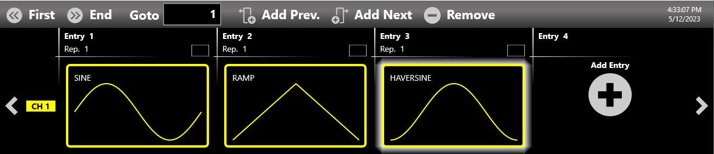
Sequencer Warnings
Warnings are shown in the sequencer toolbar when one or more channel waveforms have been assigned to an entry with a different length. The upper warning gives a general notice of this condition. Additional warnings are displayed inside the entries where the warning condition is detected.
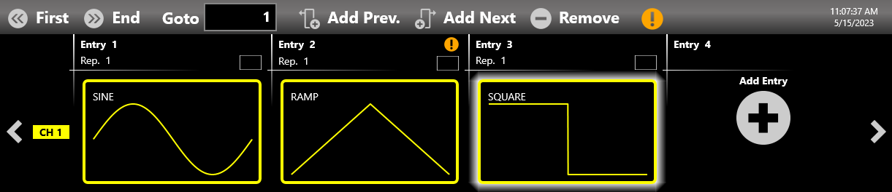
Waveform Area
This area is divided into two main sections: the Waveform Graph area, which contains a graphical representation of the channel waveform, and the Waveform Parameters area. The Waveform Graph describes the waveform assigned to the current channel and sequencer entry:
- The shape of the waveform.
- The waveform duration and frequency.
- The waveform amplitude.
- The waveform length, in number of samples, as it was originally defined in the Waveform List.
The Waveform Parameters area is divided in two parts. The left part contains the Channel Parameters, which can be specified independently for each sequencer entry and for each output channel. The right part contains Repetitions [N] and Entry Length [N]. These two parameters are specific to the selected sequencer entry and are common to all channels in that same entry.
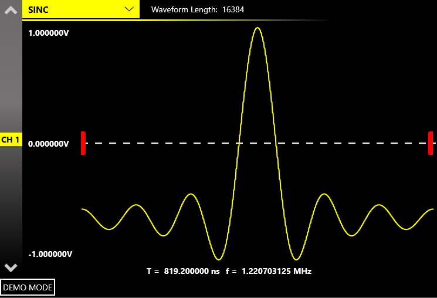
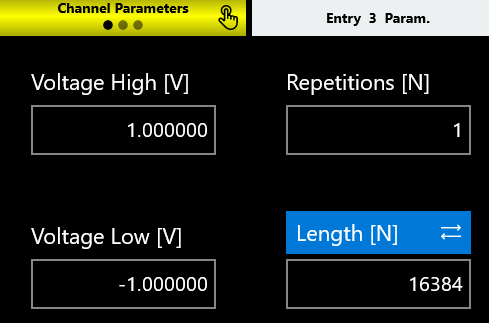
Amplitude [Vpp]
Defines the peak-to-peak voltage of the waveform, expressed in volts. It is the difference between the maximum value and the minimum value.
Offset [V]
Defined as (Vmax + Vmin) / 2, expressed in volts, where Vmax is the maximum level of the waveform and Vmin is the minimum level of the waveform.
Voltage High [V]
Defines the maximum level of the waveform, expressed in volts.
Voltage Low [V]
Defines the minimum level of the waveform, expressed in volts.
Pressing the Change Format button switches between the Amplitude / Offset and the Voltage High / Voltage Low parameter pairs.
Length
It is necessary to distinguish three different definitions of length:
- Waveform Length. The original total number of samples that make up the waveform, as defined in the Waveform List. This value is displayed next to the waveform name in the Waveform Area.
- Entry Length [N]. The number of samples that will be generated for the selected sequencer entry. It is common to all channels of the instrument. Its default value is defined by the Default Entry Length [N] parameter (see Sequencer Settings).
- Sub Len. [N]. The number of samples that is affected by the Resampling Strategy for the selected channel, once the Entry Length has been defined.
The entry length granularity depends on the model and on the Operating Mode:
| Model | Operating Mode | Minimum Entry Length | Entry Length Granularity |
|---|---|---|---|
| 686-2C, 686-4C | Full Rate or Half Rate | 288 samples | 288 if the entry length is ≥ 288 and ≤ 8928 samples; 1 if the entry length is > 8928 samples |
If Sub Length is lower than the Waveform Length, the Decreasing Strategy parameter is displayed in the second tab of the Channel Parameters. You can then choose how to adapt the waveform for the single channel within the sample interval defined by the Sub Length. The available techniques are:
- Decimation. Reduces the number of samples while maintaining the waveform shape. For example, in channel 1 a Sine predefined waveform of 16384 samples is used for a generic entry. The entry length is left at its default value (16384) while the Sub Length is set to 12000 samples. With Decimation set as the Decreasing Strategy, a complete period of the waveform is displayed to fit the Sub Length interval. The period of the sinusoid is now made up of 12000 points obtained by decimating the original waveform, while the value of the last sample is held constant for the remaining 4384 samples.
- Cut tail. Cuts the tail of the waveform, reducing its size.
- Cut head. Cuts the head of the waveform, reducing its size.

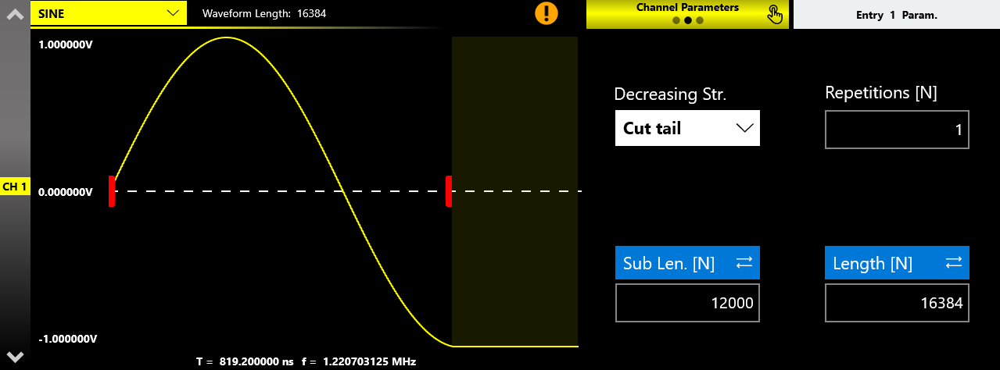
If Sub Length is greater than the Waveform Length (in which case the Entry Length must also be greater), the Increasing Strategy parameter is displayed. The available techniques are:
- Interpolation. Performs a linear interpolation between the waveform samples, extending the waveform envelope across the range [0 to Sub Len.]. For example, consider a parametric Sweep waveform of 16384 samples inserted into an entry of channel 1, with the Entry Length set to 30000 and the Sub Length set to 20000 samples. With Interpolation set as the Increasing Strategy, the algorithm stretches the waveform to the value of the Sub Length, while the value of the last sample is held constant for the remaining 10000 samples.
- Return Zero. Fills the tail of the waveform with zeros until the Entry Length value is reached. In the example, the zero value is present in the last 13616 samples (30000 Entry Len. minus 16384 Waveform Len.).
- Hold Last. Holds the last value of the waveform until the Entry Length value is reached.
- Samples Duplication. Repeats the waveform samples until the Sub Length value is reached, while the value of the last sample is held constant for the remaining samples.
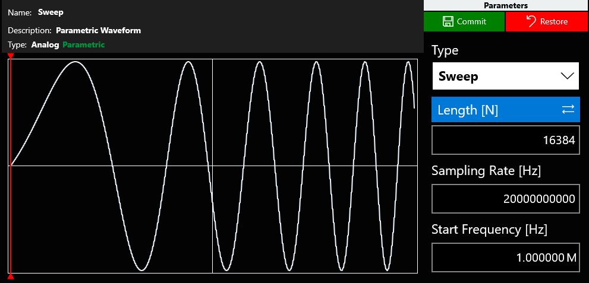


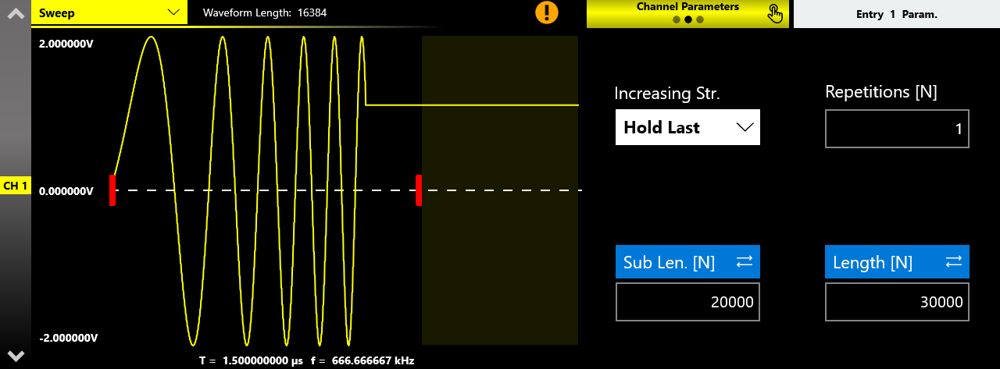
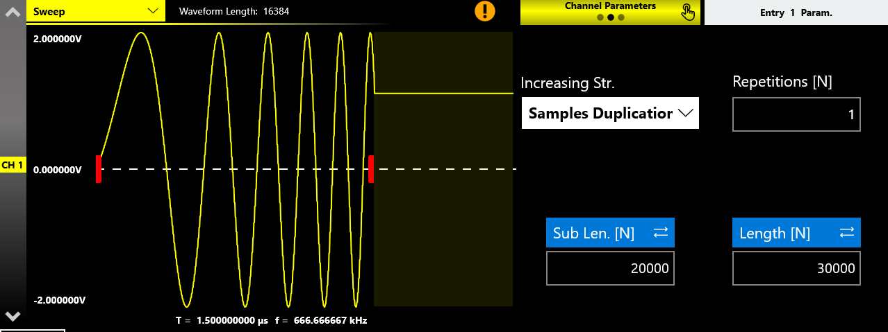
Delay
Specifies the delay, from sample 0 of the current entry, at which the Sub Length interval begins. It can be expressed in time (Delay [s]) or in number of samples (Delay [N]). It can be set only when the Entry Length is greater than the Waveform Length and, at the same time, the Sub Length is lower than the Entry Length.
As an example, consider a Sine waveform of 16384 samples, a Sub Length of the same value, and an Entry Length of 30000 samples, with the Delay set to 300 ns.

Repetitions
Specifies the number of repetitions of the waveform for the selected sequencer entry. The meaning of this parameter can change according to the Run Mode setting (in Advanced Mode it is replaced by the Edit Entry button).
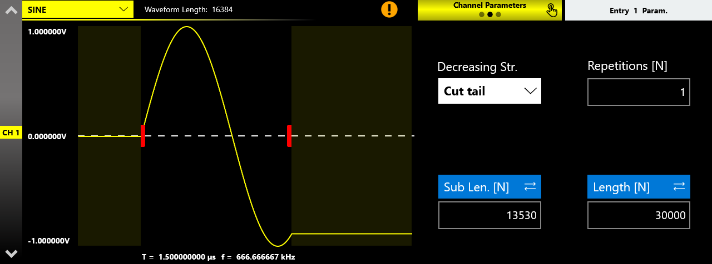
The virtual keypad items are as follows:
- Parameter Name and Value. This area displays the parameter name, value, and unit of measure.
- Numeric Keypad. Contains the keys to edit the number displayed in area 1. The [+/-] key toggles the sign of the number being entered and can be pressed at the end of editing. Touch the MIN and MAX buttons to set the minimum and maximum allowed values for the selected parameter. Use the DEF button to set the default value.
- Arrows. The left and right arrows move the cursor or select the digit position, like the arrows on the front panel. The up and down arrows modify the value.
- Measurement Unit. After typing the numeric value, these buttons apply a different multiplier of the measurement unit. When a measurement unit is pressed, the value is applied on the fly.
- Coarse / Fine. The Coarse/Fine button changes the granularity of the increment. You can increment or decrement the selected parameter using the up and down arrow buttons or the rotary knob on the front panel. When Fine is selected, the increment is 1 unit at the current cursor position. When Coarse is pressed, the Delta increment is displayed in the parameter area and the value changes in steps of the selected increment. You can keep the knob pressed and rotate it left or right to change the Delta Coarse increment.
- Control Buttons. The Close button closes the virtual keypad without applying any changes to the instrument, while the Enter button confirms the changes and applies them. The Bksp (backspace) button deletes erroneous key presses, and the Delete button deletes all digits in the text box.
- Horizontal Scrollbar. Lets you change the selected value quickly. The position specifies the value between the allowed minimum and maximum. The increment or decrement value entered with the rotary knob or the scrollbar is applied to the instrument on the fly.
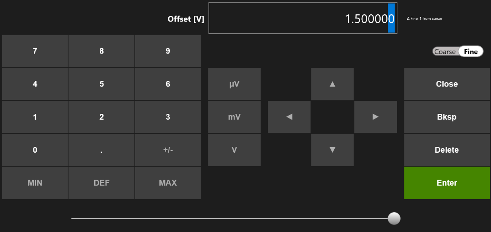
Waveform Warnings
A warning is shown in the waveform graph when the channel waveform length differs from the Entry Length. The upper warning is a general notice of this condition. Additional warnings are displayed inside the entries where the condition is detected.
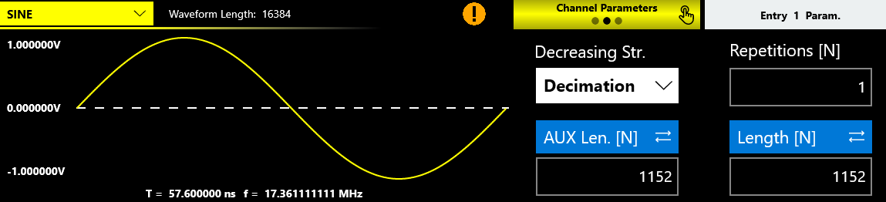
Status Toolbar
The Status Toolbar reports the memory usage of the instrument and the trigger-in signal behavior.
Memory Used indicator. Shows the percentage of storage memory used to store all waveforms assigned in the sequencer.
Because of this memory limitation in Full Rate Operating Mode, primary channels can be distinguished from auxiliary channels as shown in the following table:
| Model | Channel definition |
|---|---|
| 686-2C | CH1: primary channel. CH2: auxiliary channel. |
| 686-4C | CH1: primary channel. CH2: primary channel. CH3: auxiliary channel. CH4: auxiliary channel. |
The distinction between primary and auxiliary channels does not exist in Half Rate Operating Mode. In that case, the maximum memory that a channel can use is the same for all channels.
Aux indicator. In Full Rate Operating Mode, shows the percentage of memory used by the auxiliary channels. It can be considered as the sum of the Sub Length parameter of the specific auxiliary channel across all sequencer entries.
As an example, consider the following sequencer, where the instrument has 2 channels in Full Rate Operating Mode. For Channel 1 (the primary channel), the length of Entry 1 is 1 Gsample, as is the length of Entry 2. The memory usage indicator reports 21 percent, because about 7.6 Gsamples of storage memory remain available to add further entries. The Sub Length parameter can be kept equal to the Length value for both entries, since CH1 has up to 9.6 Gsamples of available memory.

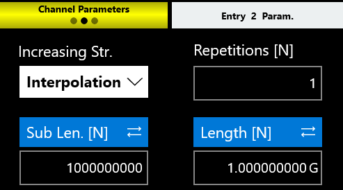
For Channel 2 (the auxiliary channel), the number of samples of Entry 1, defined by the Sub Length parameter, is set to the maximum value (about 1 Msample). Since the Aux indicator already reaches its maximum value with Entry 1, it is no longer possible to insert a new waveform in Entry 2. During the generation of Entry 2, the output of Channel 2 reproduces the last sample of the previous entry.
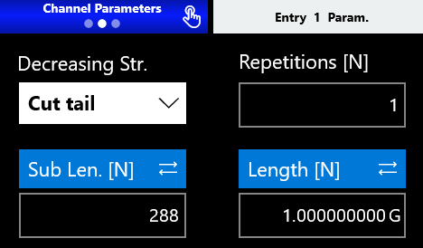
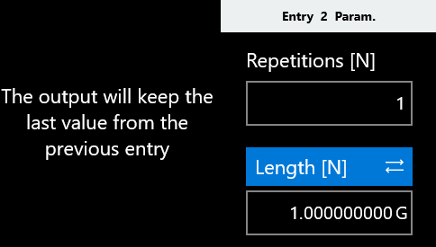
Trigger Information indicator. Provides information about the trigger signal condition:
- The Trigger status LED notifies you that the instrument has received a trigger signal.
- The Waiting Trigger LED notifies you that the instrument is waiting for a trigger signal.
- The Trigger too fast LED notifies you that a trigger event has been detected, but the trigger frequency is too high and the instrument cannot be rearmed before the previous trigger event completes. In this situation, some trigger events may be lost.
Command Toolbar & Settings
This section describes the Command Toolbar and the full Settings reference for the Model 686 TrueArb Arbitrary Waveform Generator: Device Settings (general, timing, and trigger), run modes, the Advanced Run Mode and Entry Editor Table, Channel Settings for analog and digital outputs, Marker Settings, Sequencer Settings, and the remaining user interface and log options.
Command Toolbar
The Command Toolbar contains several touch buttons that control the instrument. Its layout changes depending on the model. On the 4-channel models, some buttons are located in the More menu instead of the Command Toolbar. A detailed description of each button follows.
Command Bar Buttons

| Button | Description |
|---|---|
| RUN/STOP | Sets the instrument into the Running state (or Ready to receive a trigger) or into the Stopped state. When the button is green the instrument is running. When it is grey the instrument is stopped. Pressing the button changes the instrument state. |
| Trigger | Sends an internal software trigger to the instrument. Independently from the configured trigger setting, this trigger is always received. |
| Output Channels (CH1, CH2, ... CH N, DIG) | Press CH1, CH2, ... CH N, or DIG to change the Output Channel page. Press and hold a Channel button for a programmable time (the ON/OFF waiting time) to turn that channel OFF or ON. The ON/OFF waiting time can be set in the UI Settings. When a channel is OFF, it is mechanically disconnected from the output. For more information, refer to the relevant paragraph. |
| MAR (Marker) | Stands for Marker. When this button is white, a custom pattern has been selected as the Marker Mode; otherwise the button is red. Pressing this button displays the settings of the custom pattern. Press and hold the MARKER button for a programmable time (the ON/OFF waiting time) to turn it OFF or ON. When the marker is turned ON, this button appears pink. The ON/OFF waiting time can be set in the UI Settings. For more information, refer to the relevant paragraph. |
| DIG (Digital) | Stands for Digital. Connects or disconnects the digital output signals. When the digital signals are disabled, they hold the logic zero value at the output and this button appears red. |
| Settings | Opens the Output Channel Settings, Device Settings, Marker Settings, Sequencer Settings, and UI Settings. For more information, refer to the relevant paragraph. |
| Wave. List | Opens a page where you can create and manage a waveform or import and export a waveform from a file. For more information, refer to the relevant section. |
| Default | Restores the default value of all parameters of the instrument. |
| Numeric Keyboard | Enables or disables the virtual numeric keyboard. |
| Remote Control | Opens the SCPI server page. On that page you can enable or disable the SCPI server and view the sequence of commands sent to the instrument and its responses. |
| Beep | Enables or disables the beep audio signal that sounds when the user touches a button. |
| More | Gives access to other instrument features as described in the More Button menu below. |
More Button Menu Items

| Item | Description |
|---|---|
| Exit | Closes the application. |
| Full/Float | Maximizes or reduces the application screen, allowing access to Windows OS functionality. |
| Load From | Loads a configuration file. For more information, refer to the relevant paragraph. |
| Save As | Saves the current configuration into an existing one or creates a new one. For more information, refer to the relevant paragraph. |
| Export | Exports the current configuration. For more information, refer to the relevant paragraph. |
| Change Format | Changes the waveform vertical parameters from Voltage High (V) and Voltage Low (V) to Amplitude (Vpp) and Offset (V). |
| Change Application | Switches from TrueArb to AFG or to the Serial Pattern Generator application. |
| About | Shows the credits, the software and firmware release numbers, and the instrument serial number. |
| Help | Opens the User Manual. |
| Calibration | Enters the Calibration and Diagnostic page. For more information, refer to the relevant paragraph. |
| Waveform Editor | Opens the Waveform Editor software. For more information, refer to the Waveform Editor User Manual. |
| License | Enters the License setup page. For more information, refer to the relevant section. |
Settings
Touch the Settings button to open the page for the Device Settings, Channel Settings, Marker Settings, Sequencer Settings, and UI Settings.
Device Settings
The device settings are common to the whole instrument. They are grouped into General settings, Timing settings, and Trigger settings.
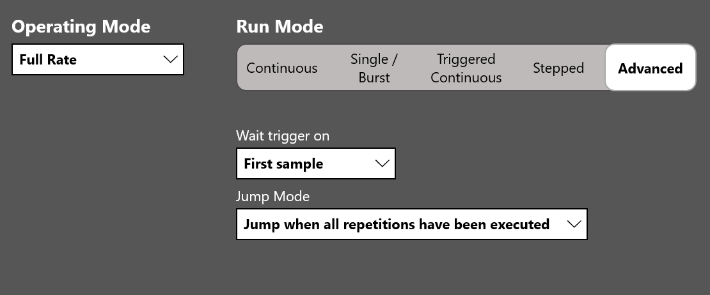
General: Operating Mode
This parameter selects the main operating mode for all channels of the instrument, between Half Rate and Full Rate mode.
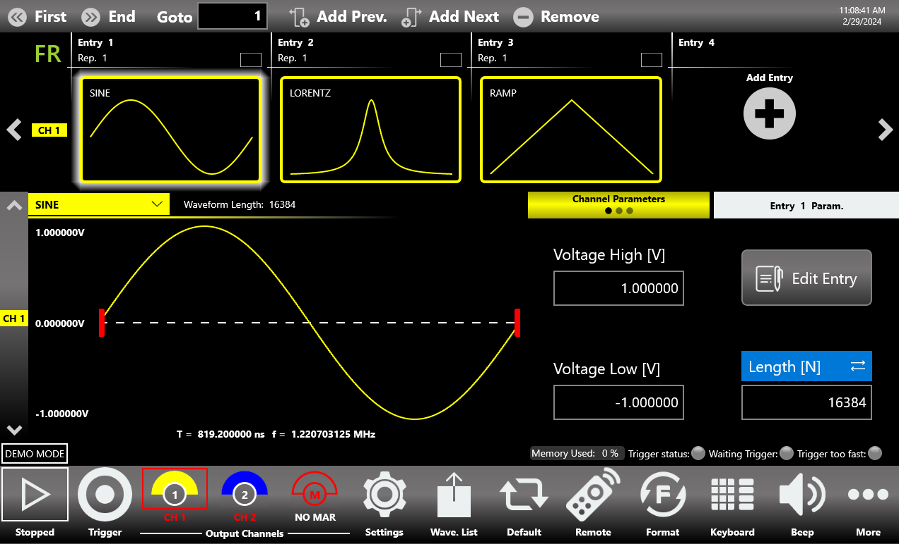
In Full Rate mode you can use the maximum sampling rate, but the available storage memory on some channels is reduced. In Half Rate mode the available memory is the same on every channel, but the sampling rate is reduced.
The main characteristics of these modes are summarized in the following tables.
Full Rate
| Model | Max. Sampling Clock | Max. Storage Memory per Channel |
|---|---|---|
| 686-2C | 20 GHz | CH1: full memory availability (about 9.6 Gsamples). CH2: limited memory availability (about 1.17 Msamples). |
Half Rate
| Model | Max. Sampling Clock | Max. Storage Memory per Channel |
|---|---|---|
| 686-2C, 686-4C | 10 GHz | CH1: full memory availability (about 4.8 Gsamples). CH2: full memory availability (about 4.8 Gsamples). |
| 686-4C | 10 GHz | CH1, CH2, CH3, and CH4: full memory availability (about 4.8 Gsamples each). |
| 686-4C | 20 GHz | CH1: full memory availability (about 9.6 Gsamples). CH2: full memory availability (about 9.6 Gsamples). CH3: limited memory availability (about 589 ksamples). CH4: limited memory availability (about 589 ksamples). |
General: Run Mode
The Run Mode defines the sequencer execution flow.
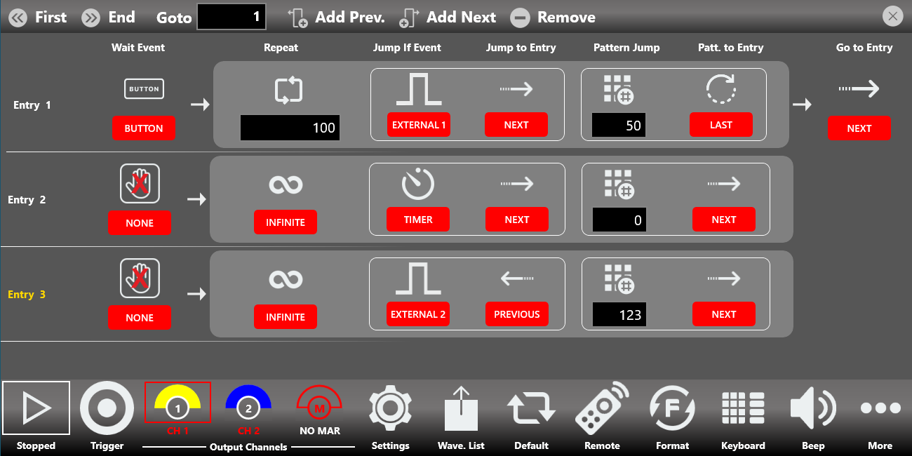
- Continuous: when the RUN/STOP button is pressed, each waveform loops as set in the entry repetition parameter, and the entire sequence repeats circularly until the user presses the RUN/STOP button.
- Single/Burst: when the RUN/STOP button is pressed, the instrument waits for a trigger event. When the trigger event occurs, each waveform loops as set in the entry repetition parameter, and the entire sequence repeats circularly as many times as set in the Burst Count [N] parameter. Setting Burst Count [N] = 1 places the instrument in Single mode, and the sequence runs only once.
- Triggered Continuous: when the RUN/STOP button is pressed, the instrument waits for a trigger event. When the trigger event occurs, each waveform loops as set in the entry repetition parameter, and the entire sequence repeats circularly until the user presses the RUN/STOP button.
- Stepped: after the RUN/STOP button is pressed, each entry waits for a trigger event before its execution. The waveform of the entry loops as set in the entry repetition parameter. After the generation of an entry completes, the last sample of the current entry or the first sample of the next entry is held until the next trigger is received. At the end of the entire sequence, execution restarts from the first entry.
- Advanced: in this mode the execution of the sequence can be changed using conditional and unconditional jumps (the JUMP TO and GO TO features) and dynamic jumps (the PATTERN JUMP and FORCE JUMP features). Refer to the Advanced Run Mode section for detailed information.
General: Run Mode Options
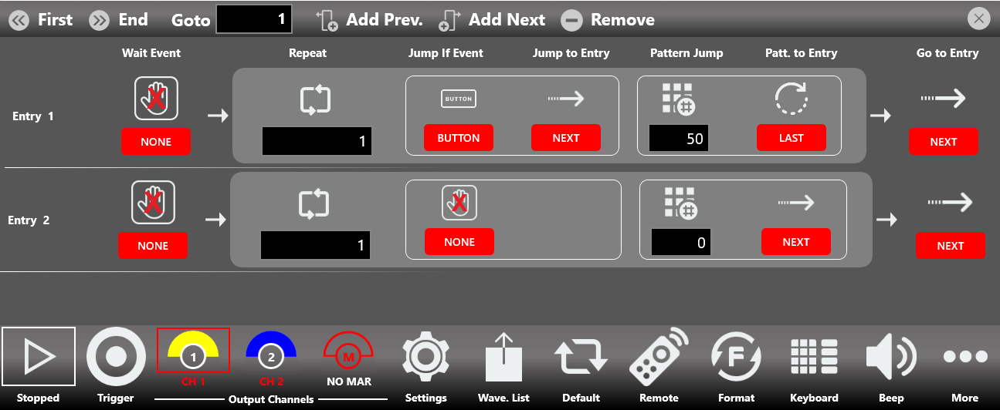
- Wait Trigger On: defines the behavior of the output during the wait trigger condition in the Triggered Run Mode. If First Sample is selected, the first waveform sample of the next entry is held until the next trigger is received. If Last Sample is selected, the last waveform sample of the current entry is held until the next trigger is received.
- Jump Mode: available in Advanced Run Mode only. It defines the behavior of the output when a Jump event happens (a JUMP TO, PATTERN JUMP, or FORCE JUMP event). If Jump as soon as possible is selected, the sequencer jumps to the selected entry as soon as possible, without waiting for the completion of the repetitions of the current waveform execution. It always jumps at the end of a period of the current waveform. If Jump when all repetitions have been executed is selected, the sequencer jumps to the selected entry after the completion of the current waveform repetitions. If the repetitions are infinite, this option is not considered and the instrument performs the jump as soon as possible.
Advanced Run Mode
The Advanced Run Mode changes the execution of the sequence using loops, conditional and unconditional jumps (the JUMP TO and GO TO features), and dynamic jumps (the PATTERN JUMP and FORCE JUMP features). It can be used to create long and complex waveform scenarios.
Follow these steps to start working with the Advanced Mode:

- In the Device Settings, General page, select Advanced as the Run Mode.
- The sequencer page changes its standard layout, and the Edit Entry button appears in the Entry Parameters area.
- Press the Edit Entry button on the Sequencer Area to open the Entry Editor Table.
Entry Editor Table
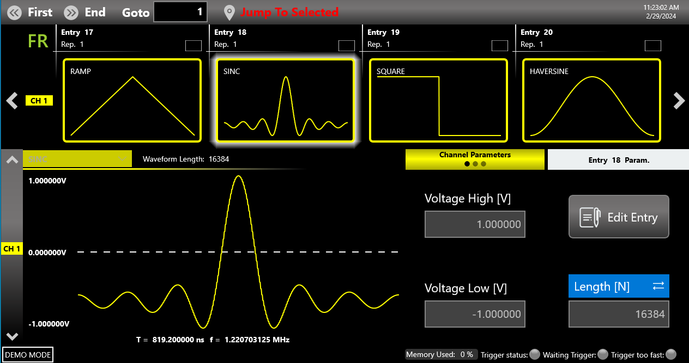
Pressing the Edit Entry button opens the Entry Editor Table. This table changes all the parameters associated with the sequencer entries (except the Length of the entries, which is still located in the Sequencer Area page) that control the execution flow of the sequencer.
Use a swipe up or down gesture to scroll through the table elements and reach the parameters of every sequencer entry.
The first column in the Entry Editor Table displays the Entry number, which defines its position in the play sequence. These numbers are also used as the targets for the Jump To, Pattern Jump, and Go To features. The selected entry is highlighted in yellow.
The Entry Editor Table has the following options.
| Item | Description |
|---|---|
| Wait Event | Defines the event that must occur before the entry is generated. The waveform output is held until the Wait Event happens, then the waveform output starts.
|
| Repeat | Defines how many times the waveforms in the entry are repeated: 1 to 4,294,967,295 or infinite cycles. |
| Jump If Event | Defines the event that must occur for the Jump To feature. When a Jump event happens, the sequencer jumps to the selected entry in the Jump To Entry field. It completes the period of the current waveform before jumping to another entry.
|
| Jump To Entry | Defines the Jump To entry target. The sequencer jumps to the selected entry when the event condition is met. The sequencer can jump immediately or when all the repetitions have been executed, as selected in the Jump Mode field (Device Settings, General section).
|
| Pattern Jump | Defines the pattern code for the Pattern Jump feature. The Pattern Jump is a conditional jump (part of the dynamic jump feature) that occurs when the sequencer receives a Pattern Code equal to the Pattern Jump parameter during the generation of the specific entry. It can be a number from 0 to 255. A Pattern Code can be sent to the sequencer using the SCPI command AWGControl:DJStrobe. The sequencer can jump immediately or when all the repetitions have been executed, as selected in the Jump Mode field (Device Settings, General section). |
| Pattern To Entry | Defines the target entry index for the Pattern Jump feature. As soon as the sequencer receives the pattern event, it jumps to the entry selected in this field.
|
| Go To Entry | When all repetitions complete (without being interrupted by a Jump To or Pattern Jump feature), the sequencer moves to the entry defined in the Go To Entry parameter. By default, the Go To entry is Next.
|
Entry Table Toolbar

| Button | Description |
|---|---|
| First Entry | Goes to the first entry of the table. |
| Last Entry | Goes to the last entry of the table. |
| Goto Entry | Goes to entry N of the table. |
| Add Prev. | Adds an entry before the selected entry. |
| Add Next | Adds an entry after the selected entry. |
| Remove | Removes the selected entry from the table. |
As an example, the following entry can be represented by a flow chart. Entry 1: Wait Event = Button, Repeat = 10, Jump If Event = Timer, Jump to Entry = Next, Pattern Jump = 123, Pattern To Entry = 4, Go To Entry = 3.
Jump to Selected Button

In Advanced Run Mode, the Jump To Selected button appears on the Sequencer Toolbar after the start of generation. While the instrument is generating and the execution flow is not in a Wait Event state, pressing this button forces generation to jump to the entry highlighted in the sequencer. The execution flow can jump immediately or when all the repetitions have been executed, as selected in the Jump Mode field (Device Settings, General section).
As an example, consider a sequencer where entry 18 is highlighted, with the following table entry for entry 1: Wait Event = Button, Repeat = 10000, Jump If Event = Ext. Trig. 1, Jump to Entry = Next, Go To Entry = 5.
Timing
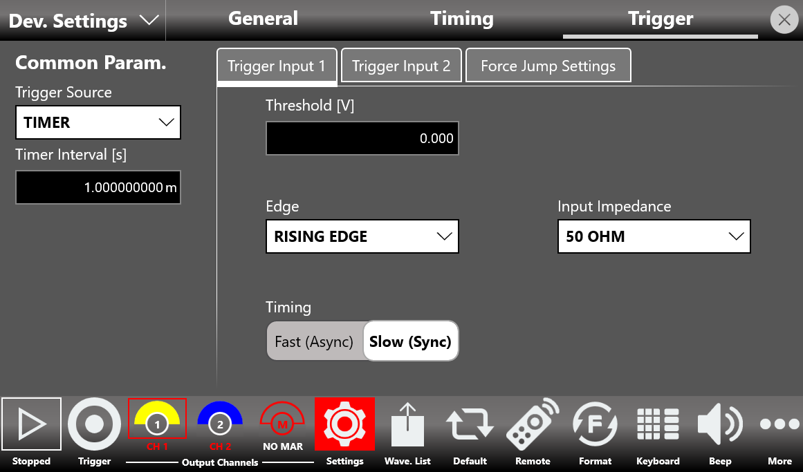
- Sampling Clock [Hz]: specifies the Arbitrary Waveform Generator sampling rate.
- Clock Source: specifies the clock source as Internal, Reference Clock In, or External Clock In.
- If Internal Clock is selected, the sampling clock is synthesized using a 10 MHz reference clock generated internally.
- If Reference Clock In is selected, the sampling clock is synthesized using the clock provided externally to the Ref. Clock In SMA connector. In this case the Reference Clock [Hz] control appears, and the user must specify the reference clock frequency in Hz.
- If External Clock In is selected, the internal clock synthesizer is bypassed and the clock signal provided at the External Clock Input SMA connector feeds the sampling clock directly for the system. In this case the External Clock In Divisor control appears to define the external clock signal frequency, which must match the value reported by the Ext. Clock Frequency indicator.
- Provide a clock that is synchronized to the frequency of the external trigger in, and connect it to the Reference Clock In connector.
- In Timing, set REFERENCE CLOCK IN as the Clock Source and set the Reference Clock In frequency.
- Set a Sampling Clock value that respects the following formula:
Sampling_Clock [Hz] = Reference_Clock_In [Hz] x M x (64 / 2^N)
where M = 1, 2, 3 ... 60, N = 0, 1, 2, 3 ... 34, and the product Reference_Clock_In [Hz] x M x 64 must be within the range [10 GHz to 20 GHz] in Full Rate Mode or the range [5 GHz to 10 GHz] in Half Rate Mode.
- Sync Output: enables or disables the external Sync Clock Output. This clock can be used to provide a trigger input signal synchronous with the system clock, which avoids jitter in the Trigger In to analog Out delay and reduces the Trigger In to analog Out latency. See the Trigger settings (in the Device Settings paragraph) for more details. When the Sync Output is enabled, the Sync Output Divisor parameter appears and the user can choose the Sync Output clock frequency from a list of all possible values.
Trigger
The Trigger Source specifies the source of the trigger: Trigger Input 1 (In 1), Timer, or Trigger Button.
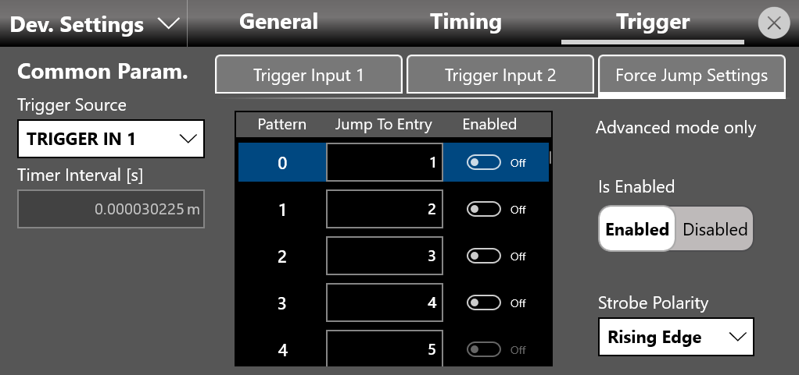
The 686-2C models have two independent external Trigger Inputs (Trigger In 1 and Trigger In 2), while the 686-4C models have four independent external Trigger Inputs (Trigger In 1, Trigger In 2, Trigger In 3, and Trigger In 4), each located on the front panel of the instrument.
The Source and Timer Interval [s] parameters are common to all channels of the instrument. The Threshold, Edge, Input Impedance, Timing, and Delay Adjust parameters are specific to each Trigger Input. You can switch between the two or four sets of these parameters by selecting the Trigger Input 1 ... Trigger Input 4 tabs located in the middle of the Trigger Settings page.
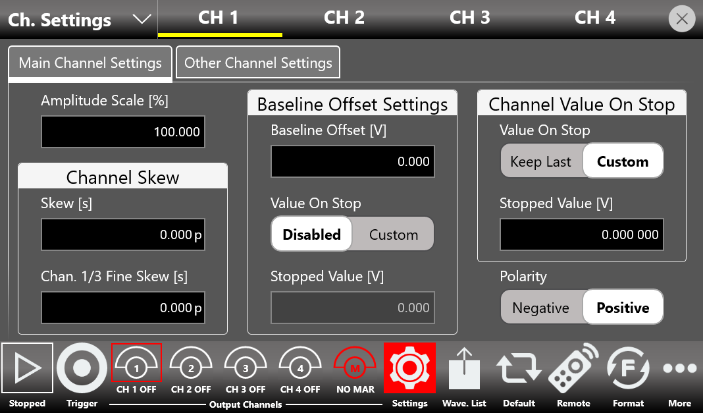
| Trigger In Setting | Description |
|---|---|
| Source |
|
| Timer Interval [s] | Sets the timer count interval. It has effect only when the Trigger Source is Timer. The edited value is automatically rounded to the closest value that the hardware can implement. |
| Edge | The slope can be positive or negative. When Rising Edge is selected, the trigger is detected when the signal on the Trigger In 1/2/3/4 SMA connector crosses the threshold from low to high. The Falling Edge option is the opposite. Both Edges means the trigger is sensitive to both edges of the signal. |
| Threshold [V] | The threshold that the external signal applied to the Trigger In 1/2/3/4 connector must cross to issue a trigger event to the instrument. |
| Timing | When Slow (Sync) is selected, the Trigger Input 1/2/3/4 signal is assumed to be asynchronous with the system clock. In this case a hardware time measurement circuit (TDC) is enabled to keep the Trigger In to Out jitter as low as possible. When Fast (Async) is selected, the Trigger Input 1/2/3/4 signal is expected to be synchronous with the Sync Clock Out (and therefore with the system clock). In this case the time measurement circuit is skipped, so the Trigger In 1/2/3/4 to Out delay is slower. |
| Delay Adjust [s] | When the Timing parameter is set to Fast (Async), the Trigger In signal is evaluated on the rising or falling edge of the Sync Clock Out. To optimize the timing margins, a delay can be applied to the Trigger Input 1/2/3/4 signal. The Delay Adjust [s] parameter specifies the delay applied to the Trigger Input 1/2/3/4 signal. The range of the delay is 0 ps to 2418 ps. The resolution of the delay is 78 ps. |
External Force Jump Settings (with 686-FSS option only)

If the Fast Sequence Switch option is available, in Advanced mode it is possible to provide a Force Jump action by applying an external 8-bit digital signal through the Ext. Pattern Force Jump In connector on the rear panel.
In this way it is possible to set up to 256 possible patterns that force the generation to jump into one of the 16384 possible entries of the sequencer, regardless of the state of the execution flow (except the Wait Event state).
For every External Force Jump pattern, a Strobe signal with a rising or falling edge (selectable) is required to sample the digital pattern. The external digital signal must remain valid and unchanged during the entire edge of the Strobe, with the setup and hold time specified in the instrument documentation.
In the Trigger Settings page, the new Force Jump Settings tab appears beside the Trigger Input 1/2/3/4 tabs. A table representing all 256 possible pattern inputs allows you to specify which entry to jump to once an external pattern is received.
| Ext Force Jump Setting | Description |
|---|---|
| Pattern | One of the 256 rows of the external force jump table. Its binary coding represents one possible pattern of the external 8-bit digital signal. |
| Jump To Entry | Specifies which entry to jump to when a specific pattern is received. The value is selectable from 1 up to 16384. If the set entry does not exist in the sequencer of the instrument, the TrueArb software automatically disables the corresponding row of the table. |
| Enabled | Enables or disables a specific External Force Jump pattern. If a specific pattern is disabled and that Force Jump pattern occurs on the input connector, it is not considered. |
| Is Enabled | A general enable/disable control for the External Force Jump feature. |
| Strobe Polarity | If the Strobe polarity is positive, the External Force Jump pattern is sampled on the rising edge of the strobe signal. If negative, it is sampled on the falling edge. |
Channel Settings
The Channel Settings page defines the parameters of the analog and digital channels. The digital channel outputs are available only on the 686-4C models.
Main Settings Page (CH1, CH2, ... CH N)

- Amplitude Scale [%]: can be modified at run time to adjust the waveform amplitude while the instrument is running. It is applied to all the waveforms contained in the sequencer for the specified channel. It is expressed as a percentage and has a range of 0% to 100%. A value of 100% means the waveform keeps its original amplitude.
- Channel Skew:
- Skew [s]: defines a time delay among the analog output channels to de-skew the outputs. The resolution is 100 fs on 2-channel models and one sampling clock period on 4-channel output models.
- Chan. 1/3 (or 2/4) Fine Skew [s]: available only on the 4-channel models. It defines a fine time delay between the output couple Channel 1 / Channel 3 and the output couple Channel 2 / Channel 4. The resolution is 100 fs. The relationship between channels considers the Skew parameter (Nx, where x is the channel), the Chan. Fine Skew parameter (delta t13 or delta t24), and the Sampling Clock Period (Ts).
- Baseline Offset Settings:
- Base Line Offset [V] (or Vocm [V] on the differential output models): defines the DC offset value added to the output signal relative to the ground level.
- Value On Stop [Disabled/Custom]: this toggle selector enables the value of the Stopped Voltage Value, which is set in the stop condition. When the toggle is set to Disabled, in the stop condition the baseline value on the output follows the value set in the Baseline Offset parameter.
- Stopped Output Voltage [V]: sets the value of the Baseline Offset in the stop condition (if the Value On Stop selector is set to Custom).
- Channel Value on Stop Settings:
- Value on Stop [Keep Last/Custom]: selects the value generated after the stop event. Keep Last: the generator keeps the last value generated before the stop. Custom: the generator keeps a user-defined value (Stopped Output Voltage).
- Stopped Output Voltage [V]: defines the custom value generated after the stop event.
- Polarity: when Negative is selected, the analog output signal is inverted.
Correction and Optimization (CH1, CH2, ... CH N)

- Correction Offset [V]: defines the digital offset value added to the generated waveform. The minimum value is 0 V, while the maximum value is adjusted dynamically based on the amplitude chosen for the respective waveform. For example, on the single-ended models, if the amplitude is set to 2 Vpp, the user can add a correction offset up to 1.5 V.
- Optimization: every digital-to-analog converter is affected by a series of systematic errors (INL, DNL, timing errors) that give rise to nonlinearity in the spectrum of the generated output signal. Setting High Linearity Mode reduces the noise spectral density of the output signals for better linearity, while Low Noise Mode reduces noise when the generated signal has a low frequency or consists of constant components.
- Overshoot Tuning: in an impulsive waveform, allows you to vary the amplitude of the transient value of the signal with respect to its constant value. The higher the overshoot value, the faster the edge of the output signal.
- Flatness Compensation: in RF signal generators, as the frequency increases, flatness compensation filters help limit the degradation of the amplitude of the generated signal. If you prefer better spectral purity by limiting the contribution of spurious emissions, it is better to deactivate this compensation.
Digital Channels

By purchasing the appropriate option license, it is possible to enable up to 32 digital output channels on the 4-channel models. The maximum number of digital outputs available depends on the setting of the Operating Mode parameter and the instrument model, as summarized in the following table.
| Model | Operating Mode | Max Analog Sampling Clock | Max Digital Sampling Rate per Channel | Available Output Digital Channels |
|---|---|---|---|---|
| 686-4C | Full Rate | 20 GHz | 10 Gbps | 8 / 16 |
| 686-4C | Half Rate | 10 GHz | 5 Gbps | 8 / 16 / 24 / 32 |
- Digital Channels: if this parameter is 0, the DIG button is disabled. If 8 or more digital channels are selected, the DIG button can be touched to enable or disable the digital output lines. Once the digital channels are enabled, you can define the digital waveform in the Waveform Graph area in the same way as for analog channels. All digital lines are displayed simultaneously on the Waveform Graph via a bus composed of digital waveforms (DIG 0, DIG 1, DIG 2, and so on). The Increasing/Decreasing Strategy, Sub Length, and Delay parameters are present for each sequencer entry on the digital outputs as well.
Up to 4 Pods (a group of 8 digital outputs) can be managed separately from each other. The correspondence between Pods and digital outputs is as follows.
| Pod | Digital Waveform Lines | AT-DTTL8 probe | AT-LVDS-SMA8 cable |
|---|---|---|---|
| Pod A | DIG 7 ... DIG 0 | Ch.7 ... Ch.0 | DO 7_P/N ... DO 0_P/N |
| Pod B | DIG 15 ... DIG 9 | Ch.7 ... Ch.0 | DO 7_P/N ... DO 0_P/N |
| Pod C | DIG 23 ... DIG 16 | Ch.7 ... Ch.0 | DO 7_P/N ... DO 0_P/N |
| Pod D | DIG 31 ... DIG 24 | Ch.7 ... Ch.0 | DO 7_P/N ... DO 0_P/N |
- AT_DTTL8 only:
- Voltage Level [V]: defines the output voltage level (in volts) of the LVTTL digital probe. It takes effect only when the Digital Option (686-DIG license) is installed and the LVTTL probe adapter is connected (RIDER-MINI-SAS-HD and AT-DTTL8 accessories). The same voltage level applies to all 8 channels of the same Pod. For more information on the accessories, see Appendix A.
- CML Settings:
- Diff. Voltage Level: the differential voltage level of all CML signals of the specified Pod that come from the mini-SAS HD connector on the rear of the instrument. Up to 4 values are available. All eight CML pairs of a single Pod can be more conveniently used through the SMA connectors of the AT-LVDS-SMA8 cable (see Appendix A).
- Equalization Factor [N]: as this parameter increases, the rising edge of all CML output signals of the specified Pod and their overshoot are emphasized. Up to 16 values are available: 0 to 15.
- Skew [s]: sets the delay between the analog channels and the digital channels to de-skew the analog and digital outputs. The maximum time skew allowed depends on the current sampling frequency. The same skew applies to all 8 channels of the same Pod.
Marker Settings
In the marker output page, you can define the behavior and parameters of the Marker Out signals located on the front panel of the instruments.

The 686-2C models have two Marker Outs: Marker Out 1 and Marker Out 2. The 686-4C models have four Marker Outs: Marker Out 1, Marker Out 2, Marker Out 3, and Marker Out 4.
Each Marker Output can be programmed individually to generate a fixed level (Low or High), an automatic impulse of a fixed duration, or a completely custom digital pattern. The custom digital patterns are generated synchronously with the analog outputs and at the same update rate.
Each Marker Out has its own set of parameters. You can switch among these sets by selecting the Marker Out 1 ... Marker Out 4 icons located on the left side of the Marker Settings page.
Marker Mode
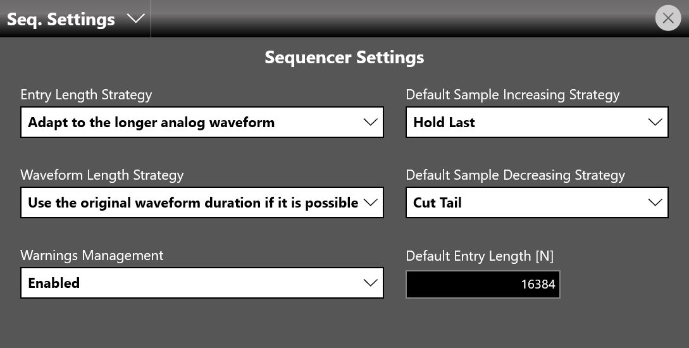
- Automatic: the marker behavior depends on the Run Mode.
- Continuous: the instrument generates a Marker pulse of 36 sampling clock periods in Full Rate mode (or 18 sampling clock periods in Half Rate mode), synchronous with the analog outputs, for each sequencer entry and for each repetition.
- Single/Burst: each time a trigger event is received while the instrument is waiting for a trigger event, a Marker pulse of 36 sampling clock periods is generated.
- Triggered Continuous: at the start event, the instrument generates a Marker pulse of 36 sampling clock periods.
- Stepped: each time a trigger event is received while the instrument is waiting for a trigger event, a Marker pulse of 36 sampling clock periods is generated. If an entry with infinite repetitions is being executed and a trigger event occurs, a Marker pulse is generated and the execution skips to the next entry. In this case the Marker pulse may not be synchronous with the waveform of the next entry.
- Advanced: each time a trigger event is received while the instrument is waiting for a trigger event, a Marker pulse of 36 sampling clock periods is generated. The marker pulse is also generated each time a Jump event occurs; in this case it may not be synchronous with the output waveform.
- Fixed To Low Voltage / Fixed To High Voltage: the marker level is fixed to the low level or high level.
- Custom Pattern: the Marker Out generates a custom digital pattern synchronous with the analog outputs and at the same update rate. The custom pattern is defined in the same way as the digital patterns, by selecting a digital waveform in the Waveform Graph area.
| Model | Operating Mode | Custom Pattern option for Marker Mode parameter |
|---|---|---|
| 686-4C | Full Rate | MARKER OUT 1: available. MARKER OUT 2: available. MARKER OUT 3: not available. MARKER OUT 4: not available. |
In all other Operating Mode options, as well as on models where this parameter does not exist, the Custom Pattern option is always present on all available Marker Outs.
Marker Skew [s]
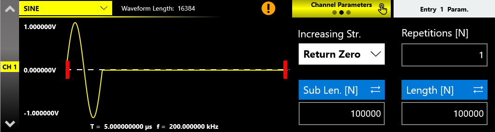
Defines the skew between the marker and the analog channels. The maximum time skew allowed depends on the current sampling frequency. The edited value is automatically rounded to the closest value that the hardware can implement.
High Voltage Level [V]
Sets the marker high level voltage.
Low Voltage Level [V]
Sets the marker low level voltage.
When the Marker Mode parameter is set to Custom Pattern, the user must press the MAR button until it turns pink to allow the marker signal to reach the output of its connector. All the other modes are active immediately once set. You can define the Marker Output waveform in the Waveform Graph area in the same way as for the analog channels or digital channels.
Sequencer Settings

The Sequencer Settings page contains parameters that define the strategy used to manage the length of the sequencer entries in relationship with the length of the channel waveforms defined for each entry.
Entry Length Strategy
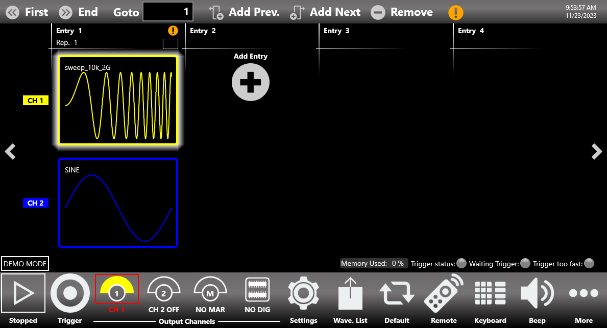
- Adapt to the longer analog waveform: when selected, the length of an entry defaults to the length of the longest waveform among all analog channels assigned to the entry.
Example: Entry 1 consists of two waveforms (2-channel model): the predefined SINE waveform for Channel 1 (16384 samples) and the imported sinc_100ksamples waveform (100000 samples) for Channel 2. With Adapt to the longer analog waveform selected, the Length of Entry 1 is 100000. You can manage the shape of the SINE waveform with the Sample Increasing Strategy option, for example Return Zero or Interpolation.
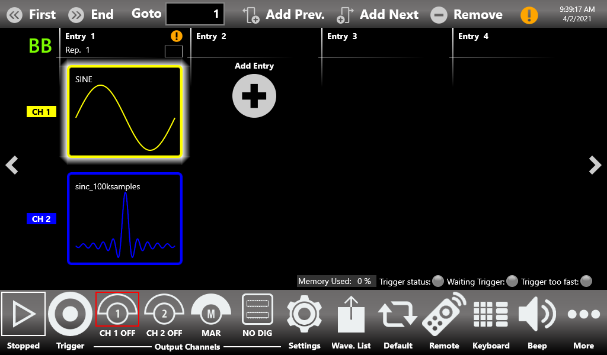
Adapt to the longer analog waveform: CH1 holds a SINE (16384 samples) and CH2 the imported sinc_100ksamples (100000 samples). 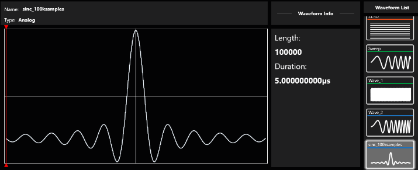
Waveform Info for the imported sinc_100ksamples waveform: 100000 samples, 5 us duration. 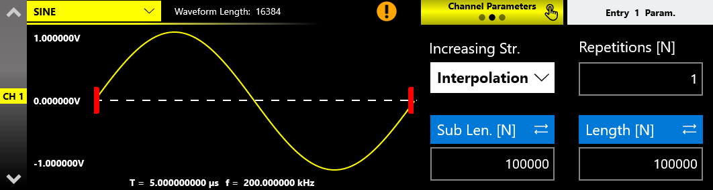
The SINE on CH1 adapted to the longer entry length using the Interpolation increasing strategy. - Adapt to the shorter analog waveform: when selected, the length of a sequencer entry defaults to the length of the shortest channel waveform among all analog channels assigned to the entry.
Example: Entry 1 consists of two waveforms (2-channel model): the parametric Sinc_1ksamples waveform for Channel 1 (1152 samples) and the predefined SINE waveform (16384 samples) for Channel 2. With Adapt to the shorter analog waveform selected, the Length of Entry 1 is 1152. You can manage the shape of the SINE waveform with the Sample Decreasing Strategy option, for example Cut Tail or Decimation.
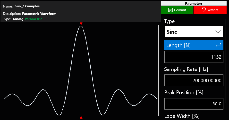
The parametric Sinc_1ksamples waveform used on Channel 1 (1152 samples). 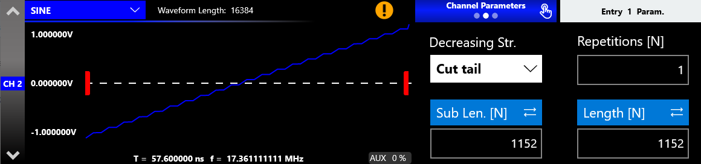
The SINE adapted to the shorter entry length using the Cut tail decreasing strategy. The SINE adapted to the shorter entry length using the Decimation decreasing strategy. - Apply the default value: when selected, the length of a sequencer entry defaults to the value specified in the Sequencer Item Default Length [N] parameter.
Waveform Length Strategy
This strategy applies only to imported waveforms where the sampling rate information of the original file is defined, such as .trc files and waveform files imported from or created in the Waveform Editor.
- Use the original waveform duration if possible: when the sampling frequency of the imported or created waveform differs from the Sampling Clock of the instrument set to reproduce it, the waveform duration during generation is no longer consistent with the original. When this option is selected, the length of the entry is automatically calculated to match the original duration of the imported waveform. For example, you can play back waveforms from an oscilloscope acquisition (.trc files only) while preserving their original duration. You can use the original waveform duration only if the imported waveform data contains the sampling rate information, such as .trc files and waveforms created using the Waveform Editor.
Example: Entry 1 consists of two waveforms (2-channel model): the imported sweep_10k_2G waveform for Channel 1 (sampling rate of 2 GHz, 10000 samples in length, original duration 5 us) and the predefined SINE waveform (16384 samples) for Channel 2. If Use the original waveform duration if possible is selected and the Sampling Clock parameter is set to 10 GHz, the Length of Entry 1 is automatically recalculated to keep the same duration as the imported waveform, so Length [N] is 50000; the constituent samples are interpolated to maintain the shape.
Waveform Info for the imported sweep_10k_2G waveform: 10000 samples, 5 us duration. The imported sweep_10k_2G waveform on CH1, with the entry Length matching the imported waveform length. - Use the waveform length: when selected, the length of the entry equals the imported waveform length in samples. In this case the original duration of the imported waveform is not maintained.
Example: using the previous example as a reference, selecting this option keeps Channel 1 at the imported waveform length (10000). Make sure the Entry Length Strategy parameter is set to Adapt to the shorter analog waveform, because that count (10000) is smaller than the length of the waveform used for Channel 2 (16384).
Default Resampling Strategy
This defines the default setting of the resampling strategy parameter. Whenever a new entry is added to the sequencer and the Sub Length value of a channel differs from the Waveform Length value, the Increasing and Decreasing Strategy parameters of the specific channel are automatically set to their default values.
The Default Sample Increasing Strategy parameter defines the strategy used to adapt the waveform envelope when the original waveform length is shorter than the value specified by the Sub Length parameter. The available techniques are:
- Interpolation: performs a linear interpolation between the waveform samples.
- Return Zero: fills the tail of the waveform with zeros.
- Hold Last: holds the last value of the waveform.
- Samples Duplication: repeats the waveform samples.
The Default Sample Decreasing Strategy parameter defines the strategy used to adapt the waveform envelope when the original waveform length is greater than the Sub Length parameter. The available techniques are:
- Decimation: reduces the number of samples while maintaining the waveform shape.
- Cut Tail: cuts the tail of the waveform, reducing its size.
- Cut Head: cuts the head of the waveform, reducing its size.
Default Entry Length [N]
Specifies the length of the sequencer entries when the Sequencer Item Length Strategy parameter is set to Apply the default value.
Warnings Management
This parameter enables or disables the warnings shown in the Sequencer Toolbar and in the Waveform Area that notify you when one or more channel waveforms have been assigned to an entry with a different length. This situation causes the application to modify the mismatching waveforms during execution to match the entry length, using the strategy specified in the Sample Increasing/Decreasing Strategy parameter.
When the Consider a warning as an error option is selected, the application checks whether one or more sequencer entries have a length that differs from the selected waveform length. If this condition is met, the instrument does not start.
Other Settings
The Other Settings page contains parameters that set some user interface (UI) configurable parameters and the generation of a log file.
UI Setting: ON/OFF Waiting Time [s]
Sets how long the user must hold down the Channel button to turn the channel output ON or OFF. This feature is also available for the Marker button (MAR button), but only if the user has set Custom Mode as the Marker Mode in the Marker Settings. The range of the ON/OFF Waiting Time is 0 s to 2 s. The default value is 200 ms.
Log Settings
| Log Setting | Description |
|---|---|
| Log on file | Enables or disables the automatic creation of a log file. |
| Log Size [Byte] | When the message data size set with this parameter is reached, a log file is automatically generated. |
| Export Current Log | Immediately exports all log messages to a .txt file specified by the user. |
Waveform List
The Waveform List consists of three main elements:
- Shortcuts: in this area you can access a range of options dedicated to managing the waveform list.
- Graph Area: this area displays a graphical rendition of the currently selected waveform.
- Waveform List: in this area you can scroll between all stored waveforms.
The Model 686 series contains by default a set of Factory Predefined Waveforms that are common to all configurations.
Predefined Waveforms carry an orange underline beneath their names, Imported Waveforms carry a blue underline, and Parametric Waveforms carry a green underline.
Please note that:
- You can build your own set of Predefined Waveforms by promoting waveforms in the list to Predefined ones.
- You can delete a Predefined waveform with the exception of ZERO for digital waveforms and SINE and DC level for analog waveforms.
- To restore the Factory Predefined waveforms, press the Load Factory Predefined button. The imported waveforms previously promoted as Predefined will not be deleted.

The Waveform Graph
The Graph Area presents a rendition of the currently selected waveform. You can zoom in both directions with a pinch-in or pinch-out gesture, or by holding the left mouse button while dragging the pointer over the section you want to zoom. Doing so highlights the selected section with a red overlay, as shown in the following image.
To zoom out while using a mouse, drag the red slider. Among the various items of information, the area also contains a Reset Zoom button. Holding the right mouse button brings up a small shortcut menu, with options for zooming in and out and one for resetting the zoom level to default. You can also reach this menu by holding down when operating via touch, as shown below.

Please note that the drawn waveform is an ideal waveform depicting the value of each sample.
How to Import an Analog or Digital Waveform from a File
The Import button allows you to import data from a file to create a new waveform. The supported file formats are:
- .txt – New line (\n) separated text file (one column only, with no header).
- .zip – Compressed file in a binary proprietary format.
- .trc – LeCroy oscilloscope binary file format.
- .bin – Binary file. If the file is loaded as an analog waveform, the software uses two bytes for each sample (little-endian format). If it is loaded as a digital waveform, the software uses four bytes for each sample (little-endian format).
- Press the Wave button located at the left end of the Shortcuts area, then press the Import button. A Windows File Browser opens. Select the .txt or .zip file you want to import, then the Import page opens.
- In the Import dialog, the Name and Description fields are automatically filled with default values.
- Select the Waveform Type you want to import ("Analog" or "Digital").
- If "Analog" is selected, the waveform data is interpreted as a single column of values (a header is not allowed). The imported waveform is normalized so the user can easily adjust its amplitude and offset using the Waveform parameters in the Graph area of the sequencer.
- If "Digital" is selected, each data point is represented by a 32-bit unsigned integer where the value of each bit is transferred to the corresponding digital line (Bit 0 maps to Digital Line 0, Bit 1 maps to Digital Line 1, and so on).
- Press OK to confirm, or Close to cancel the operation.
How to Export an Analog or Digital Waveform to a File
- Select an analog or digital waveform in the waveform list.
- Press the Wave button and then the Export button.
- The exported waveform is stored in a proprietary binary .zip file format that can be shared with other instruments running the same application.
- You can also export the Predefined waveforms.
Please note this special case: if you export a Predefined waveform and then import it again into the list, it is imported as a standard analog or digital waveform.
How to Promote an Analog or Digital Waveform to a Predefined
- Select an imported analog or digital waveform in the waveform list.
- Press the Wave button and then the Promote button.
The waveform appears in the list in red color to show that it has been promoted to Predefined.
How to Edit an Analog or Digital Waveform
- Prerequisite: the "Waveform Editor" software is installed.
- Select an analog or digital non-parametric waveform in the waveform list.
- Press the Edit button to launch the "Waveform Editor".
- Refer to the "Waveform Editor" user manual for a complete explanation of editing and creating waveforms.
How to Create a New Analog or Digital Waveform
- Prerequisite: the "Waveform Editor" software is installed.
- Press the Create button in the More... menu to launch the "Waveform Editor".
- Refer to the "Waveform Editor" user manual for a complete explanation of editing and creating waveforms.
Parametric Waveforms
Parametric waveforms simplify and speed up the process of creating custom waveforms. While the Berkeley Nucleonics Waveform Editor is still available, parametric waveforms introduce a set of highly customizable, ready-to-use waveforms that remain part of the TrueArb software.
How to Create a New Parametric Waveform
- Press the Wave button located at the left end of the Shortcuts area, then press the New Parametric button to start the creation process.
- In the Add Parametric Waveform dialog, the Name and Description fields are automatically filled with default values.
- Select Predefined if you want the new waveform to be predefined.
- Press the Add Waveform button to complete the creation process, adding the newly created waveform to the waveform list. The newly created parametric waveform is a sine waveform by default, which can later be changed to other kinds of waveform.

Parametric Waveform Types
Once a new parametric waveform has been created, its editing page opens. From here you can select different types of waveform from the Type drop-down menu. The available types are listed below.
| Waveform Type | Parameters | Auto Calc Available |
|---|---|---|
| Sine | Length, Sampling Rate, Cycles, Frequency, Phase | Yes |
| Square | Length, Sampling Rate, Cycles, Frequency, Phase, Rise & Fall Time, Duty Cycle / Pulse Width | Yes |
| Sweep | Length, Sampling Rate, Start Frequency, Stop Frequency, Sweep Mode | No |
| Sinc | Length, Sampling Rate, Peak Position, Lobe Width | No |
| Exp | Length, Sampling Rate, Cycles, Time Constant, Exp Mode | No |
| PRBS | Length, Sampling Rate, PRBS Type | No |
| Pulse | Length, Sampling Rate, Cycles, Frequency, Phase, Rise & Fall Time | Yes |
| Multitone | Sampling Rate, Tone Frequency, Tone Phase, Tone Amplitude | No |

Once you have decided which waveform type you want, you can start customizing it to suit your needs. To do so, set the characteristic parameters of the waveform type, which are accessed by scrolling up and down the waveform parameters area as shown in the following image.
The Optimized Length For Parameter
Once you have established which type of waveform to create, you can act on its parameters to specify, for example, its Frequency. The values of the other parameters, such as the Length and number of Cycles, are then automatically calculated to fit the specified frequency, also taking the value of the Sampling Clock into consideration.
In addition, keep in mind that the Operating Mode (see Dev. Settings, General page) sets not only the maximum value of the instrument's sampling clock but also the maximum available length and the granularity with which a waveform can be created.
In light of this, it is possible to understand how the parametric waveform being created is optimized for a specific Operating Mode.
Once a parametric waveform is created, changing the Operating Mode means its characteristics, such as Frequency, are no longer respected. A warning appears to report this condition, and the user, by acting on the Optimized Length For parameter, can choose whether or not to optimize the waveform for the new Operating Mode.
The Auto Calc Menu
As shown in the table of waveform types (see Parametric Waveform Types), some types, such as Pulse, Square, and Sine, have Auto Calc.
Auto Calc lifts you from the time-consuming task of finding a setup that correctly synthesizes the desired frequency. There are four strategies, with varying degrees of freedom, detailed in the following table.
| Auto Calc Strategy | Length | Sampling Rate | Cycles | Frequency |
|---|---|---|---|---|
| Auto Calc Frequency | Free | Free | Free | Automatic |
| Auto Calc Cycles | Free | Free | Automatic | Free |
| Auto Calc Cycles and Length | Automatic | Free | Automatic | Free |
| Auto Calc Sampling Rate | Free | Automatic | Free | Free |
Each "Free" in the table means you can change that parameter within reasonable boundaries, such as those specified by Shannon's theorem, while "Automatic" means that a parameter or pair of parameters is determined automatically and is not directly customizable.

To change the strategy in use, tap the Auto Calc Options drop-down button and select the strategy that best suits your needs from the submenu.
It is important to note the impact of the Wrap Around toggle switch. When on, it enforces a whole number of cycles. When off, the number of cycles can be non-whole. This is important and impactful while the Auto Calc Cycles or Auto Calc Cycles and Length strategies are in use, as it can lead to very different results. It comes with a drawback, though, because a non-whole number of cycles can lead to undesired signal behavior, such as a spurious signal once analyzed in the frequency domain.

The Setup Warning Menu
The Setup Warning is a feature of those waveform types that have Auto Calc, such as Pulse, Sine, and Square.
Sometimes the set of values assigned to parameters in the Auto Calc domain, which are Frequency, Sampling Rate, Length, and Cycles, leads to an unfeasible setup. This is highlighted by the Setup Warning message, which appears as soon as the condition arises. Tapping the Setup Warning message opens a small pop-up with a brief description of what is happening.
The pop-up may also offer suggestions for those same parameters, so that the user-set output frequency is correctly synthesized, as shown in the image below. You can apply those values directly from within the pop-up message, or note them down and enter them manually.
Note that these suggestions are not always guaranteed to be available.

Pulse Type Parametric Waveform
Once you select Pulse from the list of available waveform types and set it up to have the desired frequency, you can start customizing it. A Pulse parametric waveform offers the following parameters related to the shape of a pulse: Fall Time, Rise Time, Pulse Delay, and one of Duty Cycle or Pulse Width. You can switch between Duty Cycle and Pulse Width at any time by tapping on them.
Both Rise and Fall times follow the 10 to 90 format and are taken into account so that the model holds true. With Pulse Delay you can control the initial delay you want your pulse to have.
Square Type Parametric Waveform
Square type parametric waveforms are closely related to Pulse type parametric waveforms, sharing all parameters except Pulse Width / Duty Cycle, which is not available. These differences arise from the fact that a Square waveform always has a 50 percent duty cycle.
Sweep Type Parametric Waveform
The Sweep type parametric waveform is one of the types that does not have Auto Calc, so you are free to customize both Length and Sampling Rate. It has three characteristic parameters: Start Frequency, Stop Frequency, and Sweep Mode. While Start and Stop Frequency are straightforward, Sweep Mode lets you change between a Linear and a Logarithmic sweep. To change the Sweep Mode, tap the Sweep Mode toggle switch.
Exponential Type Parametric Waveform
The Exponential type parametric waveform is one of the types that does not have Auto Calc, so you are free to customize Length, Sampling Rate, and Cycles. It has two characteristic parameters: Time Constant and Exponential Mode. By interacting with the Exponential Mode toggle switch, you can toggle between an Exponential Rise and an Exponential Decay.
Sine Type Parametric Waveform
Sine type parametric waveforms have Auto Calc, so once you have set the frequency you want, you can change the Phase by customizing the Phase constant among the available parameters.
Sinc Type Parametric Waveform
Sinc type parametric waveforms do not have Auto Calc, so you are free to customize both Length and Sampling Rate as you see fit. You can further customize the shape by changing one or both of the Peak Position and Lobe Width.
PRBS Type Parametric Waveform
PRBS type parametric waveforms do not have Auto Calc, leaving you free to customize Length and Sampling Rate as you see fit. You can change the PRBS type by tapping the PRBS Type drop-down menu and selecting one of the available types, as shown in the image below.

The available PRBS types are PRBS 7, PRBS 9, PRBS 11, PRBS 15, PRBS 23, and PRBS 31.
Multitone Type Parametric Waveform
Multitone type parametric waveforms let you create a custom sum of different sinusoidal tones, with a maximum of 10 tones, or fewer if the number of samples exceeds the memory limit.
Once you have set the Sampling Rate as you see fit, you can start adding your desired tones. To add a tone, tap the Add New Tone button. A dialog box opens, and within it you can set the characteristic parameters of a tone: Frequency, Amplitude, and Phase.

This kind of waveform does not have Auto Calc, yet it works in a similar fashion to the Length and Cycles option that the Auto Calc-powered waveforms have. The Length parameter, while still displayed, is not directly customizable; it is determined each time you add or remove a tone.
Once you have finished adding your set of tones, you can further customize their Amplitude and Phase on a tone-by-tone basis by interacting with each tone card in the tone queue.
You cannot change the Tone Frequency. As soon as a single tone is present in the tone queue, trying to alter the Sampling Rate results in a warning message, prompting you either to dismiss the change or to delete all queued tones before changing the Sampling Rate.
While adding a tone, you may misenter its frequency. To delete a tone you can follow two routes:
- The first simply requires you to tap the delete button on each tone card in the tone queue.
- The second, while fundamentally working like the first, is more tailored toward deleting multiple tones at once. Tap the Delete Tones button. A submenu opens, showing a brief summary of the currently queued tones. Each entry has a small checkbox you can mark to delete that tone once you tap the Delete button, as shown in the image below.

How to Create and Load a Restore Point
Once you finish setting up a parametric waveform, you can create a Restore Point. A restore point takes a snapshot of the current parametric waveform configuration, so that if you modify it, perhaps unknowingly, or you are not satisfied with the result of your changes, you only need to tap the Load Restore Point button to go back. To create a Restore Point, tap the Create Restore Point button.
How to Obtain the Array Points from a Parametric Waveform
Once you have finished customizing a parametric waveform, you can obtain its array points. After selecting the chosen parametric waveform, tap the Wave button in the Shortcuts area and then the Get Array Points button. A new non-parametric waveform containing the array points is created and added to the waveform list, which you can later export and modify as you see fit.
Configurations
A configuration contains the data, in proprietary format, relative to the channel waveforms inserted into the sequencer and all the instrument and sequencer parameters.
Save As...
A configuration can be saved with the "Save As" button, which opens a dialog box as shown in the picture below. The configuration is saved in the configuration list, which can be accessed through the "Load From" dialog box.

On this page you can add a new configuration entry or overwrite an existing one. To create a new configuration entry, specify a name in the text box at the bottom of the page and then tap the "Add New" button.
Export Configuration
By tapping the Export Configuration button, a proprietary binary .zip file relative to the current configuration is exported. The exported file can be used to share configurations between different users or instruments.
Load From...
By pressing the "Load From" button in the "More" menu, a page opens that shows the list of all saved and imported configurations. By selecting an existing configuration, all the settings of that configuration are loaded into the instrument.
On the "Load From" page you can also manage the configuration list. It is possible to delete, import, or lock a configuration. When a configuration is locked it cannot be deleted or overwritten.
By pressing the Import Configuration button you can import a configuration file that was previously exported by a different instrument or by a different user. The imported configuration is inserted in the "Load From" list.
Simple AFG Application
The Model 686 series instrument, when used in Arbitrary Function Generator mode, has two or four independent analog channels. Each channel can generate a predefined waveform or a user-defined waveform loaded from a file. Any characteristic parameter of the selected waveform can be modified at runtime. For example, if a pulse waveform is selected it is possible to define at runtime its amplitude, offset, frequency, duty cycle and the duration of leading and trailing edges.
The Model 686 series instrument includes a 7″ capacitive touch screen and an easy touch user interface based on a Microsoft Windows 10 platform. You can control instrument operations using one or all of the following entering methods:
- Touch Screen and Front-panel soft key controls
- Keyboard and mouse
Simple AFG Touch UI
The Simple AFG Touch UI is designed for touch, to drive simplicity in operating an Arbitrary Waveform Generator, using the modern technique found on tablets and smart phones, available on capacitive touch-screen displays. All the important instrument controls and settings are always one touch away:
- Swipe down to change the output channel.
- Swipe left or right to navigate through the sequencer entries.
- Pinch in or out to zoom the waveform graph.
- Use the touch-friendly virtual numeric keyboard to modify the parameters and to enter new values on the fly.
User Interface Description
The Simple AFG software environment provides an easy access to all instrument functionalities and parameters. The AFG user interface consists of four main elements:
- Waveform Parameters Area. It contains all the waveform settings. It is composed by the Carrier tab and the Secondary tab. The Carrier tab allows to choose the Run Mode and the Waveform type and to set its parameters.
- Graph Area. It shows a qualitative graphical representation of the generated waveform.
- Channel Information. It summarizes the channel settings.
- Command Bar. In this bar there are elements to control the instrument operations, to modify the instrument settings and to manipulate waveforms.
Waveform Parameters Area
This section is different in base of the tab selected:
- In the Carrier tab it is possible to define the Run Mode, the Carrier Waveform and its parameters as explained in the relative chapter.
- If the Run Mode option selected is different from Continuous, will compare another tab right side (the Modulation, Sweep or Burst tab). This tab changes title name and functionality depending on the selected Run Mode. For example, if the Run Mode is Sweep the Secondary tab will take the title name “Sweep” and the tab page will show the Sweep parameters. The same will happen for Modulation and Burst modes. In Continuous Run Mode the Secondary tab is not active.
Graph Area
The graph area displays the Output channel waveform with a vertical legend that shows the minimum and maximum voltage levels and the offset.
When View All Channels is checked the graph shows all channels graphs overlapped. The vertical scale is referred to the most amplitude from the channels. Furthermore, you can decide to View only the channels that you want tapping on coloured buttons under the graph.
Checking View Grid, you can view further horizontal and vertical lines with other values of amplitude.
Zoom graph
Tapping on the highlighted button below, you can open another panel with more functions that expands the functionality of the graph. In particular, this new panel give you the possibility to Zoom into area of the graph with different modality.
As you can see in the previous figure, the panel is divided in two areas, on top there is the command bar while the rest of the area is employed by the graph. The Waveforms on the graph can be represented with Samples Scale or Times Scale, you can zoom into area using two fingers as multitouch to zoom in and out, one finger to translate window zoom left or right, otherwise you can select a rectangle area if the correct button is enabled. Every time that you Zoom in, will be add to a stack the previous value of Zoom and will be show two buttons, “Reset” and “Back” in the command bar; these buttons permit you to come back the previous values or set the default value state of the waveform with zoom at 100%.
Below the description of the command bar:
- Go To: If you are in Samples Scale, you can insert in the textbox the sample that you want to go and the graph will move the actual window zoom to that sample, at same way if you are in Times Scale, but you must insert a time value. The range of the Samples Scale is 0 to 16384, while the Time Range depends on the values set on the Channel Data.
- ALL CH: enable or disable the View All Channels.
- Times Scale: if enabled the Times Scale is visible, otherwise Samples Scale by default.
- View Grid: if enabled, you can view further horizontal and vertical line with an others value of amplitude and Samples/Times.
- Zoom Rect Area: if enabled, the multitouch and the translation left/right will be disabled, you can holding down and then release to select an area to Zoom.
- Cursor: enable this button if you want to see a cursor on the graph that visualize the values (Sample/Time and Amplitude) of the waveforms in the position set.
- Info Buttons: tap to open a panel where they are indicated a lite description of the buttons just listed.
Channel Information
This area displays the channel name and a list of all the main current channel settings: the selected waveform type, the Modulation / Sweep / Burst mode, the Generation mode, the channel status and the Trigger Source.
Command Toolbar Area
The command bar contains several touch buttons to control the instrument and its layout changes depending on the model (in the 4-channels models some buttons can be located in the More menu instead of in the Command Bar).
| Command Bar Button | Description |
|---|---|
| Running / Stopped | Use this button to set the instrument in Running state (or Ready to receive a Trigger) or in the Stopped state. If the button is green the instrument is running while if it is grey the instrument is stopped. By pushing this button, the instrument state will change. |
| Trigger | Use this button to send an internal software trigger to the instrument. Independently from the setting this trigger is always received. |
| Output Channels (CH 1, CH 2, ... CH 4) | Press CH 1, CH 2, ..., CH 4 to change the Output Channel page. By pressing and keep pressed the Channel button for a programmable time (ON/OFF waiting time), you will turn it OFF/ON. The ON/OFF waiting time can be set in the Device Settings. When a channel is OFF, it is mechanically disconnected from the output. |
| Copy Ch | This button copies all settings of the visualized channel to all other channels. When you press the button a dialogue window appears to Confirm or Cancel the operation. As example on four channel models, you can copy the channel 1 into channel 2, 3, 4 or the channel 2 into channel 1, 3, 4 depending on the current selected one. Note: this button is in the More menu on 4-channels models. |
| Settings | This button opens the output channel Settings and device Settings. |
| Wave. List | This button opens the page where you can manage all imported and predefined waveforms of the current configuration. These waveforms can be used for Carrier Wave, Modulation Law or Sweep Profile. |
| Default | This button restores the default value of all parameters of the instrument. |
| Beep | This button enables or disables the beep audio signal when the user touches a button. |
| Numeric Keyboard | This button enables or disables the virtual numeric keyboard. |
| Remote Control | Use this button to open the SCPI server page. In that page you can enable or disable the SCPI server and see the sequence of commands sent to the instrument and its response. |
| More | This button gives access to other instrument features, explained in the More Button menu. |
More Button Menu Items
| Item | Description |
|---|---|
| Exit | Press this button to close the application. |
| Full/Float | Press this button to maximize or reduce the application screen; in this way you can access to Windows OS. |
| Load From | Use this button to load a configuration file. |
| Save As | Use this button to Save the Current configuration into an existing one or create a new one. |
| Export | Use this button to export the current configuration. |
| Change Application | Use this button to switch from AFG to TrueArb or SPG application. |
| About | Use this button to check the credits, the software and firmware release number and the instrument serial number. |
| Help | Use this button to open the User Manual. |
| Calibration | Use this button to enter the Calibration and Diagnostic page. |
| Waveform Editor | Use this button to open the Waveform Editor software. |
| License | Use this button to enter the License setup page. |
AFG Output Channels & Main Parameters
Input / Output Channels
The Model 686 has 2 or 4 independent analog channels. Each channel can be single-ended or differential (depending on the model) and it is available on a SMA connector (or two SMA connectors for the differential output) located in the front instrument panel (CH1 OUT and CH2 OUT for 2-channels models and CH1 OUT, CH2 OUT, CH3 OUT and CH4 OUT for 4-channels models).
The Marker Out is a digital output signal available on a SMA connector located in the front instrument panel (MARKER OUTPUTS: Out 1 and Out 2 for 2-channels models and Out 1, Out 2, Out 3 and Out 4 for 4-channels models). Each marker output signal is correlated to the corresponding analog output signal.
The Trigger In is an input signal available in a SMA connector located in the front instrument panel (TRIGGER INPUTS: In 1 and In 2 for 2-channels models and In 1, In 2, In 3 and In 4 for 4-channels models). The SMA Input connectors for the External Modulation are also located on the front panel of the instrument (MOD 1 IN and MOD 2 IN for 2-channels models and MOD 1 IN, MOD 2 IN, MOD 3 IN and MOD 4 IN for 4-channels models).
Main Parameters
The set of available parameters depends on the selected waveform. The Simple AFG application provides the control of the vertical (voltage) parameters of the Output channel in the format Amplitude [Vpp] / Offset [V], or Voltage High [V] / Voltage Low [V], or Amplitude RMS [V] / Offset [V], or Amplitude DBM [dBm] / Offset [V]. The output signal levels displayed by the Simple AFG UI text are calculated for the specified source and load impedances that by default are 50 Ohm. To change the expected load please refer to the Channel Settings.
Amplitude
The amplitude can be represented in three different formats that can be selected by opening the menu beside the amplitude label:
- Vpp (Peak to Peak Voltage): it is the difference between the highest and lowest level of the waveform.
- Vrms (Root Mean Square Voltage): it is the rms value of the waveform.
- dBm: it is the power transferred to the load expressed in dBmW. Its value takes into account the Load impedance parameter specified in Channel Settings.
Offset [V]
It defines the voltage of (Vmax + Vmin) / 2 expressed in Volts, where Vmax is the maximum level of the waveform and Vmin is the minimum level of the waveform.
High Level [V] / Low Level [V]
High Level [V] defines the maximum level of the waveform expressed in Volts. Low Level [V] defines the minimum level of the waveform expressed in Volts. The amplitude and the offset can be represented in four different formats, which can be selected by rotating the 3D cube.
Frequency [Hz] / Period [s]
This parameter defines the frequency or the period of the generated waveform. This parameter is available for all the functions except DC Level and Noise. In sweep run mode it is replaced by the Phase [deg] or Start Freq. / Stop Freq. [Hz] parameters. Rotating the parameter (in the same way as the amplitude parameter) the format switches between Frequency and Period.
Phase [deg]
It controls the initial phase of the waveform. This control is available for all functions except DC Level and Noise.
Noise Level [V]
Use this setting to add noise to the output signal. The voltage shown in the textbox defines the peak voltage of the noise level. The range is 0 V to 2.5 Vpk (i.e. 0 V to 5 Vpp) for single-ended models and 0 V to 500 mVpk for differential models. The Noise is generated by hardware using a pseudo random algorithm.
Internal Noise
Use this control to enable or disable the noise added to the output signal.
Symmetry [%]
This parameter is defined only for the Ramp function. It represents the percentage of the cycle in which the ramp function is rising.
Width [s] / Duty Cycle [%]
It defines the duration of the High-level part of the Pulse function. The width is defined as Full Width at Half Maximum (FWHM), that means the time from the medium of the rising edge to the medium of the falling edge. The duty cycle is the percentage value of the width compared to the period. Rotating the parameter you can change the format between the Width (absolute) and Duty Cycle.
Rising / Falling Edge [s]
In the Pulse function, it defines the transition time between Low level and High level for the Rising (or Leading) Edge and between High level and Low level for the Falling (or Trailing) Edge.
Auxiliary Channels
Marker Outputs
The Marker Out generates a digital pulse synchronous with the waveform or with the modulating function depending on the Run Mode. Its impedance is 50 Ohm and the output voltage amplitude ranges from -0.5 V to 1.65 V into a 50 Ohm load. To set the Marker Out parameters refer to the Channel Settings paragraph.
| Marker Out Specification | Value |
|---|---|
| Connector | 1 SMA per channel on the Front Panel |
| Output impedance | 50 Ω |
| Output level (into 50 Ω) | -0.5 V to 1.65 V |
Trigger In
The Trigger In signals (SMA connectors located on the front panel) allow to control the signal generation when a channel is in Burst Run Mode or in Sweep Run Mode. Refer to the Device Settings paragraph to know how to define the trigger parameters or the Run Mode. In Continuous and Modulation Run Modes the Trigger In signals have no effect.
| Trigger In Specification | Value |
|---|---|
| Connector | SMA on the Front Panel |
| Number of connectors | 2 in 2-channels models or 4 in 4-channels models |
| Input impedance | 1 kΩ or 50 Ohm selectable |
| Slope/Edge | Positive or negative selectable |

External Modulation Input Connector
The Model 686 instrument series has two or four input connectors to receive an external analog signal that is used as modulating source. When the selected Run Mode is “Modulation” and the source is “External” the instrument will use this signal to modulate the specified carrier waveform. The connector type is SMA.
| External Modulating Input | Description |
|---|---|
| Connector | SMA on the Front Panel |
| Number of connectors | 2 in 2-channels models or 4 in 4-channels models |
| Input Impedance | 50 Ohm |
| Input Voltage Range | ±0.5 V for all modulations |
Predefined Waveforms
The Simple AFG application provides 13 predefined functions, each of them described by its own set of parameters. There is also the Arbitrary waveform that allows to load a waveform from a file or from remote. Touching the “Carrier Wave” button a dropdown menu opens where it is possible to select the waveform that is used as carrier waveform.
The following table shows the available waveforms, the parameters that define each of them and the possible combination of run mode and waveforms. The Continuous Run Mode has been omitted in the table because it is available for all waveforms (✓ = supported).
| Waveform | Parameters | AM, FM, PM, PSK, FSK | PWM | Sweep | Burst |
|---|---|---|---|---|---|
| Sine | Amplitude, Offset, Frequency, Phase | ✓ | ✓ | ✓ | |
| Square | Amplitude, Offset, Frequency, Phase | Only AM | ✓ | ✓ | |
| Ramp | Amplitude, Offset, Frequency, Phase, Symmetry | ✓ | ✓ | ✓ | |
| Pulse | Amplitude, Offset, Frequency, Phase, Duty Cycle, Rising Edge, Falling Edge | ✓ | ✓ | ||
| Double Pulse | Common: Offset, Frequency, Phase. Pulse 1 / Pulse 2: Amplitude P1/2, Offset P1/2, Rising Edge P1/2, Falling Edge P1/2, Width P1/2, Delay P1/2 (Delay2 is a delta delay relative to the end of the first pulse) | ✓ | |||
| Sinc | Amplitude, Offset, Frequency, Phase | ✓ | ✓ | ✓ | |
| Noise | Noise level (Amplitude), Offset | ✓ | |||
| DC Level | Offset | ||||
| Gaussian | Amplitude, Offset, Frequency, Phase | ✓ | ✓ | ✓ | |
| Lorentz | Amplitude, Offset, Frequency, Phase | ✓ | ✓ | ✓ | |
| Exponential Rise | Amplitude, Offset, Frequency, Phase | ✓ | ✓ | ✓ | |
| Exponential Decrease | Amplitude, Offset, Frequency, Phase | ✓ | ✓ | ✓ | |
| Haversine | Amplitude, Offset, Frequency, Phase | ✓ | ✓ | ✓ | |
| Arbitrary | Amplitude, Offset, Frequency, Phase | ✓ | ✓ | ✓ |
AFG Run Modes
On the Carrier tab, pressing the “Run Mode” button a menu opens showing all possible choices for the Run Mode. If “Modulation”, “Sweep” or “Burst” is selected the software moves directly to the secondary tab that takes the name of the selected Run Mode.
Continuous
In Continuous mode, when the Run/Stop button is pressed the waveform is reproduced continuously until the Run/Stop button is pressed again or the Waveform / Run Mode is changed.
Marker Out behaviour in Continuous Run Mode
In Continuous mode, the Marker Out generates a pulse with a duty cycle of about 50% (Automatic width mode) or a User predefined width (Manual width mode) at the beginning of each period. The Marker has the same frequency of the carrier waveform until it is below 125 MHz. Over 125 MHz the Marker Out frequency is divided by an integer value as described in the following:
- Marker out frequency = Carrier frequency / 1 when: Carrier frequency < 125 MHz
- Marker out frequency = Carrier frequency / 2 when: 125 MHz ≤ Carrier frequency < 250 MHz
- Marker out frequency = Carrier frequency / 4 when: 250 MHz ≤ Carrier frequency < 500 MHz
- Marker out frequency = Carrier frequency / 8 when: 500 MHz ≤ Carrier frequency < 1 GHz
- Marker out frequency = Carrier frequency / 16 when: 1 GHz ≤ Carrier frequency < 2 GHz
- Marker out frequency = Carrier frequency / 32 when: 2 GHz ≤ Carrier frequency < 4 GHz
- Marker out frequency = Carrier frequency / 64 when: 4 GHz ≤ Carrier frequency ≤ 6.5 GHz
Modulation
In this Run Mode it is possible to modulate a carrier waveform with a modulation law that can be another waveform or an external signal. All waveforms except Noise, DC level and Double Pulse support the Modulation Run Mode. The AM modulation is available only for the Square waveform. Touching the “Mod. Type” button the modulation type menu opens. With the “Hide Profile” button you can view and hide the waveform modulation profile on the graph.
The modulation types are:
- Amplitude Modulation (AM)
- Frequency Modulation (FM)
- Phase Modulation (PM)
- Frequency Shift Keying (FSK)
- Phase Shift Keying (PSK)
- Pulse Width Modulation (PWM)
The PWM modulation is the only modulation supported by the Pulse waveform. Touching the “Mod. Wave” button the modulation shape menu opens. The possibility to choose the shape is only available for AM, FM, PM and PWM modulations. The modulation Shapes (when available) can be: Sine, Square, Triangle, Increase Ramp, Decrease Ramp, Noise, or Arbitrary (it allows to load a Modulating Waveform from a waveform present in the Waveform List; by default the Arbitrary waveform is a sine function).
Marker Out behaviour in Modulation Run Mode
If the modulating source is Internal, the Marker Out generates a square wave synchronous with the modulating waveform. The leading edge of this pulse is positioned at the beginning of the modulating waveform. If the modulating source is External, the Marker Out is disabled.
Modulation General Parameter
- Mod. Frequency [Hz]: it defines the modulating frequency. It can vary between 500 μHz and 80 MHz.
- Mod. Source: the source can be Internal or External. If Internal is selected it is possible to select a modulation type. If External is selected the instrument accepts a modulating signal from one of the available MOD IN SMA input connectors. Use the drop-down menu of the External Modulating Input parameter to choose the right connector.
Modulation Types and associated parameters
- Amplitude Modulation (AM): the amplitude of the carrier waveform is modulated following the modulating wave shape. Available for all functions except Pulse, Double Pulse, DC level and Noise. The parameter Depth [%] controls the modulation depth between 0% and 120%.
- Frequency Modulation (FM): the frequency of the carrier waveform is modulated following the modulating shape. Available for all functions except Pulse, Double Pulse, Square, DC level and Noise. The parameter Freq. Deviation [Hz] defines the frequency deviation with respect to the carrier frequency. The Deviation is between 0 Hz and the maximum frequency that satisfies: Carrier Frequency − Deviation > 0 Hz, and Carrier Frequency + Deviation ≤ Maximum Carrier Frequency (which depends on the selected carrier). For example, for a sine function at 200 MHz the Deviation must be below 200 MHz.
- Phase Modulation (PM): the phase of the carrier waveform is modulated following the modulating shape. Available for all functions except Pulse, Double Pulse, Square, DC level and Noise. The parameter Phase Deviation [deg] specifies the maximum phase deviation of the carrier waveform. It can vary in the range 0 to 360 degrees.
- Frequency Shift Keying (FSK): a 2-level FSK. The carrier frequency switches between the initial carrier frequency and the initial carrier frequency + Hop Frequency [Hz]. Available for all functions except Pulse, Double Pulse, Square, DC level and Noise. The maximum Hop Frequency depends on the carrier frequency and must satisfy: Carrier Frequency + Hop Frequency ≤ Maximum Carrier Frequency.
- Phase Shift Keying (PSK): a 2-level PSK. The carrier phase is shifted by the value of Hop Phase [deg]. Available for all functions except Pulse, Double Pulse, Square, DC level and Noise. The hop phase is between 0 and 360 deg.
- Pulse Width Modulation (PWM): available only for the Pulse waveform. It modulates the width of the Pulse by the quantity defined in the PWM Deviation [%] parameter, which defines the maximum increase and decrease of the Duty Cycle in percentage.
Sweep
The Sweep mode modulates the waveform frequency following a law that can be Linear, Logarithm, Upstair or Arbitrary (User Defined). The Arbitrary selection gives the possibility to load the sweep profile from a waveform present in the Waveform List. The Sweep is available for all functions except Pulse, Double Pulse, Noise and DC level.
Sweep Mode
- Linear: the frequency increases and decreases linearly.
- Logarithm: the frequency increases and decreases following a logarithmic function.
- Upstair: the frequency varies step by step. The number of steps is selectable through the Step Number [N] parameter.
- Arbitrary: allows to load a sweep profile from a waveform present in the Waveform List. By default, the Arbitrary waveform is a sine function.
Parameters
- Rising Time [s]: controls the time to increase the frequency from the Start Frequency up to the Stop Frequency.
- Holding Time [s]: defines the time that the frequency keeps the Stop Frequency.
- Falling Time [s]: controls the time to decrease the frequency from the Stop Frequency back to the Start Frequency.
- Step Number: selects the number of frequency steps of the Upstair Sweep mode.
- Start Frequency [Hz]: selects the initial sweep frequency.
- Stop Frequency [Hz]: selects the final sweep frequency.
Sweep Trigger Mode
- Repeat: the instrument starts when the Run/Stop button is pressed and repeats the sweep continuously. This mode influences the maximum value of the Marker Skew parameter, which will be 100 s.
- Triggered: when the Run/Stop button is pressed the instrument waits for a Trigger signal. When the trigger is detected, it generates the sweep profile then stops waiting for a new Trigger. During the wait for a Trigger the instrument continues to generate the waveform with its frequency equal to the start frequency. In this mode only automatic mode is available for the marker's width parameter and the maximum Marker skew is 1.8 μs.
Marker Out behaviour in Sweep Run Mode
In this Run Mode the Marker Out generates a square wave with the rising edge placed at the beginning of each sweep, and the marker's period is equal to the sum of Rising Time, Holding Time and Falling Time parameters. In Sweep Triggered Mode, the Marker Width Mode is always set to Automatic.
Burst
In Burst mode a waveform is repeated a predefined number of times or until the Trigger signal is at High Level depending on the selected Burst Type. This Run Mode is available for all waveforms except the DC level. Touching the “Mode” button the burst type menu opens.
- 1 Cycle: the instrument waits for a Trigger. When the trigger is detected, it generates the carrier waveform one time then it stops and waits for the next Trigger.
- N-Cycles: the instrument waits for a Trigger. When the trigger is detected it generates N times the carrier waveform then it stops and waits for the next Trigger. The number of N cycles to generate is defined by the Number of Cycles parameter.
- Inf-Cycles: similar to the previous one, but after the Trigger the generation starts until the Run/Stop Button is pressed.
- Gated: the waveform is generated only when the Trigger is “true”. When the trigger returns to “false” the instrument terminates the current burst sequence then returns waiting for the next trigger. In Gated mode, if the source of trigger is external, a trigger condition is “true” when it crosses the selected Threshold with the selected Edge, and “false” when it crosses the selected Threshold with the opposite Edge; the “Both” option for the Edge parameter is meaningless in this modality and will be disabled. If the source of trigger is Button, a trigger condition is “true” when the Trigger button is held pressed, and “false” when you release it.
Marker Out behaviour in Burst Run Mode
In this Run Mode, the Marker Out generates a pulse with a duration equal to the duration of the burst sequence or to the gate time duration (time when the Trigger signal is at High level). The marker's width parameter is meaningless (the Marker Width Mode is always set to Automatic) while the maximum marker's skew is 1.8 μs.
AFG Channels & Device Settings
Channel Settings
Touching the Ch. Setting tab (or sliding left/right until you reach the setting page) opens the channel settings. The parameters are described in the table below:
| Channel Setting | Description |
|---|---|
| Initial Delay | Sets the Initial Delay of the selected channel. The delay range is 0 s to 8.5 s. |
| Load Imp. [Ω] | The instrument applies the appropriate scaling to the output waveform to get the right amplitude on the defined Load expressed in Ohm. The impedance range is 1 Ohm to 1 MOhm. |
| Baseline Offset [V] | Defines the DC offset value added to the output signal with respect to the ground level. The range is between -2.5 V and 2.5 V on a 50 Ohm load and it depends on the selected load impedance (i.e. -5 V to 5 V into an open load). Available only for instruments with single-ended outputs. |
| Vocm [V] | Controls the common mode voltage of the differential channel. The range is between -2 V and 2 V on a 50 Ohm load and it depends on the selected load impedance. Available only for instruments with differential outputs. |
| Polarity | Allows you to invert the polarity of the output signal. |
| High Limit [V] | Sets the maximum voltage that the channel can generate. This limit is verified during the generation but doesn't take into account the Baseline Offset or Vocm level. The constraint High Limit > Low Limit must be met. During generation the part of the waveform that exceeds the limit will be clamped at the High Limit. |
| Low Limit [V] | Sets the minimum voltage that the channel can generate. This limit is verified during the generation but doesn't take into account the Baseline Offset or Vocm level. The constraint Low Limit < High Limit must be met. During generation the part of the waveform that exceeds the limit will be clamped at the Low Limit. |
| Linked Trigger | Sets the Trigger In source. You can choose between two trigger-in sources for 2-channel models or four for 4-channel models. The external trigger-in signal will be evaluated only if the Trigger Source parameter is set to TRIGGER IN and the Run Mode is set to Triggered Sweep or Burst. |
| Optimization | Every digital-to-analog converter is affected by a series of systematic errors (INL, DNL, timing errors) which give rise to non-linearity in the spectrum of the generated output signal. High Linearity Mode reduces the Noise Spectral Density of the output channel for better linearity; Low Noise Mode is useful for reducing noise when the generated signal has a low frequency or consists of constant components. |
| Flatness Compensation | If enabled, it reduces the amplitude impairments of the signal generated in the high frequency ranges; if disabled it improves the spectral purity of the output signal. |
Settings Button
Touch the “Settings” button to open the dedicated Main Setting Tabs page relative to the Device Settings, Clock Settings, Trigger Settings and Marker Settings tabs.
Device Settings tab
The Device Settings page contains some parameters valid for the device. In this tab there is a UI setting: ON/OFF Waiting Time [s].
| Device Setting | Description |
|---|---|
| ON/OFF Waiting Time [s] | Sets how long the user must hold down the Channel button to turn the channel's output ON or OFF. The range of the ON/OFF Waiting Time is 0 s to 2 s. The default value is 200 ms. |
Clock Settings tab
| Timing Setting | Description |
|---|---|
| Clock Source | If Internal Clock is selected, the internal DAC sampling clock is synthesized using a 10 MHz reference clock generated internally. If Reference Clock In is selected, the DAC sampling clock is synthesized using the clock provided externally to the Ref. Clock In SMA connector; the Ref Clk Frequency [Hz] control appears and the user must specify the Reference Clock frequency (range 5 MHz to 500 MHz). If External Clock In is selected, the internal clock synthesizer is bypassed and the clock signal provided at the External Clock Input SMA connector feeds directly the sampling clock for the system; the External Clock In Freq. control appears (four values are available: 312.5 MHz, 625 MHz, 1.25 GHz or 2.5 GHz). |
| Sync Clock Out | Enables or disables the external Sync Clock Output. This clock can be used to provide a trigger input signal synchronous with the system clock, in order to avoid the Trigger In to analog Out delay from jittering and to reduce the Trigger In to analog Out latency. When enabled, the Sync Clock Out Freq control appears and the user can choose the Sync Output clock frequency from a list of all possible values. |
Trigger Settings tab
The Trigger In settings parameters are located in the Trigger Settings tab. You can set both internal trigger sources (such as a timer or physical button) and external trigger sources. While the Source and Timing parameters are common to all Trigger Inputs, the remaining ones can be set independently for each Trigger Input signal. The 686-2C models have two Trigger Inputs (In 1 and In 2) while the 686-4C models have four Trigger Inputs (In 1, In 2, In 3 and In 4).
| Trigger In Setting | Description |
|---|---|
| Source | Trigger Button: the Trigger event is provided by pressing the Trigger button on the keyboard, the Trigger button on the menu toolbar, or by issuing a trigger by Remote Command. Timer: the Trigger signal is internally generated by a Timer, whose count interval is set by the Timer Interval [s] textbox. Trigger Input: a Trigger event is generated by the signal applied externally to the Trigger In SMA connector when it crosses the selected Threshold with the selected Slope. The association between an analog output channel and the trigger-in signal takes place thanks to the Linked Trigger parameter in Ch. Settings. |
| Timing | When Slow (Sync.) is selected the Trigger input signal is supposed to be asynchronous with the system clock; a hardware time measurement circuit is enabled to keep the Trigger In to Out jitter as low as possible. When Fast (Async.) is selected the Trigger input signal is expected to be synchronous with the Sync Clock Out; the time measurement circuit is disabled so the Trigger In to Out delay is lower. Note: on a 4-channels model, when Timing is set to Slow (Sync.), the only two Trigger Inputs available are Trigger Input 1 and Trigger Input 2. |
| Timer Interval [s] | Sets the timer count interval. It has effect only when the selected trigger Source is Timer. |
| Edge | When Rising Edge is selected the trigger is detected when the signal on the Trigger In SMA connector crosses the threshold from low to high. The Falling Edge option is the opposite. “Both Edges” means the Trigger is sensitive to both edges of the signal. Note: if at least one of the channels linked to a specific Trigger In is in Burst Gated Run Mode, then the “Both Edges” option is disabled. |
| Threshold [V] | The threshold that the external signal applied to the Trigger In connector must cross to issue a Trigger event to the instrument. |
| Input Impedance | Selects the Trigger In connector impedance: 1 kOhm or terminated into 50 Ohm. |
| Delay Adjust [s] | When the Timing is set to Fast (Async.), the Trigger In signal is evaluated on the rising/falling edge of the Sync Clock Out. To optimize the timing margins, a delay can be applied to the Trigger Input signal. The range of the delay is 0 ps to 2418 ps. The resolution of the delay is 78 ps. |
Marker Settings
In the Marker Settings page it is possible to define the behaviour and parameters of the Marker Out signals. The 686-2C models have two Marker Outs (Marker Out CH1, Marker Out CH2); the 686-4C models have four (Marker Out CH1 ... CH4). Each marker refers to its respective output channel.
| Marker Out Setting | Description |
|---|---|
| High Voltage Level [V] | Specifies the Marker high level Voltage. The range is -0.5 V to 1.65 V on a 50 Ohm load (it doubles on an open load). |
| Low Voltage Level [V] | Specifies the Marker low level Voltage. The range is -0.5 V to 1.65 V on a 50 Ohm load (it doubles on an open load). |
| Is Enabled | Enables or disables the Marker Out. When disabled it is forced to 0 V. Note: using some Waveform Carriers or setting specific Run Modes, the marker may have no meaning; in that case the state button is disabled. |
| Marker Width Mode | Choose between Automatic Width mode (width adjusted automatically by the AFG Software) and Manual Width mode (width fixed to a user-defined value). Has effect only for not-Triggered modes. |
| Marker Width [s] | Specifies the width of the marker out when Manual width mode is selected. The range is from 500 ps up to (Marker Out Period - 2.1 ns). |
| Marker Skew [s] (Run Mode Contin. or Modul.) | Sets the delay between the marker and the analog channel. Valid only if Continuous Mode, Modulated Mode or Sweep Repeated Mode is selected for the associated channel. The skew range is 0 s to 100 s. |
| Marker Skew [s] (Run Mode Burst or Sweep Trig.) | Sets the delay between the marker and the analog channel. Valid only if Sweep Triggered Mode or Burst Mode is selected for the associated channel. The skew range is 0 s to 1.8 μs. |
| Is Inverted | Sets the polarity of the marker out signal. |
Main Command Buttons (Save As, Export, Load From)
Save As...
A configuration (all the parameter values relating to the current state of the instrument) can be saved with the “Save As” button, which opens a dialog box. The configuration is saved in the configuration list that can be accessed by the “Load From” dialog box. To create a new configuration entry, write a name in the text box at the bottom of the page and click “Add New”.
Export Configuration
If you touch the Export Configuration button, a proprietary binary .zip file relative to the current configuration will be exported. The exported file can be used to share configurations between different users or instruments.
Load From...
Touching the “Load From” button in the “More” menu opens a page that shows the list of all saved and imported configurations. Selecting an existing configuration loads all its settings into the instrument. On this page you can also delete, import or lock a configuration; when a configuration is locked it cannot be deleted or overwritten.
AFG Waveform List
Pressing the Wave. List button opens the Waveform List page showing all the waveforms available in the current configuration. The Model 686 series contains by default a set of Factory Predefined Waveforms. The Predefined Waveforms are the ones in red color on the list; the imported waveforms are the ones in gray.
- You can create your own set of Predefined Waveforms by promoting waveforms in the list to Predefined ones.
- You can delete a Predefined waveform with the exception of SINE and DC waveforms.
- It is possible to restore the Factory Predefined waveforms by pressing the Load Factory Predefined button. All the waveforms previously imported will not be deleted.
How to import a waveform from a file
The Import button allows you to import data from a file to create a new waveform. The supported file formats are:
- .txt – New line (\n) separated text file (one column only, with no header).
- .zip – Compressed file in binary proprietary format.
- .trc – LeCroy oscilloscope binary file format.
- .bin – Binary file. The software uses two bytes for each sample (little-endian format).
- Press the Import button and the Windows File Browser opens. Select the file you would like to import; the Import page opens.
- In the Import dialog, the Name and Description fields are automatically filled with default values. The imported waveform is normalized.
- Press OK to confirm or Close to cancel the operation.
How to export a waveform to a file
- Select a waveform on the waveform list.
- Press the Export button.
- The exported waveform is stored in a proprietary binary .zip file format that can be shared with other instruments running the same application.
- You can export also the Predefined waveforms.
How to promote a waveform to a Predefined
Before saving a configuration it is necessary to promote an imported waveform as Predefined if the user wants to keep it in the Waveform List. Select an imported waveform and press the Promote button. The waveform appears on the list in red color to show that it has been promoted to Predefined.
How to edit / create a Waveform
With the “Waveform Editor” software installed, select a waveform and press the Edit button to launch the editor, or press the Create button in the More... menu to create a new waveform. Refer to the “Waveform Editor” user manual for a complete explanation about editing and creating waveforms.
Channel Coupling
In electronics design and testing, you sometimes want two synchronized clock signals related by a frequency ratio, or to simulate an amplifier with an offset. In Channel Uncoupled mode the behavior of the signal generated by a specific channel depends only on the parameters set on the channel itself, independently of any parameter set on the other channels. In Channel Coupled mode the user can choose which Channel N parameters are related to the respective Channel 1 (reference channel) parameters. When enabled, a tick box appears near nearly all Channel N (N > 1) parameters, where the user can choose whether each should be coupled or not to the corresponding Channel 1 parameter. The coupled parameters change in real time following the changes of Channel 1 parameters.
The Channel Coupling section allows you to specify that a Channel N parameter (frequency, amplitude, offset, etc.) is related to the Channel 1 parameter by a ratio (multiplying) and an offset (adding):
Ch[N] Parameter = CH1 Parameter × Ratio + Offset
- Swipe up or down to select which parameters to couple to Channel 1.
- Toggle Channel Coupled: enables or disables the channel coupling.
- Reset Ratio and Offset: resets the Ratio and Offset parameters to their default values (1 and 0).
- Select All: selects/deselects all the available coupling parameters on the selected channel.
- Press the parameter checkbox to select/deselect a single coupling parameter.
- When waveforms have different carrier shapes, only the common parameters are available on this page.
- Ratio or Offset auto-limit their ranges based on the linked parameter value set.
Remote Control
The Remote button in the Command Bar opens the page of the SCPI server. That page lists every command received by the SCPI server along with its replies. When the text of a command is displayed in green, the command is correct and has been accepted by the server. When the text of a command is displayed in red, the command is wrong and has not been accepted by the server.
The top of the page shows the Host Name and the IP Address of the instrument. The slider on the right side of the page enables or disables the SCPI server. It is enabled by default.
Remote Desktop Connection
Use the following credentials when connecting to the instrument through a remote desktop connection:
| Setting | Value |
|---|---|
| Computer Name | AWG7000 |
| User Name | awg7000 |
| Password | 1234 |
GPIB and USBTMC (with GP-IB / USB-TMC option only)
The VXI-11 server is always available to remotely control every parameter of the instrument. With the GP-IB / USB-TMC option, the Model 686 series also provides a GPIB electronic interface and a USBTMC port. Refer to the Programmer manual for a complete description of all instrument setting commands and data transfer commands.
GPIB control
Follow these steps to set up the instrument for remote communication over the GPIB (General Purpose Interface Bus) interface:
- Connect one side of a GPIB cable to the GPIB port of the Model 686 (on the rear panel), and your GPIB controller to the other side.
- In the Remote Control Panel window, verify that the GPIB Server Status is Enabled. If it is not, press the button to enable it.
- Set the GPIB address. A unique device address must be assigned to each device on the bus. The default setting for the GPIB configuration is Address [N] 20. To change the GPIB address, set it in the Address [N] parameter.

USBTMC control
The USBTMC protocol allows USB devices to communicate using IEEE 488 style messages. This lets you run SCPI commands over USB hardware.
- Connect an appropriate USB cable (A male to B male) between the USBTMC port of the 686 (on the rear panel) and your client PC.
- In the Remote Control Panel, verify that the USBTMC Server Status is Enabled. If it is not, press the button to enable it.
- If you are using NI-VISA software, launch the NI-MAX tool on the client PC. After a short time, a USBTMC device will be recognized.
- You can then send SCPI commands to the 686 resource using the NI VISA Test Panel.
Programming & SCPI Command Reference
The Model 686 is fully programmable over its remote interfaces using SCPI (Standard Commands for Programmable Instruments). The VXI-11 server is always available; the optional GP-IB / USB-TMC interface adds GPIB and USBTMC ports. The command set differs between the two operating applications: the TrueArb arbitrary waveform generator and the Simple AFG function generator. Both command references are captured below, each with its syntax conventions and the full set of command groups. Commands are not case sensitive and may be abbreviated to the capitalized portion of each keyword.
[n] selects an analog channel, [m] a marker or sub-channel, and [k] an external pattern or tone, per the per-model parameter tables shown in each reference.TrueArb Command Reference
This reference summarizes the SCPI command groups for the Berkeley Nucleonics Model 686 Series Arbitrary Waveform Generator in True-Arb operating mode. Each group below lists its commands exactly as published in the programming manual, with the keyword in the left column and the description in the right. The command-syntax and waveform data-format notes that precede the groups are important for True-Arb because the instrument transfers arbitrary waveform data as binary block data.
Abbreviations and Terms
| Abbreviation | Description |
|---|---|
| SW | Software |
| UI | User Interface |
| API | Application Programming Interface |
| FG | Function Generator |
| AM | Amplitude Modulation |
| FM | Frequency Modulation |
| PM | Phase Modulation |
| PWM | Pulse Width Modulation |
| SCPI | Standard Commands for Programmable Instruments |
| AWG | Arbitrary Waveform Generator |
| SDK | Software Development Kit |
| VISA | Virtual Instrument Software Architecture |
TrueArb Command Syntax
Syntax overview. You control the operations and functions of the instrument through the LAN interface using commands and queries. Commands set instrument settings or perform actions. Queries cause the instrument to return data or settings information. A command message is a command or query name followed by any information the instrument needs to execute the command or query. Command messages may contain five element types, defined in the following table.
| Symbol | Meaning |
|---|---|
| <Header> | The basic command name. If the header ends with a question mark, the command is a query. The header may begin with a colon ( : ) character. If the command is concatenated with other commands, the beginning colon is required. Never use the beginning colon with command headers beginning with a star (*). |
| <Mnemonic> | A header subfunction. Some command headers have only one mnemonic. If a command header has multiple mnemonics, a colon ( : ) character always separates them from each other. |
| <Argument> | A quantity, quality, restriction, or limit associated with the header. Some commands have no arguments while others have multiple arguments. A <space> separates arguments from the header. A <Comma> separates arguments from each other. |
| <Comma> | A single comma is used between arguments of multiple-argument commands. Optionally, there may be white space characters before and after the comma. |
| <Space> | A white space character is used between a command header and the related argument. Optionally, a white space may consist of multiple white space characters. |
Command and query structure. Commands consist of set commands and query commands (usually called commands and queries). Commands modify instrument settings or tell the instrument to perform a specific action. Queries cause the instrument to return data and status information. Most commands have both a set form and a query form. The query form of the command differs from the set form by its question mark on the end. For example, the set command OUTPut1:STATe ON has a query form OUTPut1:STATe?. Set command structure: [:]<Header>[<Space><Argument>[<Comma><Argument>]...]. Query structure: [:]<Header>?[<Space><Argument>[<Comma><Argument>]...]. This documentation uses <EOM> (end of message) to represent a message terminator.
Command entry. You can abbreviate many instrument commands. Each command in this documentation shows the abbreviations in capitals, for example, the command AWGControl:RMODE TRIG can be entered simply as AWGC:RMODE TRIG. You can omit a question mark for the set form and include the question mark only for the query form. Commands and queries are not case sensitive. You can mix uppercase and lowercase characters in commands and queries. The instrument ignores commands and queries that are not preceded by the correct first mnemonic. You can use either single or double quotation marks for quoted strings, but you cannot use both types of quotation marks for the same string. Waveform data is always sent using little-endian format.
Parameter types. Parameters are indicated by angle brackets, such as <file_name>. There are several different types of parameters, as listed in the following table. The parameter type is listed after the parameter. Some parameter types are defined specifically for the instrument command set and some are defined by SCPI.
| Parameter Type | Description |
|---|---|
| Arbitrary block | A block of data bytes (#512344xxxxx... where 5 indicates that the following 5 digits (12344) specify the length of the data in bytes; xxxxx... indicates actual data or #Dxxxxx...<LF>&EOI>) |
| Boolean | Boolean numbers or values (ON or 1 / OFF or 0) |
| Discrete | A list of specific values (MINimum, MAXimum) |
| NR1 numeric | Integers (0, 1, 15, -1) |
| NR2 numeric | Decimal numbers (1.2, 3.141, -6.5) |
| NR3 numeric | Floating point numbers (3.1415E+9) |
| NRf numeric | Flexible decimal numbers that may take type NR1, NR2, or NR3 (See NR1, NR2, and NR3 examples in this table) |
| String | Alphanumeric characters (must be within quotation marks) ("Testing 1, 2, 3") |
Units and SI prefix. If the decimal numeric argument refers to voltage, frequency, impedance, or time, you can express it using SI units instead of using the scaled explicit point input value format (NR3). For example, the value 10.0E-3 or 1.0E+6 may be input as 10 mV or 1.0 MHz. The SI units need units. Correct: 10MHz, 10E+6Hz, 10E+6. Incorrect: 10M.
Waveform DATA FORMAT.
Analog data format (.txt file only). The analog waveform can be imported into the instrument using a .txt file. For analog waveform you have to create a single column of values (signed integer or signed decimal, the header is not allowed) separated with 'new line'. When imported into the instrument, these values are normalized so that the user can easily adjust waveform's amplitude/offset using the corresponding SCPI commands (see SEQuence:ELEM[n]:AMPlitude[m], SEQuence:ELEM[n]:OFFset[m] or SEQuence:ELEM[n]:VOLTage:HIGH[m], SEQuence:ELEM[n]:VOLTage:LOW[m] commands).
Digital Data format (.txt file only). For digital waveform you have to create a single column of values (unsigned integer range [0..(232 - 1)], the header is not allowed) separated with 'new line'. In this way each value converted into 32-bits binary format represents the status of the corresponding digital line (Bit 0 -> Digital Line 0, Bit 1 -> Digital Line 1, ..., Bit 31 -> Digital Line 31). As example the integer value 5789 matches the binary value 00000000000000000001011010011101, thereby the status of digital Pads is set across Pad A, Pad B, Pad C, and Pad D (Bit 7 ... Bit 0 per pad). If the configuration of the instrument implies that some pods are not present or enabled, the corresponding bits are meaningless.
Granularity and Length. The minimum waveform length is 288 samples. From 288 to 8928 (or 4464 on models AWG-710X(D)) samples the granularity is 288. With waveform's length greater than 8928 (or 4464 on models AWG-710X(D)), the granularity is 1.
*Note: for the AWG-7204(D)-S / AWG-7174(D)-S models, the specifications are different: the minimum waveform length is 256 samples. From 256 to 512 samples the granularity is 64. With waveform's length greater than 512 the granularity is 1.Block Data Transfer. When transferring data file, it is convenient to send data in chunks. This allows better memory management and enables you to stop the transfer before it is completed. It also helps the external controller to report the progress of the operation to the user. Block data is a transmission format which is suitable for the transmission of large amounts of data. Example: HEADer:HEADer #45168xxxxxxx. The hash symbol # introduces the data block. The next number indicates how many of the following digits describe the length of the data block. In the example the 4 following digits indicate the length to be 5168 bytes. The data bytes follow. During the transmission of these data bytes all End or other control signs are ignored until all bytes are transmitted.
Byte Order During Transfer. Waveform data is always transferred using little-endian format.
Control group commands
Use the following commands to control operating modes:
| Command | Description |
|---|---|
AWGControl:APPSwitch | Turns off the TrueArb application and runs the Simple AFG application (or the SPG application if -PAT option is enabled). |
AWGControl:BURST | Sets or returns the Burst Count parameter. |
AWGControl:CONFigure:CNUMber? | Returns the number of analog channels available on the instrument. |
AWGControl:CONFigure:DNUMber? | Returns the number of digital channels available on the AWG. |
AWGControl:DECreasing | Sets or returns the Sample Decreasing Strategy parameter. |
AWGControl:INCreasing | Sets or returns the Sample Increasing Strategy parameter. |
AWGControl:LENGth:MODE | Sets or returns the Entry Length Strategy parameter. |
AWGControl:RESET[:IMMediate] | This command resets sequence to its default state. |
AWGControl:RMODe | This command sets or returns the AWG run mode. |
AWGControl:RSTATe? | Returns the state of the arbitrary waveform generator. |
AWGControl:RUN[:IMMediate] | Initiates the output of a waveform or a sequence. |
AWGControl:SRERStore | Opens a setup file into the AWG's setup memory. |
AWGControl:SSAVe | Saves the AWG's setup with waveforms. |
AWGControl:STOP[:IMMediate] | Stops the output of a Sequence. |
AWGControl:WAITstate | Sets or returns the Wait Trigger On parameter. |
AWGControl:JUMPMode | Sets or returns the Jump Mode parametes. |
AWGControl:DJStrobe | Sends the pattern strobe event. |
AWGControl:DJump:STRobe | Sends the pattern strobe event. |
AWGControl:DJump:FORce | Allows to jump to the specified entry of the sequencer. |
AWGControl:DJump:EXTernal:JUMPTOEntry | Sets or returns the target entry "n" for the external pattern "k" - available only -FSS option -. |
AWGControl:DJump:EXTernal:ENABle | Sets or returns the state of external pattern "k" - available only for -FSS option -. |
AWGControl:DJump:ENABle | Sets or returns the state of External Force Jump feature - available only for -FSS option -. |
AWGControl:DJump:POLarity | Sets or returns the polarity of the Strobe signal for the external pattern - available only for - FSS option -. |
AWGControl:OPERATINGMode | Sets or returns the main operating mode for the instrument. |
Calibration and Diagnostic group commands
| Command | Description |
|---|---|
CALibration[:ALL] | Performs a full calibration of the AWG. The query form performs a full calibration and returns a status of the operation. |
DIAGnostic[:ALL] | Performs the self diagnostic procedure. |
*CAL? | Performs a full calibration of the AWG. |
*TST? | Performs the self diagnostic procedure. |
Output Group Commands
Use the following output commands to set or return the characteristics of the output port of the arbitrary waveform generator:
| Command | Description |
|---|---|
OUTPut[n]:BLOFfset | Sets or returns the Custom value of Base Line Offset parameter of the channel "n" - available only on AWG-7202, AWG-7172, AWG-7204, AWG-7174, AWG-7204-S, AWG-7174-S, AWG-7102 and AWG-7104 models -. |
OUTPut[n]:BLOFfset:CUSTOMValue | Sets or returns the Base Line Offset Custom value on Stop of the of the channel "n" - available only on AWG-7202, AWG-7172, AWG-7204, AWG-7174, AWG-7204-S, AWG-7174-S, AWG-7102 and AWG-7104 models -. |
OUTPut[n]:BLOFfset:KEEPLast | Sets or returns the Keep Last state of the Base Line Offset of the channel "n" - available only on AWG-7202, AWG-7172, AWG-7204, AWG-7174, AWG-7204-S, AWG-7174-S, AWG-7102 and AWG-7104 models -. |
OUTPut[n]:CROFfset | Sets or returns the Correction Offset parameter of the analog channel "n". |
OUTPut[n]:KEEPLast | Sets or returns the AWG output value on stop mode. |
OUTPut[n]:CUSTOMValue | Sets or returns the AWG output custom value on stop when keep last value is false. |
OUTPut[n]:DELay | Sets or returns the Skew parameter of the analog channel "n". |
OUTPut[n]:FLATComp | Enables or disables the Flatness Compensation filters for channel "n". |
OUTPut[n]:POLarity | Sets or returns the Polarity parameter of the channel "n". |
OUTPut[n]:OPTimization | Sets or returns the Optimization strategy for channel n. |
OUTPut[n]:OVERShoot | Sets or returns the Overshoot level for channel n. |
OUTPut[n]:SKEWFine | Sets or returns the Chan.1/3 (or 2/4) Fine Skew parameter of the channel "n" - available only for the 4-channels output models -. |
OUTPut[n]:SCALe | Sets or returns the Amplitude Scale parameter of the channel "n". |
OUTPut[n][:STATe] | Sets or returns the state of the output channel "n". |
OUTPut[n]:VOCM | Sets or returns the DC common mode offset for channel "n" - available only on AWG-7202D, AWG-7172D, AWG-7204D, AWG-7174D, AWG-7204D-S, AWG-7174D-S, AWG-7102D and AWG-7104D models -. |
OUTPut[n]:VOCM:CUSTOMValue | Sets or returns the DC common mode offset Custom value on Stop of the channel "n" - available only on AWG-7202D, AWG-7172D, AWG-7204D, AWG-7174D, AWG-7204D-S, AWG-7174D-S, AWG-7102D and AWG-7104D models -. |
OUTPut[n]:VOCM:KEEPLast | Sets or returns the Keep Last state of the DC common mode offset of the channel "n" - available only on AWG-7202D, AWG-7172D, AWG-7204D, AWG-7174D, AWG-7204D-S, AWG-7174D-S, AWG-7102D and AWG-7104D models -. |
DIGitals:CMLLevel[m] | Sets or returns the Differential Voltage Level of the selected group "m" of CML Digital Ouputs - available only for -xxDIG option -. |
DIGitals:CMLEQFactor[m] | Sets or returns the Equalization Factor of the selected group "m" of CML Digital Ouputs - available only for -xxDIG option -. |
DIGitals:LEVel[m] | Sets or returns the Voltage Level of the selected Digital Probe "m" - available only for AT-DTTL8 option -. |
DIGitals:NUMber | Sets or returns the number of the Digital Channels - available only for -xxDIG option -. |
DIGitals:SKEW[m] | Sets or returns the Skew parameter for the selected group "m" of Digital Outputs - available only for -xxDIG option -. |
DIGitals:STATe | Sets or returns the state of the digital channels - available only for -xxDIG option -. |
Display group commands
Display commands let you to manage features related to the user interface.
| Command | Description |
|---|---|
DISPlay:FOCus | Selects the channel displayed on the instrument display. |
DISPlay:UNIT:VOLT | Selects the method for specifying voltage ranges. |
DISPlay[:WINDow]:TEXT:CLEar | Deletes text message. |
DISPlay[:WINDow]:TEXT[:DATA] | Sets or returns the text message display. |
HCOPy:SDUMp[:IMMediate] | Copies screen image and saves it in the specified file. |
License Commands
License commands let you to manage features related to the options that can be installed through a license file.
| Command | Description |
|---|---|
LICense:ERRor? | This query-only command returns a code about license options loading operation. |
LICense:HID? | Returns the instrument HostID unique identifier. |
LICense:INSTall | Accepts a license and installs it on the instrument. |
LICense:LIST? | Returns the license codes as a comma-separated list of string. |
*OPT? | Returns the implemented options for the AWG. |
Marker group commands
Use the following marker commands to set and query the marker output parameter:
| Command | Description |
|---|---|
MARKer:LEVel[m] | Sets or returns the Voltage of High Level parameter of the Marker "m". |
MARKer:LLEVel[m] | Sets or returns the Voltage of Low Level parameter of the Marker "m". |
MARKer:MODE[m] | Sets or returns the Marker Mode parameter of the Marker "m". |
MARKer:SKEW[m] | Sets or returns the Marker Skew parameter of the Marker "m". |
Clock Group Commands
Use the following commands to set and query the reference and sampling clock parameters:
| Command | Description |
|---|---|
ROSCillator | Sets or returns the reference clock in (Ref Clk In) value in Hz. |
ROSCillator:SOURce | Sets or returns the reference clock source to internal, reference clock in or external clock in. |
AWGControl:SRATe | This command sets or returns the sample rate for the clock. |
EXTSampclock:DIVisor | Sets or returns the frequency ratio the Ext Clk In signal. |
EXTSampclock:VALue? | Queries the frequency of the Ext Clk In signal. |
SYNCclockout:STATe | Sets or returns the state of the Sync Clock Out signal. |
SYNCclockout:SELector | Sets or returns the selector between eight values of the frequency of the Sync Clock Out. |
SYNCclockout:VALue? | Queries the frequency of the Sync Clock Out signal. |
Status group commands
| Command | Description |
|---|---|
*CLS | Clears all event registers and queues. |
*ESE | Sets or queries the status of Event Status Enable Register (ESER). |
*ESR? | Returns the status of Standard Event Status Register (SESR). |
*SRE | Sets or queries the bits in Service Request Enable Register (SRER). |
STATus:OPERation:CONDition? | Returns the contents of the Operation Condition Register (OCR). |
STATus:OPERation:ENABle | Sets or returns the mask for the Operation Enable Register (OENR). |
STATus:OPERation[:EVENt]? | Returns the contents of Operation Event Register (OEVR). |
STATus:PRESet | Sets the OENR and QENR registers. |
STATus:QUEStionable:CONDition? | Returns the status of the Questionable Condition Register (QCR). |
STATus:QUEStionable:ENABle | Sets or returns the mask for Questionable Enable Register (QENR). |
STATus:QUEStionable[:EVENt]? | Returns the status of the Questionable Event (QEVR) Register and clears it- Not used. |
*STB? | Returns the contents of Status Byte Register (SBR). |
*PSC | Sets or returns power-on status clear. |
Synchronization group commands
Synchronization commands let you synchronize the operation of the instrument. The following table describes the synchronization commands.
| Command | Description |
|---|---|
*OPC | This command causes the SPG to sense the internal flag referred to as the "No-Operation-Pending" flag. The command sets bit 0 in the Standard Event Status Register when pending operations are complete. The query form returns a "1" when the last overlapping command operation is finished. |
*WAI | Ensures the completion of the previous command before the next command is issued. |
System Group Commands
Use the following system commands to control miscellaneous instrument functions:
| Command | Description |
|---|---|
SYSTem:BEEPer:STATe | Sets or queries the beeper state. |
SYSTem:BEEPer[:IMMediate] | Generates an audible tone. |
SYSTem:DATE | Sets or returns the system date. |
SYSTem:ERRor[:NEXT]? | Returns data from the error and event queue. |
SYSTem:KLOCk[:STATe] | Sets or queries the front panel lock/unlock. |
SYSTem:SECurity:IMMediate | Resets to factory default. |
SYSTem:TIME | Sets or returns the system time. |
SYSTem:VERSion? | Returns the SCPI version number to which the command conforms. |
*IDN? | This command returns identification information for the AWG. Refer to Std IEEE 488.2 for additional information. |
*RST | Resets the AWG to its default state. |
Memory Group Commands
Memory commands let you manage the setup memory. The following table describes the memory commands.
| Command | Description |
|---|---|
*RCL | Recalls instrument settings from setup memory |
*SAV | Saves instrument settings to setup memory |
DELete:SETUp | Deletes a configuration. |
MEMory:NSTates? | Returns the total number of available configurations saved in the AWG. |
MEMory:STATe:CATalog? | List the names of available configurations saved in the AWG. |
MEMory:STATe:DELete | Delete a configuration saved in the AWG. |
MEMory:STATe:LOCK | Sets or queries the lock of configuration overwrite and deletion |
MEMory:STATe:NAME | Copies a configuration. |
MEMory:STATe:VALid? | Queries the availability of a configuration. |
RECALL:SETUp | Restores the instrument settings from a configuration name. |
MASS Memory Commands
Mass memory commands let you change mass memory attributes. The following table describes the mass memory commands.
| Command | Description |
|---|---|
MMEMory:CATalog? | Returns the entire list of files and directory located in the current directory. |
MMEMory:CDIRectory | Sets or returns the current directory of the file system on the AWG. |
MMEMory:COPY | Copies a source file in a target file. |
MMEMory:DATA | Sets or returns block data to/from file in the current mass storage device. |
MMEMory:DATA:SIZE? | Returns the size in bytes of a selected file. |
MMEMory:DELete | Deletes a file or directory from the AWG's files system. |
MMEMory:DOWNload:DATA | Downloads data from the host computer to instrument's Mass Memory. |
MMEMory:DOWNload:FNAMe | Specifies file name for downloading data from the computer to instrument's Mass Memory. |
MMEMory:EXPort | Exports a waveform from the current waveform list to an archive file (.zip). |
MMEMory:IMPort | Imports a file into the AWG's waveform list. |
MMEMory:LOAD:ALL | Loads an AWG's configuration file and set it as current configuration. |
MMEMory:LOAD:STATe | Loads an AWG's configuration file in the configurations list. |
MMEMory:MDIRectory | Creates a new directory in the current path on the Mass Memory system. |
MMEMory:MOVE | Moves a file on Mass Memory device. |
MMEMory:MSIS | Sets or returns a mass storage device used by all MMEMory commands. |
MMEMory:OPEN | Loads a file into the AWG waveform list. |
MMEMory:OPEN:SETup | Loads an AWG's configuration file and set it as current configuration. |
MMEMory:RDIRectory | Removes an empty directory. |
MMEMory:SAVE:SETup | Saves the current configuration in an archive (.zip). |
MMEMory:STORe:ALL | Saves the current configuration in an archive (.zip). |
MMEMory:STORe:STATe | Saves a configuration present in the configurations list in an archive (.zip). |
MMEMory:UPLoad? | Returns the contents of a file. |
Parametric Waveforms Commands
Use the following commands to set and query the parametric waveforms parameters.
| Command | Description |
|---|---|
PW:CREATE | This command creates a new parametric waveform. |
PW:DELETE | Deletes a parametric waveform. |
PW:DUPLICATE | Creates a copy of a parametric waveform. |
PW:RENAME | Renames a specified waveform (parametric, predefined or not predefined). |
PW:TYPe | Sets or queries the type of the parametric waveform. |
PW:[COMmon:]CYCles | Sets or queries the cycles parameter of a parametric waveform. |
PW:[COMmon:]PHAse | Sets or queries the phase parameter of a parametric waveform. |
PW:[COMmon:]FREquency | Sets or queries the frequency parameter of a parametric waveform. |
PW:[COMmon:]PERiod | Sets or queries the period parameter of a parametric waveform. |
PW:[COMmon:]LENgth | Sets or queries the length parameter of a parametric waveform. |
PW:[COMmon:]DURation | Sets or queries the duration parameter of a parametric waveform. |
PW:[COMmon:]SRate | Sets or queries the sampling rate parameter of a parametric waveform. |
PW:[COMmon:]ACOption | Sets or returns the strategy of Auto Calc Option. |
PW:[COMmon:]WRAPAround | Sets or queries the status of Wrap Around parameter. |
PW:OPTFor | Sets or returns the status of Optimized Length For parameter. |
PW:PULse:FALltime | Sets or queries the fall time of a parametric pulse waveform. |
PW:PULse:RISetime | Sets or queries the rise time of a parametric pulse waveform. |
PW:PULse:DUTycycle | Sets or queries the duty cycle of a parametric pulse waveform. |
PW:PULse:PWIdth | Sets or queries the pulse width of a parametric pulse waveform. |
PW:PULse:PDElay | Sets or queries the pulse delay of a parametric pulse waveform. |
PW:SWEep:STArtfreq | Sets or queries the start frequency parameter of a parametric sweep waveform. |
PW:SWEep:STOpfreq | Sets or queries the stop frequency parameter of a parametric sweep waveform. |
PW:SWEep:MODe | Sets or queries the sweep mode parameter of a parametric sweep waveform. |
PW:SINC:PEAkpos | Sets or queries the peak position of a parametric sinc waveform. |
PW:SINC:LOBewidth | Sets or queries the lobe width of a parametric sinc waveform. |
PW:EXP:TIMeconst | Sets or queries the time constant of a parametric exponential waveform. |
PW:EXP:MODe | Sets or queries the mode of a parametric exponential waveform. |
PW:PRBs:TYPe | Sets or queries the Prbs order of a parametric Prbs waveform. |
PW:SQUare:FALltime | Sets or queries the fall time of a parametric square waveform. |
PW:SQUare:RISetime | Sets or queries the rise time of a parametric square waveform. |
PW:SQUare:PDElay | Sets or queries the pulse delay of a parametric square waveform. |
PW:MULtit:ADD | Creates a new sinusoidal tone in a parametric multitone waveform. |
PW:MULtit:DELete | Deletes all or a single tone in a parametric multitone waveform. |
PW:MULtit:TONe[k]:FREquency? | Returns the frequency of a tone of a parametric multitone waveform. |
PW:MULtit:TONe[k]:AMPlitude | Sets or queries the amplitude of a parametric multitone waveform. |
PW:MULtit:TONe[k]:PHAse | Sets or queries the phase of a parametric multitone waveform. |
PW:MULtit:NUM? | Returns the total number of tones of a parametric multitone waveform. |
Trigger Group Commands
The trigger commands let you control all aspects of triggering. The following table describes the trigger input commands.
| Command | Description |
|---|---|
ABORt | Resets and initializes the trigger system. |
*TRG | Generates a trigger event. |
TRIGger[:SEQuence][:IMMediate] | Generates a trigger event. |
TRIGger[n][:SEQuence]:SLOPe | Sets or returns the slope of the external trigger input "n". |
TRIGger[:SEQuence]:SOURce | Sets or returns the source of the trigger input signal. |
TRIGger[n][:SEQuence]:LEVel | Sets or returns the trigger threshold level of the external trigger input "n". |
TRIGger[:SEQuence]:TIMer | Sets or returns the internal rate of the timer. |
TRIGger[n]:IMPedance | Sets or returns the trigger input impedance of the external trigger input "n". |
TRIGger[:SEQuence]:FASTasync[n] | Sets or returns the state of the fast (asynchronous) trigger mode of the external trigger intput "n". |
TRIGger[:SEQuence]:DELAYadjust[n] | Sets or returns the delay of the external trigger intput "n". |
Sequence Group Commands
The following set of commands provides ways to create and edit the waveform sequences in the instruments. When the instrument runs a sequence, it outputs the waveforms in the order defined in the sequence. There is only one sequence defined for an instrument. For each entry of the sequencer the number of repetitions and waveform's length are common to all channels, while Amplitude/Offset (Voltage High/Low), Shape, Sub Length, Resampling Strategy and Delay parameters are independent of each other. Use the following sequence commands to define and edit a sequence:
| Command | Description |
|---|---|
SEQuence:ELEM[n]:AMPlitude[m] | Sets or returns peak to peak voltage level for sequence entry "n" of channel "m". |
SEQuence:ELEM[n]:OFFset[m] | Sets or returns the offset for sequence entry "n" of channel "m". |
SEQuence:ELEM[n]:VOLTage:HIGH[m] | Sets or returns the maximum level of the waveform expressed in Volts for sequence entry "n" of channel "m". |
SEQuence:ELEM[n]:VOLTage:LOW[m] | Sets or returns the minimum level of the waveform expressed in Volts for sequence entry "n" of channel "m". |
SEQuence:ELEM[n]:SUBLength[m] | Sets or returns the number of waveform samples involved in the Resampling Strategy for sequence entry "n" of channel "m". |
SEQuence:ELEM[n]:DELAy[m] | Sets or returns the delay value for sequence entry "n" of channel "m". |
SEQuence:ELEM[n]:DECreasing[m] | Sets or returns the Decreasing Startegy for sequence entry "n" of channel "m". |
SEQuence:ELEM[n]:INCreasing[m] | Sets or returns the Increasing Startegy for sequence entry "n" of channel "m". |
SEQuence:ELEM[n]:WAVeform[m] | Sets or returns the waveform (among those in the waveforms list) to be assigned to the sequence entry "n" of channel "m". |
SEQuence:ELEM[n]:LENGth | Sets or returns the number of waveform samples for sequence entry "n". |
SEQuence:ELEM[n]:LOOP:COUNt | Sets or returns the number of repetitions for sequence entry "n". |
SEQuence:LENgth | Sets or returns the number of entries in the sequencer. |
SEQuence:NEW | Creates a new sequence. |
SEQuence:FOCus | Sets which sequence entry is shown on the display. |
SEQuence:ELEM[n]:WAITEvent | Sets or returns the wait event type for sequence entry "n". |
SEQuence:ELEM[n]:GOTOMode | Sets or returns the "Go To" command type for sequence entry "n". |
SEQuence:ELEM[n]:GOTOEntry | Sets or returns the target entry for the "GOTO" command for the sequence entry "n". |
SEQuence:ELEM[n]:JUMPTOMode | Sets or returns the "Jump To" command type for sequence entry "n". |
SEQuence:ELEM[n]:JUMPEvent | Sets or returns the jump event type for sequence entry "n". |
SEQuence:ELEM[n]:JUMPTOEntry | Sets or returns the target entry index for the "Jump To" command. |
SEQuence:ELEM[n]:PATTERN | Sets or returns the pattern code value for the "Pattern Jump" command for sequence entry "n". |
SEQuence:ELEM[n]:PATTERNJUMPTOMode | Sets or returns the "Pattern Jump" command type for sequence entry "n". |
SEQuence:ELEM[n]:PATTERNJUMPTOEntry | Sets or returns the target entry for the "Pattern Jump" command for the sequence entry "n". |
Waveform Group Commands
Use the following waveform commands to create and transfer waveforms between the instrument and the external controller:
| Command | Description |
|---|---|
WLISt:LIST? | Returns a list of all waveform names in the waveform list. |
WLISt:NAME? | Returns the waveform name of an element which is in a specific position in the waveform list. |
WLISt:SIZE? | Returns the size of the waveform list. |
WLISt:WAVeform:DATA? | Transfers waveform data of a waveform in waveform list to the external control program. |
WLISt:WAVeform:DELete | Deletes a waveform from the waveform list or all erasable waveforms. |
WLISt:WAVeform:IMPort | Imports a waveform from internal driver or USB driver into the waveform list. |
WLISt:WAVeform:LENGth? | Returns the size of the specified waveform in the waveform list. |
WLISt:WAVeform:LMAXimum? | Returns the maximum number of waveform sample points allowed. |
WLISt:WAVeform:LMINimum? | Returns the minimum number of waveform sample points required for a valid waveform. |
WLISt:WAVeform:PARametric? | Returns true or false based on whether the waveform is a parametric waveform. |
WLISt:WAVeform:PREDefined? | Returns true or false based on whether the waveform is predefined (already present in waveform list by default). |
WLISt:WAVeform:TYPE? | Returns the type of the waveform (analog or digital). |
Multi Instrument Commands
Use the following commands to synchronize multiple instruments.
| Command | Description |
|---|---|
MIM:CAPTure | This command captures all slave instruments. |
MIM:ID? | This command returns the identification number of the device in the multi-instrument chain. |
MIM:CAPTured? | Returns whether the instrument has been captured by a master. |
MIM:FORWard:? | Returns whether there is another instrument connected to the "Sync Out" port. |
MIM:SLAve? | Returns whether there is another instrument connected to the "Sync In" port. |
MIM:NUMber? | Returns the number of captured devices. |
MIM:RELease | This command releases all the captured instruments. |
AFG Command Reference
This reference covers SCPI command usage for the Model 686 Series Arbitrary Waveform Generator in Function Generator Operational Mode (AFG). It captures the command syntax conventions and the full set of command groups with their summary tables.
Abbreviations and Terms
| Abbreviation | Description |
|---|---|
| SW | Software |
| UI | User Interface |
| API | Application Programming Interface |
| FG | Function Generator |
| AM | Amplitude Modulation |
| FM | Frequency Modulation |
| PM | Phase Modulation |
| PWM | Pulse Width Modulation |
| SCPI | Standard Commands for Programmable Instruments |
| AWG | Arbitrary Waveform Generator |
| SDK | Software Development Kit |
| VISA | Virtual Instrument Software Architecture |
AFG Command Syntax
The instrument is controlled through the LAN interface using commands and queries based on the SCPI standard. A command consists of set commands and query commands (usually called commands and queries). Commands modify instrument settings or tell the instrument to perform a specific action. Queries return measurement data and information about parameter settings.
Syntax overview. The following symbols are used in command syntax descriptions:
| Symbol | Meaning |
|---|---|
| < > | Defined element |
| ::= | Is defined as |
| | | Exclusive OR |
| { } | Group; one element is required |
| [ ] | Optional; can be omitted |
| . . . | Previous elements can be repeated |
| ( ) | Comment |
Command and query structure. Commands consist of set commands and query commands. A command message consists of a command or query name followed by any information the instrument needs to execute the command or query. Command messages may contain five element types, defined in the following table:
| Symbol | Meaning |
|---|---|
| <Header> | This is the basic command name. If the header ends with a question mark, the command is a query. The header may begin with a colon (:) character. If the command is concatenated with other commands, the beginning colon is required. Never use the beginning colon with command headers beginning with a star (*). |
| <Mnemonic> | This is a header subfunction. Some command headers have only one mnemonic. If a command header has multiple mnemonics, a colon (:) character always separates them from each other. |
| <Argument> | This is a quantity, quality, restriction, or limit associated with the header. Some commands have no arguments while others have multiple arguments. A <space> separates arguments from the header. A <Comma> separates arguments from each other. |
| <Comma> | A single comma is used between arguments of multiple-argument commands. Optionally, there may be white space characters before and after the comma. |
| <Space> | A white space character is used between a command header and the related argument. Optionally, a white space may consist of multiple white space characters. |
Command entry rules. You can abbreviate many instrument commands. Each command in this documentation shows the abbreviations in capitals. For example, enter the command SOURce1:VOLTage simply as SOUR:VOLT. You can concatenate any combination of set commands and queries. The instrument executes concatenated commands in the order received. When concatenating commands and queries, follow these rules: (1) separate completely different headers by a semicolon and by the beginning colon on all commands except the first one; (2) the <End of message> terminator (<EOM>) represents a message terminator. A message terminator is required at the end of a message.
Parameter types. Parameters are indicated by angle brackets, such as <file_name>. There are several different types of parameters, as listed in the following table:
| Parameter type | Description | Example |
|---|---|---|
| Boolean | Boolean numbers or values | ON or 1 OFF or 0 |
| NR1 numeric | Integers | 0, 1, 15, -1 |
| NR2 numeric | Decimal numbers | 1.2, 3.141, -6.5 |
| NR3 numeric | Floating point numbers | 3.141 5E+9 |
| NRf numeric | Flexible decimal numbers that may be type NR1, NR2, or NR3 | See NR1, NR2, and NR3 examples in this table |
| String | Alphanumeric characters (must be within quotation marks) | "Testing 1, 2, 3" |
SI prefixes can be included in numeric arguments. The SI prefix and its corresponding power may be used with the commands. For example, V for voltage, Hz for frequency (Hz). SI prefixes such as EX (1018), PE (1015), T (1012), G (109), MA (106), K (103), M (10-3), U (10-6), N (10-9), P (10-12), F (10-15), and A (10-18) may be used. Note that the prefix M can be interpreted as 1E-3 or 1E6 depending on the units, mV for V, and MHz for frequency.
Channel and marker convention. The following commands refer to the parameters [n] and [m] that depend on the instrument model. [n] is the available channel and [m] is the available marker output, per the table below.
| Instrument Model | Parameter [n] = Available Channels | Parameter [m] = Available Marker Outputs |
|---|---|---|
| AWG-7202(D), AWG-7172(D), AWG-7102(D) | 1 | 2 | 1 | 2 |
| AWG-7204(D), AWG-7174(D), AWG-7204(D)1.5 | 1 | 2 | 3 | 4 | 1 | 2 | 3 | 4 |
| AWG-7174(D)1.5, AWG-7104(D) | 1 | 2 | 3 | 4 | 1 | 2 | 3 | 4 |
Clock Commands
The clock commands allow you to set or query the system clock.
| Command | Description |
|---|---|
EXTSampclock:DIVisor | Sets or returns the value of the External Clock Input divisor (see rear SMA connector). |
EXTSampclock:VALue? | Queries the frequency of the External Clock Input. |
[SOURce]:ROSCillator[:FREQuency] | Sets or returns the Reference Clock Input frequency (see rear SMA connector). |
[SOURce]:ROSCillator:SOURce | Sets or returns the clock input source (Internal, REF CLK, EXT CLK). |
SYNCclockout:SELector | Sets or returns the value of the Sync Clock Out selector (see rear SMA connector). |
SYNCclockout:STATe | Set or query the state of the Sync Clock Out signal (see rear SMA connector). |
SYNCclockout:VALue? | Queries the frequency of the Sync Clock Out signal. |
Date and Time Commands
The date and time commands allow you to query the system date and time.
| Command | Description |
|---|---|
DATE | Queries the system date. |
TIME | Queries the system time. |
File System Commands
You can use the file commands to manipulate files and directories in the file system.
| Command | Description |
|---|---|
FILEsystem:CATalog? | Returns the list of file and directory in the current working directory. |
FILEsystem:COPY | Copies a file from one location in the file system to another location. |
FILEsystem:CWDirectory | Changes the current working directory in the file system. |
FILEsystem:DELete | Deletes a file or directory in the file system. |
FILEsystem:HARDdisk? | Queries the hard disk drive present on the instrument. |
FILEsystem:MDIRectory | Creates a directory in the file system. |
FILEsystem:USBDisk? | Queries the USB-disk drive connected to the instrument. |
Memory Commands
Memory commands let you manage the setup memory. The following table describes the memory commands.
| Command | Description |
|---|---|
*RCL | Recalls instrument settings from setup memory. |
*SAV | Saves instrument settings to setup memory. |
DELete:SETUp | Deletes a configuration. |
MEMory:NSTate? | Returns the total number of available configurations saved in the instrument. |
MEMory:RECall | Recalls a specified project file from the configuration list |
MEMory:SAVE | Saves the current project file in the configuration list. |
MEMory:STATe:CATalog? | Lists the names of available configurations saved in the instrument. |
MEMory:STATe:DELete | Copies a configuration or returns the name of the predefined memory states. |
MEMory:STATe:DELete | Deletes the setup memory. |
MEMory:STATe:LOCK | Locks or unlocks the setup memory and queries whether the memory is locked. |
MEMory:STATe:VALid? | Queries the availability of setup memory. |
RECALL:SETUp | Restores the instrument settings from a configuration name. |
Mass Memory Commands
Mass memory commands let you change mass memory attributes. The following table describes the mass memory commands.
| Command | Description |
|---|---|
MMEMory:CATalog[:ALL]? | Returns the entire list of files and directory located in the current directory. |
MMEMory:CDIRectory | Sets or returns the current directory of the file system on the instrument. |
MMEMory:COPY | Copies a source file in a target file. |
MMEMory:DATA | Sets or returns block data to/from file in the current mass storage device. |
MMEMory:DATA:SIZE? | Returns the size in bytes of a selected file. |
MMEMory:DELete | Deletes a file or directory from the instrument's files system. |
MMEMory:DOWNload:DATA | Downloads data from the host computer to instrument's Mass Memory. |
MMEMory:DOWNload:FNAMe | Sets the name for downloading data from the computer to instrument's Mass Memory. |
MMEMory:EXPort | Exports a waveform from the current waveform list to an archive file (.zip). |
MMEMory:IMPort | Imports a file into the instrument's waveform list. |
MMEMory:LOAD:ALL | Loads a configuration file and set it as current configuration. |
MMEMory:LOAD:STATe | Copies a setup file to internal setup memory. |
MMEMory:MDIRectory | Creates a new directory in the current path on the Mass Memory system. |
MMEMory:MOVE | Moves a file on Mass Memory device. |
MMEMory:MSIS | Sets or returns a mass storage device used by all MMEMory commands. |
MMEMory:OPEN | Loads a file into the instrument waveform list. |
MMEMory:OPENSETup | Loads a configuration file and sets it as current configuration. |
MMEMory:RDIRectory | Removes an empty directory. |
MMEMory:SAVESETup | Saves the current configuration in an archive (.zip). |
MMEMory:STORe:ALL | Saves the current configuration in an archive (.zip). |
MMEMory:STORe:STATe | Copies a setup file from setup memory to a specified file in the file system. |
MMEMory:UPLoad? | Returns the contents of a file. |
Output Commands
Output commands let you set output attributes. The following table describes the output commands.
| Command | Description |
|---|---|
OUTPut[n]:BLOFfset | Sets or returns the Base Line Offset parameter for channel n. |
OUTPut[n]:DELay | Sets or returns the Initial Delay parameter for channel n. |
OUTPut[n]:FLATComp | Enables or disables the Flatness Compensation filters for channel n. |
OUTPut[n]:IMPedance | Sets or returns the output Load Impedance for channel n. |
OUTPut[n]:LOAd[:IMPedance] | Sets or returns the output Load Impedance for channel n. |
OUTPut[n]:NOISe:LEVel | Sets or returns the Noise Level for channel n. |
OUTPut[n]:OPTimization | Sets or returns the Optimization strategy for channel n. |
OUTPut[n]:POLarity | Sets or returns the Polarity of the waveform for channel n. |
OUTPut[n]:STATe | Sets or returns the output state (on or off) on channel n. |
OUTPut[n]:TRIGger:LINk | Sets or returns the trigger in source for channel n. |
OUTPut[n]:VOCM | Sets or returns the Vocm parameter for channel n. |
Display Commands
Display commands let you manage features related to the user interface.
| Command | Description |
|---|---|
DISPlay:CHANnel | Changes the selected output page on the user interface. |
DISPlay:FOCus | Selects the channel displayed on the instrument display. |
DISPlay[:WINDow]:TEXT:CLEar | Deletes text message. |
DISPlay[:WINDow]:TEXT[:DATA] | Sets or queries the text message displayed. |
HCOPy:SDUMp[:IMMediate] | Creates a screen shot of the display screen. |
Source Commands
Source commands let you set output waveform parameters. The following table describes the source commands.
| Command | Description |
|---|---|
[SOURce[n]]:COMBine:FEED | Sets or queries whether to add internal noise to an output signal for channel n. |
[SOURce[n]]:FREQuency | Sets or returns the carrier frequency for channel n. |
[SOURce[n]]:FUNCtion:WAVE | Sets or returns the Arbitrary carrier waveform from waveform list for channel n. |
[SOURce[n]]:FUNCtion:EFILe | Sets or returns the carrier waveform from file (EFILe) for channel n. |
[SOURce[n]]:FUNCtion:RAMP:SYMMetry | Sets or returns the ramp waveform symmetry for channel n. |
[SOURce[n]]:FUNCtion[:SHAPe] | Sets or returns the shape of the carrier waveform for channel n. |
[SOURce[n]]:INITDelay | Sets or returns the initial delay for channel n. |
[SOURce[n]]:PHASe[:ADJust] | Sets or returns the carrier phase for channel n. |
[SOURce[n]]:PCWer[:LEVel][:IMMediate][:AMPLitude] | Sets or returns the internal noise level added to the channel n output signal. |
[SOURce[n]]:RUNMode | Sets or returns the run mode for channel n. |
[SOURce[n]]:VOLTage:VOCM | Sets or returns the Vocm parameter for channel n (only for differential models). |
[SOURce[n]]:VOLTage:BASELINE:OFFSet | Sets or returns the Base Line Offset parameter for channel n (only for single-ended models). |
[SOURce[n]]:VOLTage[:LEVel][:IMMediate]:HIGH | Sets or returns the carrier signal high level for channel n. |
[SOURce[n]]:VOLTage[:LEVel][:IMMediate]:LOW | Sets or returns the carrier signal low level for channel n. |
[SOURce[n]]:VOLTage[:LEVel][:IMMediate][:AMPLitude] | Sets or returns the carrier amplitude for channel n. |
[SOURce[n]]:VOLTage[:LEVel][:IMMediate]:OFFSet | Sets or returns the carrier offset for channel n. |
[SOURce[n]]:VOLTage:LIMIT:HIGH | Sets or returns the output amplitude upper limit for channel n. |
[SOURce[n]]:VOLTage:LIMIT:LOW | Sets or returns the output amplitude lower limit for channel n. |
[SOURce[n]]:VOLTage:UNIT | Sets or returns the carrier amplitude units for channel n. |
Pulse Waveform Source Commands
| Command | Description |
|---|---|
[SOURce[n]]:PULSe:DCYCle | Sets or returns the pulse waveform duty cycle for channel n. |
[SOURce[n]]:PULSe:PERiod | Sets or returns the pulse waveform period for channel n. |
[SOURce[n]]:PULSe:TRANsition[:LEADing] | Sets or returns the pulse waveform rising edge time for channel n. |
[SOURce[n]]:PULSe:TRANsition:TRAiling | Sets or returns the pulse waveform falling edge time for channel n. |
[SOURce[n]]:PULSe:WIDTh | Sets or returns the pulse waveform width for channel n. |
Double Pulse Waveform Source Commands
| Command | Description |
|---|---|
[SOURce[n]]:DOUBLEPULSe:PULSe[k]:AMPLitude | Sets or returns the amplitude of the first or of the second pulse of the double pulse waveform for channel n. |
[SOURce[n]]:DOUBLEPULSe:PULSe[k]:TRANsition[:LEADing] | Sets or returns the rising edge of the first or of the second pulse of the double pulse waveform for channel n. |
[SOURce[n]]:DOUBLEPULSe:PULSe[k]:TRANsition:TRAiling | Sets or returns the falling edge of the first or of the second pulse of the double pulse waveform for channel n. |
[SOURce[n]]:DOUBLEPULSe:PULSe[k]:WIDTh | Sets or returns the width of the first or of the second pulse of the double pulse waveform for channel n. |
[SOURce[n]]:DOUBLEPULSe:PULSe[k]:DELay | Sets or returns the delay of the first or of the second pulse of the double pulse waveform for channel n. |
Modulation Source Commands
| Command | Description |
|---|---|
[SOURce[n]]:MODulation:FREQuency | Sets or returns the frequency of the modulating waveform for channel n. |
[SOURce[n]]:MODulation:FSK:HOPFrequency | Sets or returns the hop frequency of the FSK modulation for channel n. |
[SOURce[n]]:MODulation:FUNCtion | Sets or returns the modulating low for channel n. |
[SOURce[n]]:MODulation:FUNCtion:EFILe | Sets or returns a modulating waveform from file (EFILe) for channel n. |
[SOURce[n]]:MODulation:FUNCtion:WAVE | Sets or returns a modulating waveform from Waveform List for channel n. |
[SOURce[n]]:MODulation:MODe | Sets or returns the modulation type for channel n. |
[SOURce[n]]:MODulation:PERiod | Sets or returns the period of the modulating waveform for channel n. |
[SOURce[n]]:MODulation:PSK:HOPPhase | Sets or returns the phase hop of the PSK modulation for channel n. |
[SOURce[n]]:MODulation:SOURce | Sets or returns the source of the modulating law for channel n. |
[SOURce[n]]:MODulation:SOURce:EXTMmodulin | Sets or returns the source of the external modulating signal for channel n. |
Amplitude Modulation Source Commands
| Command | Description |
|---|---|
[SOURce[n]]:AM[:DEPTh] | Sets or returns the AM depth for channel n. |
[SOURce[n]]:AM:INTernal:FREQuency | Sets or returns the AM modulation frequency for channel n. |
[SOURce[n]]:AM:INTernal:FUNCtion | Sets or returns the AM waveform for channel n. |
[SOURce[n]]:AM:INTernal:FUNCtion:EFILe | Sets or returns the AM waveform from file (EFILe) for channel n. |
[SOURce[n]]:AM:SOURce | Sets or returns the AM source for channel n. |
[SOURce[n]]:AM:STATe | Enables or disables Amplitude Modulation and queries the state of AM for channel n. |
Frequency Modulation Source Commands
| Command | Description |
|---|---|
[SOURce[n]]:FM[:DEViation] | Sets or returns the FM frequency deviation for channel n. |
[SOURce[n]]:FM:INTernal:FREQuency | Sets or returns the FM modulation frequency for channel n. |
[SOURce[n]]:FM:INTernal:FUNCtion | Sets or returns the FM modulation waveform for channel n. |
[SOURce[n]]:FM:INTernal:FUNCtion:EFILe | Sets or returns the FM waveform from file (EFILe) for channel n. |
[SOURce[n]]:FM:SOURce | Sets or returns the FM source for channel n. |
[SOURce[n]]:FM:STATe | Enables or disables Frequency Modulation and queries the FM state for channel n. |
Phase Modulation Source Commands
| Command | Description |
|---|---|
[SOURce[n]]:PM[:DEViation] | Sets or returns the PM phase deviation for channel n. |
[SOURce[n]]:PM:INTernal:FREQuency | Sets or returns the PM modulation frequency for channel n. |
[SOURce[n]]:PM:INTernal:FUNCtion | Sets or returns the PM waveform for channel n. |
[SOURce[n]]:PM:INTernal:FUNCtion:EFILe | Sets or returns the PM waveform from file (EFILe) for channel n. |
[SOURce[n]]:PM:SOURce | Sets or returns the PM source for channel n. |
[SOURce[n]]:PM:STATe | Enables or disables Phase Modulation and queries the PM state for channel n. |
FSK Modulation Source Commands
| Command | Description |
|---|---|
[SOURce[n]]:FSKey[:FREQuency] | Sets or returns the FSK hop frequency for channel n. |
[SOURce[n]]:FSKey:INTernal:RATE | Sets or returns the FSK modulation frequency for channel n. |
[SOURce[n]]:FSKey:SOURce | Sets or returns the FSK source for channel n. |
[SOURce[n]]:FSKey:STATe | Enables or disables FSK modulation and queries the FSK modulation state for channel n. |
PSK Modulation Source Commands
| Command | Description |
|---|---|
[SOURce[n]]:PSKey[:FREQuency] | Sets or returns PSK modulation frequency for channel n. |
[SOURce[n]]:PSKey:PHASe[:ADJust] | Sets or returns the PSK hop phase for channel n. |
[SOURce[n]]:PSKey:SOURce | Sets or returns PSK modulation source for channel n. |
[SOURce[n]]:PSKey:STATe | Enables or disables PSK modulation and queries the PSK modulation state for channel n. |
PWM Source Commands
| Command | Description |
|---|---|
[SOURce[n]]:PWM[:DEViation]:DCYCle | Sets or returns the PWM deviation for channel n. |
[SOURce[n]]:PWM:INTernal:FREQuency | Sets or returns the PWM modulation frequency for channel n. |
[SOURce[n]]:PWM:INTernal:FUNCtion:EFILe | Sets or returns the PWM modulating waveform from file (EFILe) for channel n. |
[SOURce[n]]:PWM:SOURce | Sets or returns the PWM source for channel n. |
[SOURce[n]]:PWM:STATe | Sets or returns the PWM status for channel n. |
Sweep Modulation Source Commands
| Command | Description |
|---|---|
[SOURce[n]]:FREQuency:MODE | Sets or returns the sweep state for channel n. |
[SOURce[n]]:FREQuency:STARt | Sets or returns the sweep start frequency for channel n. |
[SOURce[n]]:FREQuency:STOP | Sets or returns the sweep stop frequency for channel n. |
[SOURce[n]]:SWEep:FREQuency | Sets or returns the sweep frequency when sweep mode is set to arbitrary for channel n. |
[SOURce[n]]:SWEep:HTIMe | Sets or returns the sweep holding time for channel n. |
[SOURce[n]]:SWEep:MODE | Sets or returns the sweep mode for channel n. |
[SOURce[n]]:SWEep:NSTEP | Sets or returns the number of steps of the upstair sweep for channel n. |
[SOURce[n]]:SWEep:PERiod | Sets or returns the sweep period when sweep mode is set to arbitrary for channel n. |
[SOURce[n]]:SWEep:RTIMe | Sets or returns the sweep falling time for channel n. |
[SOURce[n]]:SWEep:SPACing | Sets or returns the sweep mode for channel n. |
[SOURce[n]]:SWEep:SPACing:EFILe | Sets or returns the sweep profile from file (EFILe) for channel n. |
[SOURce[n]]:SWEep:WAVE | Sets or returns the sweep profile from wave in waveform list for channel n. |
Burst Source Commands
| Command | Description |
|---|---|
[SOURce[n]]:BURSt:DURation | Sets or returns the duration of the burst for Noise waveform in Burst mode for channel n. |
[SOURce[n]]:BURSt:MODE | Sets or returns the burst mode for channel n. |
[SOURce[n]]:BURSt:NCYCles | Sets or returns the burst length for channel n. |
[SOURce[n]]:BURSt:WAIT:STATe | Sets or returns the condition of the output during the waiting of the trigger in burst mode for channel n. |
[SOURce[n]]:BURSt[:STATe] | Enables or disables burst mode and queries the burst mode for channel n. |
[SOURce[n]]:BURSt:TDELay | Sets or returns the burst mode trigger delay time for channel n. |
Coupling Source Commands
All following commands refer to the corresponding channel n.
| Command | Description |
|---|---|
[SOURce[n]]:COUPLE:STATe | Enables or disables the channel coupling. |
[SOURce[n]]:COUPLE:AMPLitude:STATe | Enables or disables the channel coupling for the amplitude parameter. |
[SOURce[n]]:COUPLE:AMPLitude:RATio | Sets or returns the ratio for the amplitude parameter in coupling mode. |
[SOURce[n]]:COUPLE:AMPLitude:OFFSet | Sets or returns the offset for the amplitude parameter in coupling mode. |
[SOURce[n]]:COUPLE:OFFSet:STATe | Enables or disables the channel coupling for the offset parameter. |
[SOURce[n]]:COUPLE:OFFSet:RATio | Sets or returns the ratio for the offset parameter in coupling mode. |
[SOURce[n]]:COUPLE:OFFSet:OFFSet | Sets or returns the offset for the offset parameter in coupling mode. |
[SOURce[n]]:COUPLE:FREQuency:STATe | Enables or disables the channel coupling for the frequency parameter. |
[SOURce[n]]:COUPLE:FREQuency:RATio | Sets or returns the ratio for the frequency parameter in coupling mode. |
[SOURce[n]]:COUPLE:FREQuency:OFFSet | Sets or returns the offset for the frequency parameter in coupling mode. |
[SOURce[n]]:COUPLE:PHASe:STATe | Enables or disables the channel coupling for the phase parameter. |
[SOURce[n]]:COUPLE:PHASe:RATio | Sets or returns the ratio for the phase parameter in coupling mode. |
[SOURce[n]]:COUPLE:PHASe:OFFSet | Sets or returns the offset for the phase parameter in coupling mode. |
[SOURce[n]]:COUPLE:DCYCle:STATe | Enables or disables the channel coupling for the duty cycle parameter. |
[SOURce[n]]:COUPLE:DCYCle:RATio | Sets or returns the ratio for the duty cycle parameter in coupling mode. |
[SOURce[n]]:COUPLE:DCYCle:OFFSet | Sets or returns the offset for the duty cycle parameter in coupling mode. |
[SOURce[n]]:COUPLE:LEADing:STATe | Enables or disables the channel coupling for the rising edge parameter. |
[SOURce[n]]:COUPLE:LEADing:RATio | Sets or returns the ratio for the rising edge parameter in coupling mode. |
[SOURce[n]]:COUPLE:LEADing:OFFSet | Sets or returns the offset for the rising edge parameter in coupling mode. |
[SOURce[n]]:COUPLE:TRAiling:STATe | Enables or disables the channel coupling for the falling edge parameter. |
[SOURce[n]]:COUPLE:TRAiling:RATio | Sets or returns the ratio for the falling edge parameter in coupling mode. |
[SOURce[n]]:COUPLE:TRAiling:OFFSet | Sets or returns the offset for the falling edge parameter in coupling mode. |
[SOURce[n]]:COUPLE:SYMMetry:STATe | Enables or disables the channel coupling for the ramp symmetry parameter. |
[SOURce[n]]:COUPLE:SYMMetry:RATio | Sets or returns the ratio for the ramp symmetry parameter in coupling mode. |
[SOURce[n]]:COUPLE:SYMMetry:OFFSet | Sets or returns the offset for the ramp symmetry parameter in coupling mode. |
[SOURce[n]]:COUPLE:DOUBLEPULSe:PULSe[k]:AMPLitude:STATe | Enables or disables the channel coupling for the amplitude parameter of the double pulse waveform. |
[SOURce[n]]:COUPLE:DOUBLEPULSe:PULSe[k]:AMPLitude:RATio | Sets or returns the ratio for the amplitude parameter of the double pulse waveform in coupling mode. |
[SOURce[n]]:COUPLE:DOUBLEPULSe:PULSe[k]:AMPLitude:OFFSet | Sets or returns the offset for the amplitude parameter of the double pulse waveform in coupling mode. |
[SOURce[n]]:COUPLE:DOUBLEPULSe:PULSe[k]:LEADing:STATe | Enables or disables the channel coupling for the rising edge parameter of the double pulse waveform in coupling mode. |
[SOURce[n]]:COUPLE:DOUBLEPULSe:PULSe[k]:LEADing:RATio | Sets or returns the ratio for the falling edge parameter of the double pulse waveform in coupling mode. |
[SOURce[n]]:COUPLE:DOUBLEPULSe:PULSe[k]:LEADing:OFFSet | Sets or returns the offset for the rising edge parameter of the double pulse waveform in coupling mode. |
[SOURce[n]]:COUPLE:DOUBLEPULSe:PULSe[k]:TRAiling:STATe | Enables or disables the channel coupling for the falling edge parameter of the double pulse waveform. |
[SOURce[n]]:COUPLE:DOUBLEPULSe:PULSe[k]:TRAiling:RATio | Sets or returns the ratio for the falling edge parameter of the double pulse waveform in coupling mode. |
[SOURce[n]]:COUPLE:DOUBLEPULSe:PULSe[k]:TRAiling:OFFSet | Sets or returns the offset for the falling edge parameter of the double pulse waveform in coupling mode. |
[SOURce[n]]:COUPLE:DOUBLEPULSe:PULSe[k]:WIDTh:STATe | Enables or disables the channel coupling for the width parameter of the double pulse waveform. |
[SOURce[n]]:COUPLE:DOUBLEPULSe:PULSe[k]:WIDTh:RATio | Sets or returns the ratio for the width parameter of the double pulse waveform in coupling mode. |
[SOURce[n]]:COUPLE:DOUBLEPULSe:PULSe[k]:WIDTh:OFFSet | Sets or returns the offset for the width parameter of the double pulse waveform in coupling mode. |
[SOURce[n]]:COUPLE:DOUBLEPULSe:PULSe[k]:DELay:STATe | Enables or disables the channel coupling for the delay parameter of the double pulse waveform in coupling mode. |
[SOURce[n]]:COUPLE:DOUBLEPULSe:PULSe[k]:DELay:RATio | Sets or returns the ratio for the delay parameter of the double pulse waveform in coupling mode. |
[SOURce[n]]:COUPLE:DOUBLEPULSe:PULSe[k]:DELay:OFFSet | Sets or returns the offset for the delay parameter of the double pulse waveform in coupling mode. |
Device commands
Use the following commands to control the device:
| Command | Description |
|---|---|
AFGControl:APPSwitch | Switches from AT-Simple-AFG to AT-True-ARB software or SPG software. |
AFGControl:AWGSwitch | Switches from AT-Simple-AFG to AT-True-ARB software. *Note: Serial Pattern Generator (SPG) application is available only with -PAT option. |
AFGControl:CONFIgure:CNUMber? | Returns the number of analog channels available on the instrument. |
AFGControl:COPY | Copies all parameter data from one channel to the other. |
AFGControl:COUPLEParam | Sets or returns a specified parameter for Channel N (with N != 1) must be coupled with the corresponding one on Channel 1. |
AFGControl:RESET[:IMMediate] | Resets the instrument to its default state. |
AFGControl:RSTATe? | Returns the running state of the generator. |
AFGControl:RUN[:IMMediate] | Initiates the outputs of the waveform. |
AFGControl:SREStore | Restores a setup file into the generator's setup memory. |
AFGControl:SSAVe | Saves a setup file into the generator's setup memory. |
AFGControl:START | Runs the instrument. |
AFGControl:STATus | Returns the status of the instrument. |
AFGControl:STOP | Stops the instrument. |
Status Commands
Status commands let you determine the status of the instrument.
| Command | Description |
|---|---|
STATus:OPERation[:EVENt]? | Returns the value in the Operation Event Register. |
STATus:OPERation:CONDition? | Returns the contents of the Operation Condition Register. |
STATus:OPERation:ENABle | Sets or queries the mask for the Operation Enable Register. |
STATus:QUEStionable[:EVENt]? | Returns the value in the Questionable Event Register. |
STATus:QUEStionable:CONDition? | Returns the contents of the Questionable Condition Register. |
STATus:QUEStionable:ENABle | Sets or queries the mask for the Questionable Enable Register. |
STATus:PRESet | Presets SCPI Enable Register. |
*CLS | Clears all event registers and queues. |
*ESE | Sets or queries the Event Status Enable Register. |
*ESR? | Returns the content of the Standard Event Status Register. |
*PSC | Sets or queries power-on status flag. |
*SRE | Sets or queries the Service Request Enable Register. |
*STB? | Reads the Status Byte Register. |
Synchronization Group Commands
Synchronization commands let you synchronize the operation of the instrument.
| Command | Description |
|---|---|
*OPC | Sets or queries the operation complete message. |
*WAI | Waits to continue until pending commands complete. |
System Group Commands
System commands let you control miscellaneous instrument functions.
| Command | Description |
|---|---|
*IDN? | Returns identification information for the instrument. |
*RST | Resets the instrument to its default state. |
SYSTem:BEEPer[:IMMediate] | Generates an audible tone. |
SYSTem:BEEPer:STATe | Sets or queries the beeper state. |
SYSTem:ERRor[:NEXT]? | Returns the contents of the error event queue. |
SYSTem:KCLick[:STATe] | Enables or disables the key click and user interface touch sound; queries the status of key clicks. |
SYSTem:KLOCk[:STATe] | Resets factory default. |
SYSTem:SECurity:IMMediate | Resets to factory default. |
SYSTem:TLOCk[:STATe] | Locks or unlocks the touch screen interface and queries the lock state of the UI. |
SYSTem:ULANguage? | Queries the language for the display screen. |
SYSTem:VERSion? | Returns the SCPI conformance version information. |
Trace Group Commands
Trace commands allow you to save, recall, set, and query data points in arbitrary buffer memory.
| Command | Description |
|---|---|
TRACe[n][:DATA] | Sends or returns waveform data in the Arb Buffer of the channel n. |
TRACe[n]:POINts | Queries the number of points in the Arb Buffer for waveform data of channel n. |
TRACe[n]:SAVE | Saves the contents of Arbitrary Buffer to a file in the file system for channel n. |
TRACe[n]:RECall | Recalls the contents of Arbitrary Buffer from a specific file in the file system for channel n. |
Trigger Group Commands
The trigger commands let you control all aspects of triggering.
| Command | Description |
|---|---|
ABORt | Resets and initializes the trigger system. |
*TRG | Generates a trigger event. |
TRIGger[:SEQuence][:IMMediate] | Generates a trigger event. |
TRIGger[m][:SEQuence]:LEVel | Sets or returns the threshold of the trigger input signal m. |
TRIGger[m][:SEQuence]:THREshold | Sets or returns the threshold of the trigger input m signal. |
TRIGger[m][:SEQuence]:SLOPe | Sets or returns the edge of the trigger input signal. |
TRIGger[:SEQuence]:SOURce | Sets or returns the source of the trigger signal. |
TRIGger[:SEQuence]:TIMer | Sets or returns the timer time interval of the internal timer. |
TRIGger[m][:SEQuence]:IMPedance | Sets or returns the impedance of the trigger input signal m. |
TRIGger[:SEQuence]:MODe | Enables or disables the FAST Asynch procedure. |
TRIGger[:SEQuence]:FAST:DELay | Sets or returns the delay value of the trigger input signal m when FAST Asynch procedure is enabled. |
TRIGger[:SEQuence]:FASTasync | Enables or disables the FAST Asynch procedure. |
TRIGger[m][:SEQuence]:DELAYadjust | Sets or returns the delay adjust of the trigger input signal m when FAST Asynch procedure is enabled. |
TRIGger[m]:OUTPut[1 | 2]:AMPLitude | Sets or returns the voltage level for marker m. |
TRIGger[m]:OUTPut:DELay | Sets or returns the skew the marker m. |
TRIGger[m]:OUTPut:STATe | Enables or disables the marker m. |
TRIGger[m]:OUTPut:WIDTh:LEVel | Sets or returns the width of the marker m when the mask is set to manual. |
TRIGger[m]:OUTPut:WIDTh:MODe | Sets or returns the width mode of the marker m (Automatic or Manual). |
TRIGger[m]:OUTPut:WIDTh:PERCent | Sets or returns the width of the marker m in percentage when the mode is set to manual. |
Marker Group Commands
The marker commands let you control all aspects of output markers.
| Command | Description |
|---|---|
MARKer:CONTinuous[:SKEW][m] | Sets or returns the skew of the marker m when in continuous or modulated mode. |
MARKer:LEVel[m] | Sets or returns the High Voltage Level parameter of the marker m. |
MARKer:LLEVel[m] | Sets or returns the Low Voltage Level parameter of the marker m. |
MARKer:POLarity[m] | Sets or returns the Polarity of the marker m. |
MARKer:STATe[m] | Sets or queries the enabling state of the marker m. |
MARKer:TRIGgered[:SKEW][m] | Sets or returns the skew of the marker m when in triggered mode. |
MARKer:WIDTh[m] | Sets or returns the width of the marker m when in manual mode. |
MARKer:WIDTh:MODe[m] | Sets or returns the width mode of the marker m (Automatic or Manual). |
License Group Commands
License commands let you to manage features related to the options that can be installed through a license file.
| Command | Description |
|---|---|
*OPT? | Returns the implemented options for the AFG. |
LICense:ERRor? | Returns a code about license operations loading operation. |
LICense:HID? | Returns the instrument HostID unique identifier. |
LICense:INSTall | Accepts a license and installs it on the instrument. |
LICense:LIST? | Returns the license codes as a comma-separated list of string. |
Calibration and Diagnostic Group Commands
| Command | Description |
|---|---|
*CAL? | Performs a full calibration of the AWG. |
*TST? | Performs the self diagnostic procedure. |
CALibration[:ALL] | Performs a full calibration of the AWG. |
DIAGnostic[:ALL] | Performs the self diagnostic procedure. |
Waveform Group Commands
Use the following waveform commands to create and transfer waveforms between the instrument and the external controller.
| Command | Description |
|---|---|
WLISt:LST? | Returns a list of all waveform names in the waveform list. |
WLISt:NAME? | Returns the waveform name of an element which is in a specific position in the waveform list. |
WLISt:SIZE? | Returns the size of the waveform list. |
WLISt:WAVeform:DATA? | Transfers waveform data of a waveform in waveform list to the external control program. |
WLISt:WAVeform:DELete | Deletes a waveform from the waveform list for all imported waveforms. |
WLISt:WAVeform:IMPort | Imports a waveform from internal driver or USB driver into the waveform list. |
WLISt:WAVeform:LENGth? | Returns the size of the specified waveform in the waveform list. |
WLISt:WAVeform:PREDefined? | Returns the list of the predefined waveforms. |
WLISt:WAVeform:TYPE? | Returns the type of the waveform (analog or digital). |
Multi Instrument Groups Commands
Use the following commands to synchronize multiple instruments. The multi instrument synchronization is available on 8 channel models only.
| Command | Description |
|---|---|
MIM:CAPTure | This command captures all slave instruments |
MIM:ID? | This command returns the identification number of the device in the multi-instrument chain. |
MIM:CAPTured? | Returns whether the instrument has been captured by a master. |
MIM:FORWard:? | Returns whether there is another instrument connected to the "Sync Out" port. |
MIM:SLAve? | Returns whether there is another instrument connected to the "Sync In" port. |
MIM:NUMber? | Returns the number of captured devices. |
MIM:RELease | This command releases all the captured instruments. |
Calibration & Diagnostic
The Calibration button in the More... menu opens the Calibration and Diagnostic page. The buttons on this page perform the following actions:
- Warm Up: Starts the instrument warm-up procedure, which takes 30 minutes. The elapsed time is shown. The procedure can be stopped with the Stop button at the bottom right of the Warm Up page.
- Calibration: Starts the self-calibration of the instrument. The procedure logs are displayed in a text box that can be saved at the end of the procedure for further analysis.
- Diagnostic: Starts the self-diagnostic of the instrument. The procedure logs are displayed in a text box that can be saved at the end of the procedure for further analysis.
- Load Factory: Loads the factory calibration parameters.
Multi-Instrument System
In a Multi-Instrument configuration, a Master device can control every triggering and timing setting in order to synchronize its operation with that of other Slave devices.
You can connect up to four Model 686 units to build a system with up to 16 synchronized analog channels and up to 128 digital channels.
Setting up the system
To set up a Multi-Instrument system, perform the following steps:
- Turn off the instruments.
- Select the instrument you want to use as Master. The other units are treated as Slaves.
- Using the 686-SYNC cable, connect the Master Sync Out connector to the Slave Sync In connector on the rear panel of the instruments. Then connect the Sync Out of that slave to the Sync In of the next slave device, and so on, up to the last slave device.
Once all the instruments are connected, turn them on and launch the Simple TrueArb application on every instrument.
Turn off the instruments before connecting or disconnecting 686-SYNC cables.
The external sampling clock and external trigger input are available on the Master device only.

Starting synchronized generation
The following steps describe how to set up a Multi-Instrument system and start the generation on two devices:
- On the Master and Slave units, launch the Simple TrueArb application.
- On the Master unit (the one with the Sync OUT port connected), a new Master Multi-Instrument toolbar appears.
- On the Slave unit (the one with the Sync IN port connected), a new Slave Multi-Instrument toolbar appears.
- Slide the Capture switch on in the Master Multi-Instrument toolbar.
- The lock icon changes to show that a Slave device has been captured. The number of captured devices is now 1.
- On the slave device, the lock icon also changes to show that the instrument has been captured by the Master.
- Press Start on the Master device. Both the master and the slave instruments start synchronously. A lock symbol on the Start button of the captured instrument indicates that it is controlled by the master device.
- To stop the generation, press the Stop button on the master device.
- To unlink the instruments, slide the Release switch on the master device. The two devices can then be controlled independently through their respective interfaces.


Behavior of a Multi-Instrument system
As noted, the triggering and timing settings are managed by the instrument identified as Master. The table below summarizes how the Multi-Instrument system behaves for the settings that involve synchronization. Any parameters not shown can be set independently between the various instruments at the user's discretion.
| Parameters, settings, and commands | Behavior on instruments |
|---|---|
| Sampling Clock | At the start event, the sampling clock value of the master is set on all slave instruments. |
| Clock Source and its parameters | After the clock source is selected and any external source is connected on the master instrument, it is propagated to all other instruments in the system to synchronize them with each other. |
Start/Stop button and SCPI commands (AWGControl:RUN, AWGControl:STOP) |
Enabled only on the master instrument, which propagates them to all slave instruments. Pressing the button on a slave instrument has no effect. The commands take effect only on the master instrument, which propagates them to all slaves; if launched on a slave instrument they return an error. |
Trigger button and SCPI command (*TRG) |
Enabled only on the master instrument, which propagates it to all slave instruments. Pressing the button or launching the command on a slave instrument has no effect. |
| Timer | The Timer Interval value of the timer on the master is automatically set on all slave instruments. Each instrument then considers the Timer event according to its run mode (for example, in Continuous Mode the Timer is meaningless). |
| Trigger In 1/2/3/4 Source and its parameters | The Trigger In 1 signal (and 2/3/4 only in Advanced mode) can be detected and propagated to the slaves only by the master instrument. Connect the trigger source on the master (Trigger Inputs SMA connectors) and set its parameters (Threshold, Edge, and so on) there. |
Master Multi-Instrument bar
The Multi-Instrument toolbar appears on the Master device when it detects a connection with other 686 units through the 686-SYNC cable. The symbols are described below:
| Symbol | Meaning |
|---|---|
| Master indicator | Indicates that the instrument is the Master. It is the first device of the chain and can control the execution of every connected slave device. |
| No device backward | Indicates that no other device has been found backward in the device chain. It appears only on the master instrument. |
| Device forward | Indicates that a slave device has been found forward in the device chain. |
| Not captured | Indicates that the master has not captured the connected slave instruments. Sliding the Capture button captures and controls the connected slave devices. |
| Captured count | Shows the number of devices controlled by the master after a Capture event. |
| Captured | Indicates that the master has captured the slave devices and can control the execution of the whole instrument chain. Sliding the Release button releases control of the connected slave devices. |
Slave Multi-Instrument toolbar
A new Multi-Instrument toolbar appears on the Slave device when it detects a connection with other 686 units through the 686-SYNC cable. The symbols are described below:
| Symbol | Meaning |
|---|---|
| Slave indicator | Indicates that the instrument is a slave device and, when captured, can be controlled by the master unit. |
| Not captured | Indicates that the instrument has not been captured by the master device. |
| Captured | Indicates that the instrument has been captured and will be controlled by the master device. |
| Device backward | Indicates that another device has been found backward in the device chain. It could be the master unit or another slave unit. |
| Device forward | Indicates that another slave device has been found forward on the chain. |
| Last in chain | Indicates that no other slave device has been found forward, so this instrument is the last one in the chain. |
License
The License button in the More... menu opens the License page used to manage the license options.
The Memory Option and the Amplitude Option are predefined options. Otherwise, touching the Add New License button lets you enter a new license key to enable any of the following features:
| Model | Available licenses |
|---|---|
| 686-2C models | Apps Option: -DPG (Serial Pattern Generator application license). |
| 686-4C models | Digitals Option: -8/16/32 digital outputs. Apps Option: -DPG (Serial Pattern Generator application license). |
To obtain a license key, contact your distributor sales representative.
Appendix A: Digital Option & Accessories
RIDER-MINI-SAS-HD
The 686-MINI-SAS-HD accessory is a mini-SAS HD cable 3.3 ft (1 m) long.
Even though this cable has the same mechanical dimensions as the SFF-8644 standard, its electrical connections are customized. Do not use standard mini-SAS HD cables in its place, or the unit will be damaged.
The end of the mini-SAS HD cable mates mechanically with standard mini-SAS HD connectors, but the electrical connection differs from the standard.
To connect the mini-SAS HD cable supplied with the digital option to your custom electronic board, you can use standard mini-SAS HD connectors (for example Amphenol 10112626-101LF, Amphenol 10112632-101LF, Amphenol 10120666-101LF, TE Connectivity 2198484-1, TE Connectivity 2227580-1), but you must use the electrical connection shown below.

| Mini-SAS HD connector | Assigned signal |
|---|---|
| A1 | +12 Vcc |
| A2 | +12 Vcc |
| A3 | GND |
| A4 | DO7_P |
| A5 | DO7_N |
| A6 | GND |
| A7 | DO0_P |
| A8 | DO0_N |
| A9 | GND |
| B1 | CS1 (RESERVED). Do not connect. |
| B2 | +12 Vcc |
| B3 | GND |
| B4 | DO6_P |
| B5 | DO6_N |
| B6 | GND |
| B7 | DO1_P |
| B8 | DO1_N |
| B9 | GND |
| C1 | +5 Vcc |
| C2 | +5 Vcc |
| C3 | GND |
| C4 | D5_P |
| C5 | D5_N |
| C6 | GND |
| C7 | D2_P |
| C8 | D2_N |
| C9 | GND |
| D1 | SCL (RESERVED). Do not connect. |
| D2 | SDA (RESERVED). Do not connect. |
| D3 | GND |
| D4 | D4_P |
| D5 | D4_N |
| D6 | GND |
| D7 | D3_P |
| D8 | D3_N |
| D9 | GND |
AT-LVDS-SMA8
The AT-LVDS-SMA8 cable adapter converts from the mini-SAS HD connector on the rear panel of the instrument to 16 SMA connectors. This cable provides the signal integrity and flexibility needed to transmit the high-speed digital signals produced by the 686 generator.
| Specification | Value |
|---|---|
| Output connector | SMA |
| Output type | CML |
| Number of SMA | 16 (8 bits) |
| Cable type | Proprietary standard |
| Cable length | 3.3 ft (1 m) |
The connections of the AT-LVDS-SMA8 cable adapter (mini-SAS HD to 16 SMA adapter cable, 8 differential output couples) are described below:
| Mini-SAS HD connector | Assigned signal | AT-LVDS-SMA8 (mini-SAS HD to 16 SMA) |
|---|---|---|
| A1 | +12 Vcc | NA |
| A2 | +12 Vcc | NA |
| A3 | GND | SMA Ground |
| A4 | DO7_P | DO 7_P |
| A5 | DO7_N | DO 7_P |
| A6 | GND | NA |
| A7 | DO0_P | DO 0_P |
| A8 | DO0_N | DO 0_N |
| A9 | GND | SMA Ground |
| B1 | CS1 (RESERVED). Do not connect. | NA |
| B2 | +12 Vcc | NA |
| B3 | GND | SMA Ground |
| B4 | DO6_P | DO 6_P |
| B5 | DO6_N | DO 6_N |
| B6 | GND | SMA Ground |
| B7 | DO1_P | DO 1_P |
| B8 | DO1_N | DO 1_N |
| B9 | GND | SMA Ground |
| C1 | +5 Vcc | NA |
| C2 | +5 Vcc | NA |
| C3 | GND | SMA Ground |
| C4 | D5_P | DO 5_P |
| C5 | D5_N | DO 5_N |
| C6 | GND | SMA Ground |
| C7 | D2_P | DO 2_P |
| C8 | D2_N | DO 2_N |
| C9 | GND | SMA Ground |
| D1 | SCL (RESERVED). Do not connect. | NA |
| D2 | SDA (RESERVED). Do not connect. | NA |
| D3 | GND | SMA Ground |
| D4 | D4_P | DO 4_P |
| D5 | D4_N | DO 4_N |
| D6 | GND | SMA Ground |
| D7 | D3_P | DO 3_P |
| D8 | D3_N | DO 3_N |
| D9 | GND | SMA Ground |
AT-DTTL8
The AT-DTTL8 is an 8-bit LVTTL adapter that converts the differential signals from the mini-SAS HD digital connector of the instrument to standard LVTTL single-ended signals. The RIDER-MINI-SAS-HD cable connects this adapter to the mini-SAS HD connector.
The probe lets you program the high-level voltage of the TTL signals by software, from 0.8 V to 3.8 V (into a high-impedance load). The AT-DTTL8 probe maximum bit rate is 125 Mbps at 0.8 V and 400 Mbps at 3.6 V.
The 686-DIG does not include the AT-DTTL8. It must be purchased separately.
| Specification | Value |
|---|---|
| Output connector | 20-position 2.54 mm 2-row IDC header |
| Output electrical standard | LVTTL |
| Output impedance | 50 ohms nominal |
| Output voltage | 0.8 V to 3.8 V programmable (same for all channels) |
| Maximum update rate | 125 Mbps at 0.8 V and 400 Mbps at 3.6 V |
| Dimensions | 2.05 in W x 0.87 in H x 2.99 in D (52 mm W x 22 mm H x 76 mm D) |
| Input connector | Proprietary standard |
| Cable length | 3.3 ft (1 m) |
| Cable type | Proprietary |

Certifications
Berkeley Nucleonics Corporation certifies compliance with the following standards as of the time of publication. See the EC Declaration of Conformity document shipped with your product for current certifications.
EMC Compliance
EC Declaration of Conformity - EMC
The instrument meets the intent of EC Directive 2014/30/EU for Electromagnetic Compatibility. Compliance was demonstrated to the following specifications listed in the Official Journal of the European Communities:
EN 61326-1:2013, EN 61326-2-1:2013 EMC requirements for electrical equipment for measurement, control, and laboratory use.1
Electromagnetic Emissions
| Standard | Requirement |
|---|---|
| EN 55011:2010 | Radiated and Conducted Emissions, Group 1, Class A2 3 |
| EN 61000-3-2/A2:2009 | Harmonic Current Emissions, Class A |
| EN 61000-3-3:2008 | Voltage Fluctuations and Flickers, Pst = 1 |
Electromagnetic Immunity
| Standard | Requirement |
|---|---|
| EN 61000-4-2:2009 | Electrostatic Discharge, 4 kV contact, 8 kV air, 4 kV vertical/horizontal coupling planes4 |
| EN 61000-4-3/A2:2010 | RF Radiated Electromagnetic Field, 3 V/m, 80 to 1000 MHz; 3 V/m, 1400 MHz to 2 GHz; 1 V/m, 2 GHz to 2.7 GHz |
| EN 61000-4-4/A1:2010 | Electrical Fast Transient/Burst, 1 kV on power supply lines, 0.5 kV on I/O signal, data, and control lines4 |
| EN 61000-4-5:2006 | Power Line Surge, 1 kV AC Mains, L-N, L-PE, N-PE4 |
| EN 61000-4-6:2009 | RF Conducted Electromagnetic Field, 3 Vrms, 0.15 MHz to 80 MHz |
| EN 61000-4-11:2004 | Mains Dips and Interruptions, 0%/1 cycle, 70%/25 cycles, 0%/250 cycles4 5 |
1 To ensure compliance with all applicable EMC standards, use high-quality shielded interface cables.
2 Emissions that exceed the levels required by this standard may occur when the instrument is connected to a test object.
3 This product is intended for use in nonresidential areas only. Use in residential areas may cause electromagnetic interference.
4 Meets Performance Criteria "B" limits of the respective standard: during the disturbance, the product undergoes a temporary, self-recoverable degradation or loss of function or performance.
5 Performance Criteria "C" applied for 70%/25.
Safety Compliance
EC Declaration of Conformity - Low Voltage
The instrument meets the intent of EC Directive 2014/35/EU for Product Safety. Compliance was demonstrated to the following specifications listed in the Official Journal of the European Communities:
| Standard | Scope |
|---|---|
| EN 61010-1:2010 | Safety requirements for electrical equipment for measurement, control, and laboratory use. Part 1: General requirements. |
| EN 61010-2-030:2010 | Safety requirements for electrical equipment for measurement, control, and laboratory use. Part 2-030: Particular requirements for testing and measuring circuits. |
The design of the instrument has been verified to conform to the following limits put forth by these standards:
- Mains Supply Connector: Overvoltage Category II. The instrument is intended to be supplied from the building wiring at utilization points (socket outlets and similar).
- Measuring Circuit Terminals: No rated measurement category. Terminals are not intended to be connected directly to the mains supply.
- Unit: Pollution Degree 2. Operating environment where normally only dry, non-conductive pollution occurs. Temporary conductivity caused by condensation should be expected.
Environmental Compliance
End-of-Life Handling
The instrument is marked to indicate that it complies with the applicable European Union requirements of Directives 2012/19/EU and 2013/56/EU on Waste Electrical and Electronic Equipment (WEEE) and Batteries.
The instrument is subject to disposal and recycling regulations that vary by country and region. Many countries prohibit the disposal of waste electronic equipment in standard waste receptacles.
Restriction of Hazardous Substances (RoHS)
This instrument and its accessories conform to the 2011/65/EU RoHS2 Directive.